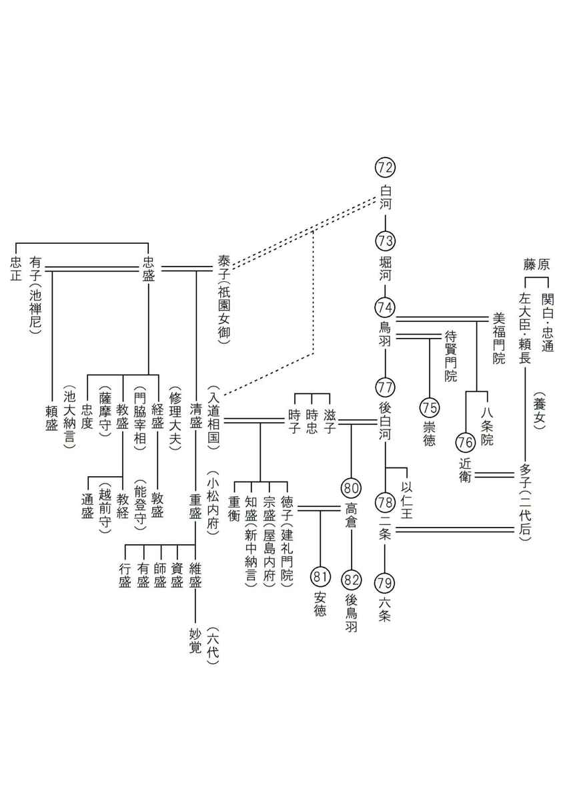

| これで読破！ 平家物語 巻第五 | |
| 三石由起子 | |
| genkosha (2014) | |
完訳 平家物語
百二十句本による
第四十一句から第五十句


巻五では平清盛の遷都「都遷」から始まり、平家の歴史が大幅に揺れ動く。巻四で扱われた以仁王、頼政の謀反は、わずか一日の合戦で敗北、挫折する。だが、その余波はあまりにも大きかった。刺激を受けた僧兵達が蜂起し、以仁王の令旨に動かされる諸国の源氏がある。平家の栄光は土台から揺すられる。
いわゆる清盛の横暴、権勢は第一に治承三年十一月のクーデターがある。第二には以仁王という宮を事情はどうあれ討伐したこと。第三がこの「都遷」で、さらに、巻五の最後には、奈良焼打ち事件が書かれている。続けざまに清盛の横暴を扱っていく。
第四十一句 みやこうつし（都遷し）
都遷し
一
治承四年六月三日、「福原へ行幸あるべし」とぞひしめきあへり。この日ごろ「都遷しあるべし」とは内々沙汰ありしかども、「今明のほどとは思はざりつるものを、こはいかに」とて、上下さわぎあへり。
三日にさだめられしが、あまつさへ今一日ひきあげて、二日になりにけり。
二日の卯の刻に行幸の御輿を寄せたりければ、主上は今年三歳、いまだ幼うましましければ、何心なう召されけり。主上のいとけなき御ときは、母后こそ同じ輿には召さるるに、今度はその儀なし。御乳母平大納言時忠の卿の北の方、帥の典侍殿ぞひとつ御輿には参られける。中宮、院、上皇も御幸なる。摂政殿をはじめたてまつり、太政大臣以下、公卿、殿上人、「われも、われも」と供奉せらる。
三日、福原へ着かせ給ふ。池の大納言頼盛の卿の宿所、皇居になる。
頼盛の家の賞とて正二位になり給ふ。九条殿の御子、右大将良通の卿に越えられ給ひけり。摂禄の臣の公達、凡人の次男に加階越えられ給ふこと、これはじめとぞ聞こえし。
さるほどに、法皇をば入道相国やうやう思ひなほりて、鳥羽殿を出だしたてまつり、八条烏丸の美福門院の御所へ御幸なしたてまつりしかども、また高倉の宮の御謀叛によりて、大きにいきどほり、福原へ御幸なしたてまつり、四面に端板して、口一つあけたるところに、三間の板屋をつくりて、おし籠めたてまつる。守護の武士には、原田の大夫種直ばかりぞ候ひける。たやすく人の参りかよふこともなければ、童部、これを「籠の御所」とぞ申しける。聞くもいまいましく、あさましかりし事どもなり。
「今は、万機のまつりごとを聞こしめさばやとは、つゆほどもおぼしめしよらず。あはれ、山々寺々修行して、御心のままになぐさまばや」とぞ仰せられける。「平家の悪行においては、きはまりぬ。去んぬる安元よりこのかた、おほくの卿相、雲客、あるいは流し、あるいは失ひ、関白を流したてまつり、わが婿を関白になし、法皇を城南の離宮にうつしたてまつり、第二の皇子高倉の宮を誅したてまつり、いま残るところ都遷しなれば、か様にし給ふにや」とぞ人申しける。
あはれ、旧都はめでたくありつる都ぞかし。王城守護の鎮守は四方に光を和らげ、霊験殊勝の寺々は上下に甍をならべ給ふ。百姓万民わづらひなく、五畿七道もたよりあり。されども今は、辻々を掘り切つては逆茂木をひきたりければ、車なんどのたやすう行き通ふこともなし。まれに行く人も小車に乗り、道を経てこそ通りけれ。軒をあらそひし人のすまひも、日を経つつ荒れぞゆく。家々は賀茂川、桂川にこぼち入れ、いかだに組み浮かべ、資財雑具は舟に積み、福原へとて運びくだす。ただなりに、花の都、田舎となるこそかなしけれ。
いかなる者のしわざにやありけん。旧都の内裏の柱に、二首の歌をぞ書きたりける。
百年を四かへりまでに過ぎにしを 愛宕の里のあれやはてなん
咲きいづる花の都をふり捨てて 風ふく原のすゑぞあやふき
治承四年六月三日に「福原へ行幸がある」との情報に大騒ぎである。最近、都を遷すということは内々には聞こえていたが、
「まさか、今日とは思わなかった。こはいかに。」
と、上も下も騒ぐ。
以仁王謀反の事件は五月の末に起きた。それから十日ばかり後の六月三日に決められていた日程が、一日繰り上げられて六月二日、摂津の福原に都が突然遷されたのである。
これは貴族達にとって驚天動地の大事件であった。自分達が暮らして来た政治、文化、生活の基盤がいきなり移動するのである。都遷しは、元来天皇でなければできない業であるのに、それを清盛がやってのけた。この京の都は、およそ三十代、四百年間動かぬ安定した都であった。それを清盛が強引に遷すのである。
二日の卯の刻に行幸の御輿を寄せる。安徳天皇は今年わずかに三歳。まだ幼くていらっしゃるので、何も思召されずにおられた。帝が幼い場合には、母后を同じ輿にお乗せするものだが、今度はそうなさらなかった。御乳母である平大納言・時忠卿の北の方（＝帥の典侍殿）がご同乗なさった。中宮も、院も、上皇も御幸なさる。上皇は高倉上皇である。また、さらには後白河法皇もおられた。摂政殿（＝藤原基通）を初めとして太政大臣以下、公卿や殿上人が、
「われも、われも」
と、供奉された。三日、福原にご到着。
池の大納言・頼盛卿の宿所が皇居になった。その褒美として、頼盛は正二位にご昇進。九条殿の御子である右大将・良通卿を飛び越しての高位であった。摂政関白を排出する家柄・九条家が、普通の家の次男に官位を越えられたのは初めてのことである。この間に、一度は鳥羽殿の幽閉を解いて八条烏丸の美福門院の御所へお移しした後白河法皇は、その後の以仁王の事件に腹を立てた清盛によって再び監禁されていた。法皇が以仁王を影で操ったと感じたからである。福原へお連れしたが、その御所は四面を板塀で囲い、出入口がたった一つ開けてあるだけのものだった。そこに三間の板屋を作って押し籠めたのである。見張りの武士には、原田大夫・種直が当たり、容易には人が出入りできない屋敷だったので、童部はこれを「籠の御所」などと呼んでいたのだった。聞くだけでもまことに忌まわしく浅ましいことである。
「今となっては、政治を行なおうなどという気持ちは皆無である。ああ、山々、寺々を修行して歩き、心のままに慰めたいものだ。」
と、仰せられたそうだ。
「平家の悪行はここに窮まった。去る安元からこのかた、大勢の卿相や雲客を流罪や死罪に処した。関白を流罪にして、自分の婿を関白にし、法皇を城南の離宮にお遷しして、その第二皇子・高倉の宮を誅された。横暴も残るところは遷都だけであろうから、このようなことをなさるのだろう。」
と、人は噂した。
ああ、京は素晴らしい都であった。帝都を守る鎮守の神々は御威光の光を和らげ人に接し、霊験殊勝の寺々は上京、下京に甍を並べて建っていた。民衆は苦悩も心配もなく、五畿七道も整って便利で安定していた。だが今は、辻々は掘り切られて逆茂木が引かれ、もはや車が容易に通れるような道もなくなってしまった。稀に行く者は小車に乗って、掘り返された辻を避けて遠回りして通るのである。建て込んだ家屋も日が経つにつれて荒れていく。家々は解体されて賀茂川、桂川に入れられ、筏に組み浮かべられ、また資財雑具は舟に積まれて福原へとて運び下すのである。急速に花の都が田舎になっていくのは悲しいことであった。
五畿は皇都周辺の特別行政地区・畿内（＝山城、大和、河内、和泉、摂津の五か国）をさし、七道は、東海道、東山道、北陸道、山陰道、山陽道、南海道、西海道をさす。京を惜しんで人々の心は竦んで行く。こういう世情の中では、「落書」と呼ばれるいたずら書きが出現する。萎んだ心を発散するのが当時の風俗であった。軍記物語には時々落書が出現する。時世を正面から批判するのではなく、影の確かな呟きとして表れる。そこには一般民衆の声として、最も平均的な時世に対する意見が伺われる。
誰が書いたものか、旧都の内裏の柱に二首の歌があった。
「百年を四かへりまでに過ぎにしを
愛宕の里のあれやはてなん」
京の都の土地が「愛宕の里」である。都は愛宕に建てられて、四百年間が過ぎたのである。それが今や、荒れ果てようとしている、という意味である。
「咲きいづる花の都をふり捨てて
風ふく原のすゑぞあやふき」
この歌には「風『吹く』と『福』原」が掛けられている。花の咲くように栄えていた都を捨てて、風の吹き荒ぶ福原に移り、この行く末はどうなることか、危ういことだ、という批判であった。福原は海岸で、潮風が吹き荒んでいる場所である。
本文の「軒をあらそひし人のすまひも日を経つつ荒れぞゆく」は『方丈記』の記述を踏まえた表現であろう。『方丈記』に書かれた五つの災害のうちの一つが、この都遷りである。『平家物語』は『方丈記』の名文を借用して使うことも多く、引用はこの後も時々見える。
続いて『平家物語』は、都遷しを過去の歴史から振り返って「並べて見る」作業をしている。「○○揃え」と言われる形の歴史解説である。神武天皇以来の遷都の歴史が述べられる。
二
都遷りはこれ先蹤なきにはあらず。神武天皇と申すは地神五代の帝、彦波瀲武鸕鶿草葺不合尊の第四の皇子。御母は玉依姫、海神の姫なり。天神七代、地神五代、神の代十二代のあとをうけ、人皇百代の帝祖なり。
辛酉の年、日向の国宮崎の郡にして皇王の宝祚をついで、五十九年といひし己未の年十月東征して、豊葦原の中津国にとどまり、このごろは大和と名づけたり畝傍の山を点げて、帝都を建てて、橿原の地をきり払ひて、宮づくりし給ふ。これを「橿原の宮」とは申すなり。
しかつしよりこのかた、代々の帝王、都を他国他所へ遷さるること三十度にあまり、四十度におよべり。
神武天皇より景行天皇まで十二代は、大和の国、郡々に都を建てて、他国へはつひに遷されず。
しかるを、成務天皇元年に、大和より近江の国に遷し、志賀の郡に都を建つ。
仲哀天皇二年に、近江の国より長門の国に遷して、豊浦の郡に都を建つ。かの都にて帝かくれさせ給ひしかば、后神功皇后御代を受け取らせ給ふ。女帝として、新羅、百済、高麗、契丹までも攻めしたがへさせ給ひけり。異国のいくさをしづめさせ給ひてのち、筑前の国御笠郡にして〔皇子〕御誕生、所を「宇美の宮」とぞ申しける。かけまくもかたじけなくも八幡大菩薩の御ことなり。位に即き給ひては、応神天皇これなり。
そののち神功皇后は、大和の国に帰りて、磐余稚桜の宮に住ませ給ふ。
応神天皇、同じき国軽島や明の宮に住み給ふ。
仁徳天皇元年に、摂津の国難波の浦に遷りて、高津の宮に住ませ給ふ。
履中天皇二年に、大和の国に遷りて、十市の郡に都を建て、
反正天皇元年に、河内の国に遷りて、柴籬の宮に住ませ給ふ。
允恭天皇四十二年に、なほ大和の国に遷りて、遠つ飛鳥の宮に住ませ給ふ。
雄略天皇二十一年に、同じく泊瀬朝倉に都を建つ。
継体天皇五年に山城の国綴喜に遷りて、十二年、そののち乙訓［＊「をとひこ」と有るのを他本により訂正］に住み給ふ。
宣化天皇元年、また大和の国に帰つて、檜隈や入野の宮に宮居し給ふ。それより、欽明、敏達、用明、崇峻、推古、舒明、皇極天皇まで大和に住み給ふ。
孝徳天皇大化元年、摂津の国長柄に遷りて、豊崎の宮にまします。
斉明天皇二年に、なほ大和の国に帰つて、岡本の宮に住ませ給ふ。
天智天皇六年に、近江の国に遷りて、大津の宮を造り給ふ。
天武天皇元年に、なほ大和に帰つて、岡本南の宮に住ませ給ふ。これを「浄御原の帝」と申しき。
持統、文武二代の聖朝は、同じき国藤原の宮に住ませ給ふ。元明天皇より光仁天皇まで七代は、奈良の都におはします。
遷都に先例がないわけではない。神武天皇は天照大神から始まる五代目の帝・彦波瀲武鸕鶿草葺不合尊の第四皇子である。御母は玉依姫という海神の姫であった。独り神であられた国常立尊から始まる天神七代、天照大神から始まる地神五代という神の代十二代の後を継がれた人間天皇百代の帝祖である。
辛酉の年に、日向国宮崎郡で皇位に就かれ、皇紀五十九年己未の年の十月に東征して豊葦原の中津国にお留まりになった。現在は大和と名づけられた畝傍山をお選びになって帝都を建て、橿原の地を切り払って宮殿をお建てになった。これを「橿原の宮」と言うのである。
それ以来、代々の帝王は、一代ごとに都をお造りになって、他国他所へ遷都されること三十度以上、四十度に及んだのである。
神武天皇から景行天皇までの十二代は、大和国の郡々に都を建てられたので他国への遷都はなかった。
しかし、成務天皇元年に大和から近江国に遷し、志賀の郡に都を建てられた。仲哀天皇二年に近江国から長門国に遷されて、豊浦郡に都を建てられた。
その都で帝がお亡くなりになったので、その后であった神功皇后が御代をお継ぎになった。女帝として新羅、百済、高麗、契丹までもお攻めになった。異国の戦を鎮定なさってから筑前国の御笠郡で皇子の御誕生があった。その場所を「宇美の宮」と申し上げる。「かけまくもかたじけなくも」口にするのも畏れ多いが、八幡大菩薩の御ことである。皇位を継承されてからのお名前は応神天皇である。
その後、神功皇后は大和国にお帰りになって磐余稚桜の宮にお住みになった。
応神天皇は、同国軽島の明の宮にお住まいであった。
仁徳天皇元年に、摂津国難波の浦にお遷りになって高津の宮にお住みになった。
履中天皇二年に大和国に遷り、十市郡に都をお建てになって、
反正天皇元年に河内国に遷られて柴籬の宮にお住みになった。
允恭天皇四十二年に再び大和国にお遷りになって遠い飛鳥の宮にお住みになった。
雄略天皇二十一年には同じ泊瀬朝倉に都をお建てになった。
継体天皇五年に山城国綴喜にお遷りになり、十二年以後は乙訓にお住みになった。
宣化天皇元年、また大和国にお帰りになって檜隈や入野の宮に宮居なさった。それ以後、欽明、敏達、用明、崇峻、推古、舒明、皇極天皇までは大和にお住みであった。
孝徳天皇の御代である大化元年に摂津国長柄にお遷りになり、豊崎の宮におられた。
斉明天皇二年には、なお大和国にお帰りになって岡本の宮にお住まいであった。
天智天皇六年に近江国にお遷りになり、大津の宮をお造りになった。
天武天皇元年に、また大和にお帰りになって岡本南の宮にお住みになった。これを「浄御原の帝」と申し上げる。
持統、文武二代の聖朝では、同国藤原の宮にお住みなさった。元明天皇から光仁天皇までの七代は、奈良の都にいらっしゃる。
古い時代では天皇一代ごとに宮殿を作り、その宮殿の所在地が都と呼ばれたのである。本文での箇条書きの中で、応神天皇が長いのは、応神天皇が特に皇室の先祖の神、八幡大菩薩だと考えられているからである。遷都の歴史をここまで辿った意味は、桓武天皇五十代で京都に遷って以後、都遷りの歴史には終止符が打たれたのだ、と結論するためである。遷都の歴史は終わったのに、それを清盛が強行した福原遷都であったと『平家物語』は書くのである。そうして、平安京の由来を長々と語る。
三
しかるを桓武天皇、延暦三年十一月三日奈良の京春日の里より、山城の国長岡に遷りて、十年といひし正月、大納言藤原の小黒丸、参議左大弁紀の古佐美、大僧都賢憬つかはして、当国葛野郡宇多の村を見せらるるに、両人ともに奏していはく、「この地の体、左青龍、右白虎、前朱雀、後玄武。四神相応の地。もつとも帝都を定むるに足れり」と申す。よつて、愛宕の郡にまします賀茂大明神に告げて申させ給ひて、同じく延暦十三年十月二十一日に、長岡の京よりこの京へ遷りてのちは、帝王は三十二代、星霜は三百八十余歳、春秋を送り迎ふ。
「昔より代々の帝王、国々、所々、おほくの都を建てられしかども、かくのごとく勝れたる地はなし」とて、桓武天皇ことに執しおぼしめす。大臣、公卿、諸道の才人に仰せて、「長久なるべき様に」とて、土にて八尺の人形を作り、鉄の鎧、兜を着せ、同じく鉄の弓矢を持たせて、東山の峰に西向きに立ててうづめられけり。「末代この京を他国へ遷すことあらじ。守護神となるべし」とぞ御約束ありける。されば天下に大事出で来んとては、この塚かならず鳴り動ず。「将軍塚」とて今にあり。
桓武天皇と申すは、平家の曩祖にておはします。なかにもこの京をば、平安城と名づけて、「平らかに安き城」と書けり。もつとも平家のあがむべき都ぞかし。先祖の帝さしもに執しおぼしめされける都を、させるゆゑなきに、他国、他所へ遷されけるこそあさましけれ。
平城天皇、尚侍のすすめによつて、すでにこの京を他国へ遷さんとせさせ給ひしを、大臣、公卿、諸国の人民嘆き申せしかば、つひに遷されずして止みにき。一天の君、万乗の主だにも遷しえ給はぬ都を、入道相国人臣の身として遷されけるぞおそろしき。「これは、国の夷賊攻めのぼつて、平家都にあとをためず、山林にまじはるべき先表か」とぞ人申しける。
第五十代桓武天皇は、延暦三年十一月三日に奈良の都・春日の里から山城の国長岡に都を定められた。そうして同十年の正月に大納言・藤原小黒丸、参議左大弁・紀古佐美（普通は「こさみ」）、大僧都賢憬をお遣わしになり、この京の葛野郡宇多の村を見せて検討させたのである。すると、
「左青龍、右白虎、前朱雀、後玄武。四神相応の地。帝都をお定めになる最適な土地でございます。」
と、奏上し、現在の地を推薦したのであった。という。
これらは、中国の陰陽五行思想で天地を守護する神獣である。それが適切に配された理想の地であった。「朱雀」は、雀ではなく怪鳥である。「玄武」は亀の化け物である。四つの神獣が守る「域」では、何事もうまく運ぶ。それぞれの神獣は四方を守る。青龍、朱雀、白虎、玄武は、青龍の東から時計回りに、南、西、北を守る。それは内裏から見れば、左が東、右は西の方向に当たる。
地形で言うなら「左青龍」青い龍が左にある。青龍の意味は川である。川が東を流れている。「右白虎」は街道である。街道が西に通じている。「前朱雀」は湿地帯で、南に湿地帯が広がっている。「後玄武」とは、後ろの北が山に囲まれていることを指す。京都の地形がそうであった。鴨川が東にあり、西は大宰府に向かう大きな道である。前面は、鳥羽、伏見に向かって低い低地が続いているが、昔は一体が湿地帯であった。北は山である。
古い寺は、このような地形が多い。たとえば浅草の浅草寺がそうである。東に隅田川が流れ、前は湿地帯で海につながっている。江戸時代まではそうであった。北は上野の山である。西は江戸の市中につながっている。「四神相応」なのである。古い神社や寺の地形を考察すれば、思い当たる事が多い。
そこで、愛宕郡に鎮座される賀茂大明神に事前に報告して、同延暦十三年十月二十一日に、長岡京から京への遷都があった。それ以後、帝王は三十二代、星霜は三百八十余歳の春秋を送って来たのである。
「昔から代々の帝王が、国々、所々に多くの都をお建てになったが、このように勝れた地はない。」
と、桓武天皇は特別にご執心であった。大臣、公卿、諸道の才人にお命じになり、
「この都が長久であるように。」
と、八尺の土の人形を作り、それに鉄の鎧兜を着せ、鉄の弓矢を持たせて、東山の峰に西向きに、すなわち京都の街を見下ろすようにお埋めになって、
「後世も、この都を他国へ遷すことはすまい。どうぞ守護神となってくれ。」との御約束があった。
そういう訳で、天下の大事があれば、この塚は必ず地鳴りをさせて動くのでる。「将軍塚」と呼ばれて現在も残っている。
東山の華頂山の南の峰に、この将軍塚が今でも残っている。天下に大事があれば、この塚は鳴動すると言われた。『保元物語』には、保元の乱直前に将軍塚が鳴動したとある。
桓武天皇は、平家の遠い祖先である。この京を平安城と名づけ、「平らかに安き城」と書くのである。平家が最も崇めるべき都ではないか。先祖の帝がこんなに執心なさった都を、理由もなく他国や他所に遷すのは、浅ましいことである。
その後、桓武天皇の皇子である平城天皇が、もう一度都を奈良へ戻そうとなさったことがある。藤原種継の娘・薬子を寵愛なさって、「尚侍（＝薬子）の勧めによって」のことだったが、大臣、公卿、諸国の人民が大いに嘆いた結果、結局は成就しなかったのである。都遷しは帝王でも容易にはできないことなのである。それを今や清盛が人臣の身として「遷されけるぞおそろしき」。
「これは、国の夷賊が攻め上り、平家が都に留まれずに山林に交わる先表（＝前兆）であろうか。」
と、人々は噂し、恐れたのであった。
清盛の横暴さを非難し、不吉な予兆を感じさせる語りである。
水原一の解説を引く。
「清盛が遷都を強行した福原は、以前から平家の別荘がかたまっていた場所でもあった。また、宋国との貿易が進むにつれて、清盛は瀬戸内海にまで宋船を導き入れたい意向があった。そこで福原に港を築く。清盛が築いた港が現在の神戸港であり、平家は福原を大事な貿易の根拠地と考えていたのであった。
一方、当時の公家達の反応は非常に複雑であった。これは一体「行幸」なのか「遷都」なのかを喧々囂々論議していた。突然に、安徳天皇以下、主だった方々を全てお連れして福原へ移ったのである。「都遷し」の会議などは何も行われなかった。抜き打ちで天皇を福原へお迎えしたのだから、これは単なる「行幸」であるという意見もあった。だが、清盛の意図は「遷都」以外の何物でもなかった。都遷しの理由は謎に包まれている。清盛の真意はいまだによくわかっていない。気違い沙汰だとも言われている。
しかし、実際には、以仁王の謀反が発覚し、奈良、三井寺の僧兵達が加担した段階で、平家は安徳天皇と共に福原へ移るようだとの噂がすでに囁かれていた。つまり、福原遷都は六月に突然思いついたのではなく、以仁王謀反の時期から、平家の中では囁かれていたのである。以仁王の事件は片付いたものの、その後の僧兵達の憤りを思えば、このまま都にいるのは不安だと考えたものか、福原にしばらく退いたのかもしれない。
しかし、清盛はただ退いたのではない。福原に滞在していたのは治承四年の十二月までの非常に短い期間だが、その間に清盛は、二度ほどはるばると九州まで舟で出かけている。大事な政治を放り出して遠出したのも不思議だが、どうやら清盛は西の国に政府を移して西日本の再編成を考えていたのではないかと思われる。実現しなかったので想像によるしかない。確かなことは、清盛が単なる思いつきや気違い沙汰では、そんなことはしなかったろうということだ。周りの人には伺い知れない突拍子もない構想を持っていたのではなかろうか。
ことに巻五の終わりでは「奈良焼打ち」という暴挙に出る。それを考えれば僧兵達との対決も覚悟していただろうし、その準備として福原へ天皇をお遷ししたのかもしれない。謎の多い都遷しである。」
都遷しは人だけが移動しても用をなさない。新しい都を作るための都市計画が必要だった。だが、福原は北には山が迫り、南は海を控えた土地で大変に狭いのである。とても京都のような広大な碁盤目の都市は造れない。それを建設するのに手間取っている間の出来事として、一つの美しい逸話が差し挿まれる。
月見の話である。
第四十二句 月見
〔第四十二句 月見〕新都の事始め
一
同じく六月八日、福原には、「新都の事始めあるべし」とて、上卿に徳大寺殿左大将実定の卿、土御門の宰相中将通親の卿、奉行には頭の弁光雅、蔵人左少弁行隆、官人どもあひ具して、和田の松原の西の野を点げて、九条の地を割られけるに、一条より下五条まではその所ありて、五条より下はなかりけり。行事、官人ども参りて、このよしを奏問しければ、「さらば播磨の印南野か、また摂津の国の昆陽野か」なんどと、公卿僉議ありしかども、事ゆくべしとも見えざりけり。旧都をばすでに浮かれぬ。新都はいまだ事ゆかず。ありとしある人みな浮雲の思ひをなす。もとこの所に住む者は、地をうしなひてうれへ、今遷る人々は土木のわづらひを嘆きあへり。総じて夢の様なる事どもなり。
土御門の宰相の中将通親の卿申されけるは、「異国には『三条の広路を開いて、十二の通門を立つる』と見えたり。いはんや五条の都に、などか内裏建てざるべき。かつ里内裏を造らるべし」とて、五条の大納言邦綱の卿、臨時に周防の国を給はつて、造進せらるべきよし、入道相国はからひ申されけり。
この邦綱の卿は、ならびなき大福長者にておはしければ、造り出ださんことは左右におよばねども、いかでか国の費え、民のわづらひなかるべき。さしあたる大事の大嘗会なんどを行はるべきをさしおいて、かかる世の乱れに都を遷し、内裏を造らんことすこしも相応せず。
いにしへ、賢き御代には、すなはち内裏に茅を葺き、軒をだにも切られず。煙のともしきを見給ふときには、かぎりある貢物をゆるしき。これすなはち民をめぐみ、国をただしうし給ふによつてなり。
楚は章華の台を建てて、黎民をあらし、秦は阿房殿を建てて、天下乱るといへり。茅茨きらず、采椽けづらず、舟車かざらず、衣服文なかりし世もありけんものを、人、「おそろし、おそろし」とぞ申しける。「唐の太宗は驪山宮を造りて、民の費えをはばからせ給ひけん、つひに臨幸なうして、瓦に松おひ、垣に蔦しげりてやめられけるに相違かな」とぞ人申しける。
同年六月八日、福原では、「新都の事始めの儀式」として、主賓に徳大寺殿左大将・実定卿、土御門宰相中将・通親卿を据え、奉行に頭の弁・光雅、蔵人左少弁・行隆、その他の官人どもが寄り集まった。和田の松原の西の野を起点として九条の地を割ってみたが、一条から下五条までは整備できても五条から下の通りが造れないのである。
福原は南北が迫った土地である。本来、都には九条の路（九つの大通り）を通さなければならないのに、それができない。五条から下の道を通す余地がなかった。これは伝統を重んじる貴族達にとっての一大事であった。結論として、この場所は都に相応しくないということになる。
ではもっと広い場所をと、
「播磨の印南野（姫路寄りの野原）か、摂津国の昆陽野（大阪寄りの野原）か。」
などと、公卿僉議があったが、事が運ぶとも思われない。旧都はすでに離れてしまった。新都はまだ都市計画も成らないのである。
この文章からもいかに強引な都遷しだったかがしのばれる。土地の選定もせぬまま、人だけがもう移っていたのである。
全ての人々が皆、地を失った浮雲のような思いをしていた。従来、この土地に住んでいた者は、土地を失って憂いていた。また、今ここに遷って来た人々は土木工事の諸般の苦労と煩雑さを嘆きあっていた。総じて夢のような事だと思われた。
そこに土御門・通親卿が、
「異国には『三条の広路を開いても十二の通門を立つる』という文章がある。ましてや五条もあれば、充分内裏を建てることは可能ではないか。取りあえず仮御所をお造り申せ。」
と、発言したのである。
中国の『文選』の「成都賦」には「三筋の道路を開いて、十二の門を建てて宮殿を作った」という記述があって、それを根拠に述べたのであるが、この文章の「三条の広路を開いて」は宮殿のことで都のことではない。つまりこれは詭弁であった。だが、その意見が通った。
五条大納言邦綱卿は、臨時に周防国を頂いてその役に就いた。入道相国の計らいによるものであった。この邦綱卿は、並びのない大金持ちであったので造営することは大した問題ではなかったが、どれほどの国の費え、民の煩いを伴うか知れないのである。しかし、さし当たっての大事である大嘗会をどうするのか。安徳天皇が即位した最初の年である。十一月の「大嘗会」という盛大な儀式をまず考慮しなければならない。それを差し置いて、新しい都の普請、建築は、少しも相応しいことではない。
貴族からの当然の批判であった。
「昔の名君・中国の堯帝は、住居の内裏に茅を葺き、その先を切り揃えることすらしない「茅茨剪らず」の粗末な宮殿にお住みであった。仁徳天皇は、民の竈から立ち上がる煙が乏しいのを御覧になって、税に苦しんでいるのを察知し、免税の措置を取られた。これは、民を慈しみ、国を正しく導かれたからである。楚の霊王が贅沢な御殿を建て、秦の始皇帝が阿房殿という大きな御殿を建てて天下は乱れたと言われている。茅茨も切らず、切りだした丸木も削らず、車に飾りも付けず、衣服には模様もないご立派な王が政治をした時代もあったのに。」
と、人々は、「おそろし、おそろし」と噂した。
「唐の太宗は驪山宮という立派な宮殿を造ったが、人民の負担に遠慮して遂に御幸もなさらず、遂には瓦には松が生え、垣根には蔦が這って、造りはしたが使わなかったという例もある。大層な違いだ。」
と、思い比べて言い合った。
それらの批判を無視して棟上げが行われ、御遷幸の日取りも定められた。このような状況の中で八月十五日がやって来るのである。
二
六月七日、新都の事始めありて、八月十日棟上げ、十月七日御遷幸と定めらる。旧都は荒れゆく。今の都は繁昌す。あさましかりし夏も過ぎ、秋にもすでになりにけり。
福原におはする人々の、秋もなかばになりぬれば、名所の月を見んとて、あるいは源氏の大将の昔の跡をしのびつつ、須磨より明石の浦づたひ、淡路の瀬戸をおし渡り、絵島が磯の月を見る。あるいは白浦、吹上、和歌の浦、住吉、難波、高砂の尾上の月のあけぼのを、ながめて帰る人もあり。旧都にのこる人々は、伏見、広沢の月を見る。そのうちに、徳大寺の左大将実定の卿は、旧都の月をしたひて、入道相国の方へ案内をえて、八月十日あまりに、福原より都の方へのぼられけり。なにごとも昔にかはりはてて、残る家は、門前草深く庭上露しげし。浅茅生が原、蓬が杣、鳥の臥所と荒れはてて、虫の声々うらみつつ、黄菊紫蘭の野べとぞなりにける。故京の名残とては、近衛河原の大宮ばかりぞおはしける。
実定の卿、その御所へ参り、まづ随身をもつて惣門をたたかせぬれば、うちより女の声にて、「誰そや、この蓬生の露うち払ふ人もなきところに」ととがめければ、「福原より大将殿御参り」とぞ申しける。「惣門は錠のさしてさぶらふぞや。東面の小門より入らせ給へ」とありしかば、大将殿うちめぐりてぞ参られける。
をりふし大宮は、昔もや御慕はしうおぼしめされけん、南殿の格子をあげさせ、御琵琶あそばしけるをりふし、大将つつと参られたり。「これは夢かや、うつつかや、これへ、これへ」とぞ召されける。
源氏宇治の巻には、優婆塞の宮の御姫、秋の名残を惜しみつつ、琵琶を調べて夜もすがら心をすまし給ひしに、有明の月の出でけるを、なほ堪へずやおぼしけん、撥にて招き給ひしも、今こそおぼしめし知られけれ。小夜もやうやうふけゆけば、大宮は旧都の荒れゆくことどもを語らせおはしませば、大将は今の都の住みよきことをぞ申されける。待宵の小侍従と申す女房も、この御所にぞ候はれける。そもそもこの女房を「待宵」と召されけることは、あるとき、大宮の御前にて「待つ宵と帰る朝とは、いづれかあはれはまされるぞ」と御たづねありければ、いくらも侍はれける女房たちのうちに、かの女房、
待つ宵のふけゆく鐘のこゑきけば あかぬ別れの鳥は物かは
と申したりけるゆゑにこそ「待宵の侍従」とは召されけれ。背のちひさきによつてこそ「小侍従」とも召されけれ。
大将この女房を呼び出だし、いにしへ今の物語どもし給ひけるが、あかつき方にもなりしかば、横笛の音取り、朗詠して、旧都の荒れゆくことどもを今様にこそうたはれけれ。
古き都をきてみれば浅茅が原とぞあれにける
月の光は隈なくて秋風のみぞ身にはしむ
と、おし返し、おし返し、二三返歌ひすまされたりければ、大宮をはじめまゐらせて、御所中の女房たち、みな感涙をぞながしける。
夜も明けければ、大将いとま申して出でられけるが、御供に侍ふ蔵人泰実を召して、「侍従があまりに名残惜しげに見えつるに、なんぢ行きてなにとも言ひて来よ」と仰せければ、蔵人走り帰りて、侍従が前にかしこまつて、「これは大将殿より申せと候」とて、
物かはと君がいひけん鳥の音の けさしもなどか悲しかるらん
侍従涙を押さへて、
待たばこそふけゆく鐘もつらからめ あかぬ別れの鳥の音ぞうき
蔵人走り帰つて、このよし申したりければ、大将「さればこそ、なんぢをばつかはしつれ」とて、大きに感ぜられけり。
それよりしてぞ、「物かはの蔵人」とは召されける。
六月七日、新都の造営が開始されて八月十日には棟上げ、十月七日御遷幸と定められた。旧都が荒れゆくにつれて、今の都は繁昌していく。浅ましいことの多かった夏も過ぎ、秋になったのである。福原に住むことになった人々は、秋も半ばになったので、京都では見られない趣向の月見をしたいと思っていた。そこで光源氏の跡を偲んで須磨から明石の浦を伝い、淡路の瀬戸をおし渡って、絵島が磯の月を見る者もいた。あるいは白浦、吹上、和歌の浦、住吉、難波、高砂の尾上の月の曙を眺めて帰る人もあった。福原に来ないで旧都に残っていた人々は、伏見、広沢の月を見ていた。
名月の夜である。どこにいようが貴族達にとって、「月見」は欠くことのできぬ行事である。
そんな中で、徳大寺左大将・実定卿は、旧都の月を慕い、入道相国の許しを受けて八月十日あまりに福原から京の都に戻っていた。何事も昔とは変わり果てて、残っている家は門前の草が深く庭の露も多かった。浅茅生が原、蓬が杣、あるいは鳥のねぐらのように荒れ果てて、虫の声々は恨み言を言うかのように切なく聞こえ、黄色の菊や紫の藤袴の秋草が生える野辺となっていた。故郷の名残りとしては、近衛河原の大宮だけがそのままであった。
近衛河原の大宮・多子は実定の妹で、今は世間との付き合いを絶って寂しく暮らしていた。その多子の元へお見舞いがてら月見に行くのが、この「月見」の中心部分である。多子は、近衛天皇のお后であったが、二条天皇に再び入内して、「二代后」と言われた方である。二条天皇が崩御されて後に出家しておられた。都の人々が潮が引くように一斉に福原へ遷った後では、こうした世に取り残された人々だけが都に残っていたのである。
実定卿は、その御所へ参って随身に門を叩かせると、中から女の声で、
「誰そや。この蓬生の露を払う者とていない場所に。」
と、誰何されたので、
「福原より大将殿御参り。」
と、随身が申しあげた。
「門は錠がさしてあります。東面の小門からお入り下さい。」
との指示だったので、実定大将は、ぐるりと回ってそこからお入りになった。
ちょうど大宮（＝多子）は、昔の観月のお遊びを懐かしく思い出されたのか、南殿の格子を上げさせて、月を御覧になりながら琵琶を弾かれておられたところに、大将がつつと参上したのであった。
「これは夢かや、現かや、これへ、これへ。」
と、お召しになった。
源氏物語の宇治の巻には、「優婆塞の宮（＝八の宮、光源氏の弟）」の姫達の話がある。秋の名残を惜しみながら琵琶を弾いて夜中心を澄ましていると、有明の月になってしまった。それをなおも名残り惜しく思われて、琵琶の撥で月を招き返そうとした話だが、その心情が今になって理解されるようであった。小夜も段々に更けていき、大宮は京の都が荒れゆくことなどをお話ししておられると、実定大将は今の都・福原の住み良さをお話しになる。
待宵の小侍従と呼ばれる女房が、この御所にお仕えしていた。有名な女性歌人であった。そもそもこの女房を「待宵」と言うには逸話があっる。ある時、大宮の御前で、
「「待つ宵」と「帰る朝」とは、どちらが哀切の思いが深いであろうか。愛人の訪れを今か今かと待つ宵と、ひと夜語らってから帰って行く愛人を送り出す別れの朝と、どちらを辛く思うか。」
とのお尋ねがあったが、大勢の女房達が様々にお答えした中で、この女房は、
「待つ宵のふけゆく鐘のこゑきけば
あかぬ別れの鳥は物かは
（恋人を待ちわびる宵が空しく更けていく。その待つ宵に鐘の音を聞いたその切なさに比べますと、名残惜しい朝の別れに鳥の声を聞くその寂しさは、寂しいは寂しいでしょうが、比べ物にはなりません）。」
と、歌でお答えしたので、それ以後「待宵の侍従」と呼ばれるようになったのである。背が低いので「小侍従」とも言われる。
『平家物語』に述べられる「背が低いので「小」が付いた」は俗説である。女房名に「小」の字が付くのはよくあった。この女房の母親はやはり歌人で「小大進」という。父親は石清水八幡別当大僧都光清（紀光清）で、大宮にお仕えしていた。頼政が、大宮に頻繁に出入りした記述があったが、その頼政も小侍従とはよく歌を詠み交わしたらしい。
実定大将は、この女房を呼び出して昔や今の物語などをしておられたが、暁方にもなったので、横笛の音を取って朗詠すると、旧都の荒れゆく有様を今様にしてお謡いになった。
古き都を来てみれば浅茅が原とぞ荒れにける
月の光は隈なくて秋風のみぞ身には沁む
と、押し返し、押し返し、二、三返歌い澄ますと、大宮を始めとして御所中の女房達が皆、感涙を流した。
実定は今様の名手である。自作の今様を即席で作ったのだろう。今様は平安時代の末から鎌倉時代にかけて流行した歌謡曲である。普通は七五調、四句で歌われる。
古き都を来てみれば浅茅が原とぞ荒れにける
（古い都を訪れて見ると、今はまばらの茅の原、浅茅が原となって荒れ果ててしまった）
月の光は隈なくて秋風のみぞ身にはし沁む
（だが月の光は曇りなく輝いて秋風ばかりが身にしみて吹きわたる）
美しくも寂しい今様である。御所中の女房達が涙を流したのも無理はなかった。
この四十二句「月見」には美しい王朝風の場面が次々に重なる。その最後の場面はこうである。
夜も明けたので、大将はお暇を申し上げて退出されたが、その時、お供に侍っていた蔵人・泰実をお召しになって、
「侍従があまりにも名残惜しげに見えたので、もう一度引き返して、お前が何とでも言って来よ。」
と、仰せられた。
男女がひと夜会った翌朝には、男からいわゆる「後朝の文」として名残を偲ぶ手紙と歌を贈るのが習わしであった。だが、小侍従があまりにも名残惜しそうに見えたのが心残りだった。実定は戻ってからでは遅いと判断して、道の途中から使いを走り戻らせたのである。しかも口上を与えたわけではない。「お前、行って、何とでも良いように言って来ておくれ。お前に任せるから」と言うのであった。
蔵人は走り帰って侍従の前に畏まると、
「これは大将殿からのお託でございます。」
と、前置きしてから、即席で歌を詠んだ。
「物かはと君がいひけん鳥の音の
けさしもなどか悲しかるらん
（あなたは「あかぬ別れの鳥は『物かは』」とお詠みになりましたが、その鳥の声がなぜ今朝はこんなにも悲しく聞こえるのでしょうか）」
と、素晴らしい歌であった。侍従も涙を押さえて、
「待たばこそ更けゆく鐘も辛からめ
あかぬ別れの鳥の音ぞ憂き
（思う人を待つ身であればこそ、更けゆく鐘の音が辛いのですが、今朝はまたいつかお会いできるとも知れぬ別れなので、名残りは尽きません。鳥の声の方が悲しく思われます）」
と、返歌したのであった。
蔵人が走り帰ってこれを報告する。余程心の利いた家来でなければこのような役目は勤まらない。実定も、
「さればこそ、お前を使いに出したのだ。」
と、大いに満足して褒めたのであった。
それ以後、この蔵人を「物かはの蔵人」と呼ぶようになったのである。そういう名誉なあだ名をいただいてお仕えしたのであった。
水原一の解説を引く。
「この話は『十訓抄』や『今物語』のような中世の説話集に、ほとんど『平家物語』と同様の文章で載せられている。大納言・実定の逸話であり、その相手が小侍従であることも明らかである。だが、そこでは蔵人の名前は伏せられて分からない。『新拾遺集』には「物かは」との歌が取り入れられているが別名になっていて、蔵人の実名には疑問が残っている。さらに当時、この小侍従が何歳ぐらいの女性であったかについても分かっていない。後朝の歌を帰るまで待てないほどであった。それほど実定とは昵懇であった。蔵人との応答にも、実定との親密さが伺われる。しかし、他の資料による推定では、小侍従はこの時すでに、五十歳代であったと言われる。しかもその前年、つまり治承三年には尼になっていたという。そうした事実から『平家物語』の「月見」を実話ではなく、創作だと考える人も多い。だが、当時の歌壇の社交的な雰囲気の中では、こういうことは意外に存在したのである。
たとえば、大宮の向かい側に住んでいた頼政が、大宮の御所に遊びに来ては、この侍従と歌を詠み交わし、恋人同士のような語らいをしていた。その頼政も七十歳の老人で謀反を起こしている。実際には若い恋人同士ではないが、歌の中では恋人同士の雰囲気で詠み交わすという、自由な雰囲気があったのである。あるいは、『平家物語』で歌人として有名な薩摩守忠度や、洒落た紳士として聞こえていた藤原隆信などとも、この小侍従は恋の歌を詠み交わしている。そうした社交的な雰囲気のある歌壇であり、珍しくもなければ、ひどい作り事だとも言うべきものでもない。」
それにしても、この「月見」は艶やかである。「待つ宵」と「帰る朝」のどちらが辛いかという質問をしたのは、本によっては大宮、高倉院と違った説がある。元々は、『栄華物語』で、元良親王が、同じ質問をなさった。
「来や来やと待つ夕暮れと、今はとて帰る朝といづれまされり」
と、ご下問があった。歌の中での話、歌論である。来るか来るかと待っている歌と、恋人が帰ってしまう朝の歌と、どちらが優れているか、という質問であった。それに対して本院の侍従という女性が、「夕暮れは頼む朝になぐさめつ 帰る朝は消ぬべきものを」と、「帰る朝」は私の心も消えるのだと返事をした。そういう先行の話がある。全く同じ質問であるが、これは「春秋論争」と同じく、いわば教養試験である。正確な答えを求めるのではなく、その答え方を問うている。答えの中に見える教養を争う質問なのである。待宵の小侍従は、歌で答えた。その答え方ゆえに名誉の名前をいただいたという逸話なのである。
当然のことではあるが、『栄華物語』にこの話があるからと、『平家物語』のこの部分が虚構だとは到底言えない。貴族の社会で、くり返し行われる教養試験の一つなのである。
第四十三句 もつけのまき（物怪の巻）
物怪の巻
第四十二句「月見」は『平家物語』には珍しい王朝絵巻風の美しい逸話であったが、四十三句の「物怪の巻」は、一転して大変おどろおどろしい。交響曲に譬えるなら、突然の不協和音で不気味に鳴り響く場面である。
清盛をめぐってさまざまな不吉な事件が起きる。これがやがて平家の傾く予兆になるのである。
一
そのころ福原には、人々夢見ども悪しう、常は心さわぎのみして、変化の物おほかりけり。あるとき入道の臥し給へるところに、一間にはばかるほどの物出で来つて、入道をのぞいて見たてまつる。入道少しもさわぎ給はず。はたとにらまへてましましければ、ただ消えに消え失せぬ。
また岡の御所と申すは、新造なれば、しかるべき大木もなかりけるに、ある夜大木の倒るる音して、二三十人が声にてどつと笑ふことあり。これは天狗の所為といふ沙汰にて、蟇目の番を、夜百人、昼百人そろへて射させらるるに、天狗のある方へ向かひて射たるときは音もせず、なき方へ向かひて射たるときは、どつと笑ひなんどしけり。
ある朝、入道相国帳台より出で、妻戸押し開き、坪のうちを見給へば、曝れたる首どもいくらといふ数を知らず、みちみちて、上になり下になり、ころびあひ、ころびのき、中なるは端へころび出で、端なるは中へころび入り、おびたたしうからめきあひければ、入道相国、「人やある、人やある」と召されけれども、をりふし人も参らず。
「こはいかに」と見給へば、多くの髑髏どもが一つにかたまりあひて、「高さ四五丈もやありけん」とおぼしくて、一つの大頭に千万の眼あらはれて、入道をにらまへて、まだたきもせず。入道少しもさわがず、にらまへてしばらく立たれたり。あまりに強うにらまれて、露霜なんどの日にあたりて消ゆる様に、跡かたもなくなりにけり。
また入道相国の宿所ちかく、五葉の松の栄えたりけるが、夜の間に枯れたりけるぞ不思議なる。また、舎人あまたつけて、ひまなく撫で飼はれける馬の尾に、一夜がうちに鼠巣をくひ、子をぞ産みたりける。「これただごとにあらず」とて、七人の陰陽師に占はせられければ、「重き御つつしみ」と申す。この馬は、相模の国の住人大庭の三郎景親が、「東八箇国一の馬」とて、入道相国に参らせたり。黒き馬の額白かりければ、名を望月とぞつけられける。やがて陰陽頭泰親にぞ賜はりける。
昔、天智天皇の御時、「寮の御馬の尾に鼠巣をくひ、子を産みたるには、異国の凶賊蜂起したりける」とぞ日本紀には記されたる。
また、源中納言雅頼の卿のもとに侍ひつる青侍が見たりし夢もおそろしかりけり。たとへば、内裏の神祇官とおぼしき所に、束帯ただしき上臈たちのあまた並みゐて、議定の様なることのありけるに、末座なる人の、平家の方人するかとおぼしきを、その中より追つたてらる。かの青侍、夢のうちなれば、「いかなる上臈にてましますやらん」と、ある老翁に問ひたてまつれば、「厳島の大明神」と答へ給ふ。
そののち、座上にけだかげなる老翁のおはしけるが、「この日ごろ平家にあづけつる節刀をば、今は伊豆の国の流人頼朝に賜ぶ」と仰せければ、また、かたはらに宿老のましましけるが、「そののちはわが孫にも賜び候へ」と仰せらるるといふ夢を見て、次第に問ひたてまつるに、「『節刀を頼朝に賜ぶ』と仰せられつるは八幡大菩薩、『そののちわが孫にも』と仰せられしは、春日大明神、かう申すは武内大明神」と答へらる。
この夢を人に語るほどに、入道聞きつけ給ひて、摂津の判官盛澄をもつて雅頼の卿のもとへ、「夢見の青侍いそぎこれへ」とありければ、かの青侍、やがて逐電してげり。雅頼の卿いそぎ入道相国のところへ行きむかひ、さまざまになだめ申されければ、なにとなくうち紛れて、そののちは沙汰もなかりけり。
日ごろは、平家天下の将軍にて、朝敵をしづめしかども、今は勅命にそむけばにや、節刀をも召し返されぬ。心細うぞ聞こえける。
なかにも高野におはしける宰相入道成頼、この事どもを伝へ聞いて、「すはや、平家の世は末になるごさんなれ。厳島の大明神の、平家の方人をし給ひけるは、そのいはれあり。ただし沙竭羅龍王の第三の姫宮なれば、女神とこそうけたまはれ、俗体にて見え給ふこそ心得ね」とのたまひければ、ある僧の申しけるは、「それ和光垂迹の方便まちまちなれば、三明六通の明神にて、あるときは俗体とも現じ給はんこと、かたかるべきにあらず」とぞ申されける。憂き世をいとひ、まことの道に入りぬれば、往生極楽のいとなみのほか他事やはあるべきなれども、善政を聞きては感じ、悪事を聞きては嘆く、これみな人間のならひなり。
何とも不思議な気味の悪い事件が次々と書かれる。
その頃、福原では、人々の夢見が悪く、常に胸騒ぎがして変化の物が多く出没した。ある時、清盛入道が寝ている所に「一間にはばかるほどの物」柱と柱の間につかえるほどの大きな物がやって来て、入道を覗きこんだ。入道は少しも騒がず、はたと睨み返すと忽ちに消え失せてしまった。
次には「岡の御所」の話である。福原には色々な御所があるのだが「岡の御所」という御所がある。これは新しい御所なので、庭先には大木などないのだが、ある夜、大木が倒れる音がした。続けて二、三十人の笑い声が起こり、これは天狗の仕業であるとされた。
当時は奇怪な現象は天狗の仕業だとされた。特に山奥で仕事をする樵などは、大木の倒れる音を聞き、実際には倒れていないのを見て天狗だと断じた。
そこで、魔除けのために蟇目を射る。矢尻のない鏑矢を射るのである。非常に大きな音を立てる魔除けの矢であるが、これを百人の武士を揃えて夜昼交代で射たせる。あちこちへ射るのである。だが、天狗がいる方角に向けて射ても音もしないが、見当外れの方角に射ると天狗がどっと笑うのであった。
また、ある朝、入道相国が帳台より出て妻戸を押し開いて中庭を御覧になると、生首、骸骨、髑髏がたくさん現われてごろごろしている。上になり下になって、転びぶつかり、転び退いて、中にある物は端へと転び出て、端にある物は中へと転び入って、夥しく絡んでいたのだった。入道相国が、
「人やある、人やある。」
とお呼びになったが、ちょうど誰もが不在で参じない。
「こはいかに。」
と御覧になると、多くの髑髏が一つに固まって、高さ四、五丈にもなった。
それが一つの大頭となり、千万の眼が出現して入道を睨むのであった。瞬きもしない。ここでも清盛入道は少しも騒がず、睨み返してしばらくそのまま立っておられた。あまりに強い眼力で睨まれたせいか、露や霜が日に当たって消えるように跡かたもなく消えたのである。
あるいは入道相国の宿所近くに生えていた立派な五葉の松の話がある。五葉の松はめでたい木として庭によく植えられる。松はただでさえ長寿であるが、その松が夜の間に突然枯れてしまったという。
さらに気持ちの悪いのは、清盛が大事に飼っていた馬の尾に一晩のうちに鼠が巣を作り、その巣の中に子鼠がうじゃうじゃと生れた。ただ事ではないと思って七人の陰陽師に占わせると、「重大な慎み事」だというのである。この馬は相模の住人・大庭三郎・景親という武士が関東一の名馬であると献上した馬であった。黒い馬で額が白い。まるで夜空に月が出ているようだというので「望月」という名がついていた。その尾に鼠が巣をくい、子供を産んだのである。そこでそのまま望月を陰陽頭・泰親に下してしまった。昔、天智天皇の御代に、「寮の御馬の尾に鼠が巣を作って子を産んだ。それは異国の凶賊が蜂起した兆であった」と『日本紀』には記されている。
次にまた、畳みかけるような不吉な話がある。源中納言・雅頼という貴族に仕える若侍が変な夢を見た。平家滅亡を予言する恐ろしい夢であった。
これは、俗に「青侍の夢」と呼ばれる物語である。六位の侍は青い色の服を着るので青侍と呼ばれる。若侍と訳して良い。
夢の説明がある。
内裏の神祇官の場所らしい所に、威儀を正した貴人が大勢で並んで会議をしている。末席にいた平家の味方だと思われる方が、その席から追い払われた。青侍が夢の中で、
「今追い払われた方はどういう方ですか。」
と訊くと、居合わせた老人が、
「あれは厳島の大明神だ。」
と、お答えになった。
厳島の神は平家の守り神である。その後も会議が続いて、上席にいた気高い老人が、
「当分の間、平家に預けてあった節刀を、今は伊豆国の流人である頼朝に渡そう。」
と、おっしゃった。
節刀とは朝敵を討つため、将軍が派遣される際に帝から頂く印の剣であり、任務が終わればお返しする習わしであった。「節」は「長い房」であり、長い房のついた刀が「節刀」で、将軍の任務を象徴する印である。それを今後は頼朝に与えようというのだから、平家は将軍としての座を追われるという意味なのであった。すると、傍らに宿老（年功を積んだ老人）がいて、
「その頼朝に与えた後は私の子孫にも下さい。」
と、おっしゃった、という夢である。
青侍が夢の中でそれらの発言者を尋ねると、老人が色々と教えてくれた。節刀を頼朝に与えようとおっしゃったのは、八幡大菩薩である。八幡様は、応神天皇、皇室の先祖の神である。また、源氏の守り神でもあった。「わが孫にも」とおっしゃったのは、春日大明神である。春日の神様は藤原氏の守り神である。
「「かう申す」こう解説しているのは、武内大明神である。」
と、言われた。武内宿禰で、長生きで有名な大臣であった。そういう夢を見たのであった。
この青侍がその夢を人に語っているうちに清盛の耳に入った。そこで摂津判官・盛澄を差し向けて、
「夢見の青侍、速やかに出頭せよ。」
と命じたが、これは大変だと青侍は行方をくらましてしまった。
雅頼が急いで参じて色々とお詫びをしたので、結局はうやむやに終わってしまった。
これが「青侍の夢」である。この話は今までの様々な細々とした不吉な話の中でも、最も具体的にはっきりと平家滅亡とそれに代わる頼朝の天下を予言したものである。
普段は、平家は天下の将軍であり、朝敵を鎮めた者ではあったが、今では勅命に背いたせいだろうか、節刀をも召し返されようという状態になったのであった。心細い夢であった。高野にいた宰相入道・成頼は、これを伝え聞いて、
「すはや。平家の世は末になったと見える。厳島の大明神が平家の味方をなさったのには理由があるから理解できるが、そのご神体は海の神・龍王の第三姫宮（＝乙姫）であるから女神であるはずだ。それが夢の中で俗体の姿であったのが腑に落ちない。」
と、おっしゃった。
宰相入道・成頼は、藤原氏の葉室流である葉室成頼という当時の賢臣であり、知識人であった。巻三の終わりで世を見限って高野山に隠遁している。だが、隠遁はしたものの、やはり世の中が気に掛かり、よく観察して鋭い時世批判の言葉を吐いた。それが『平家物語』の中にも取り入れられている。「すはや、平家の世は末になるごさんなれ。（＝もうこれで平家の世は終わったとみえる）」と解説している。
乙姫が夢の中で俗体だったのに合点がいかぬという成頼に、別の僧が、
「そもそも仏菩薩がこの世に化身して現われる方法はさまざまであるから、種種の変化が可能である。時には、俗体の老人として現れるのは不思議ではない。」
と、申し上げたそうな。
「和光垂迹」は、日本の神々は仏教の仏達がそれぞれに姿を変えて現れたものだという考え方である。厳島の神も仏の変化である。姿を変える神通力のある神なので、時には女神ではなく俗体で現れることもあり得ぬことではない、との解説であった。この部分は、夢の時事解説ではなく、仏教解説である。
結びは成頼に対する批評である。「憂き世をいとひ、まことの道に入りぬれば、往生極楽のいとなみのほか他事やはあるべきなれども、善政を聞きては感じ、悪事を聞きては嘆く、これみな人間のならひなり。」憂き世を厭って、誠の道に入った成頼のことであるから往生極楽の修行の他、俗事に関わって良い筈はないのだが、善政を聞いては感激し、悪事を聞いては嘆く、それが人間の習いなのだろうと、俗人の心を高野に入っても持ち続ける成頼を嘆じている。
「青侍の夢」は平家の転換期を告げる重要な話である。平家に預けてあった節刀を召し返して頼朝に与えようと言った八幡大菩薩の言葉、その席から追い出された厳島の神を考えると、巻三「大塔建立」に出ていた清盛の夢が思われる。厳島の神から夢の中で長刀を頂き、目覚めると実際に枕元にそれがあったという長刀である。その時、厳島の神は、悪業があれば、子孫には渡さぬ、と釘を刺した。清盛が鹿ケ谷事件の黒幕になった後白河法皇を幽閉しようと決意して、武士たちに命令する際には、その長刀を小脇に抱え込んで指図をしたのである。「後白河院幽閉」は単なる後白河院との衝突ではなかった。天下を預かる将軍として、清盛は一切の責任を自分の武力にかけたのである。世の中のための決断であった。少なくとも清盛自身がそのように決意した姿であった。その幽閉は、重盛の必死の諫言で実現しなかったが、厳島から預かった長刀は、清盛の武力制覇には重要な意味を持っていた。今回は、その節刀を召し返すというのである。
この「青侍の夢」は『平家物語』の成立時期の問題として、しばしば学者達に取り上げられる箇所である。余談ながら、ここで紹介しておく。重複は許してもらいたい。
水原一の講義である。
「巻五の『物怪』には、中納言雅頼の侍である青侍が見た『青侍の夢』という話がある。その夢の中で神様が沢山出て来て、平家に預けておいた節刀（＝朝敵征伐の際、天皇が将軍に与える刀）をもう召し上げて伊豆に流されている頼朝に渡そう、と会議をする。その中で一人の神様が、そのまた後には私の子孫に与えてもらいたい、と発言をする。夢の中で案内してくれた老人（＝武内宿禰）に青侍が、今の神様は誰かと質問をすると、私の子孫にと言った神様は春日の明神である、と教えてくれたという。春日の明神とは藤原氏の神様である。つまり、頼朝の後には藤原氏を、という要求をしたという解釈である。これを歴史の実際に当てはめてみると、平家を滅ぼした源氏、頼朝から始まる鎌倉将軍は、三代で終わる。その後、藤原兼実の子孫にあたる藤原頼経が将軍となって、藤原将軍時代が少し続くのである。つまり、こういう記事があるからには、『平家物語』の成立は藤原将軍以後であろうと考えられるわけである。また、藤原将軍が間もなく終わり、次が親王将軍（＝天皇のお子様が鎌倉に下り、将軍になる）の時代になるが、その親王将軍まで話が及んでいないという事から、『平家物語』は、藤原将軍時代の成立であろうという計算ができるのである。
ところが春日の神様が登場しない本もある。国学院大学にある『屋代本』がそれであり、平家に与えた節刀を源氏に与えよう、ここまでである。するとこれが古い形で、源氏将軍時代に『平家物語』が出来ていたのではないか、という疑いも出て来る。しかし源平の物語を書いているのだから、藤原将軍に言及する、しないで、それ程綿密な計算材料にすべきではないという意見が現在では大勢を占めている。
『平家物語』はいわば「節刀思想」とでもいうべき「天下平安のための武の思想」を所々に縫い込んでいる。そう解釈すると、この夢の場面は『平家物語』の思想を反映したフィクションであろうかとも考えられる。ここに一つの興味深い事件がある。この句は八月の事件であるが、その四カ月後のことである。
『玉葉』という藤原兼実の日記によれば、治承四年十二月、中納言・雅頼の屋敷が、突然平家の武士たちによって無法の捜査を受けた。理由は雅頼の侍の中に中原親能という者がいて、頼朝と親しいというのである。治承四年の十二月といえば、頼朝が謀反を起こし、平家が追討に出て富士川で退却した後のことである。
つまり頼朝は、もはや完全に天下の敵であった。そこで、親能逮捕の役人が雅頼の屋敷に踏み込んだが、親能はいち早く逃亡して事件はうやむやになってしまった。逃げた先は鎌倉の頼朝のところであった。さらに頼朝の元には親能の弟に当たる大江広元が既に頼朝に仕え、政治的な顧問となって活躍していた。親能も弟の広元と力を合わせて頼朝を助ける。源平の戦いでは、厭戦する源氏の軍の中にあって、親能が外交担当の参謀として活躍する。兄が中原、弟が大江で、この兄弟の実の父親は藤原光能である。光能は後白河院の側近で、第四十六句「文覚」に登場する。高雄の文覚が頼朝のために後白河院の院宣を頂くが、その文覚と後白河院との取り次ぎ、斡旋をする人物である。その光能の子供が親能と広元であった。この二人の子供は母方の中原家の養子になり、弟の広元は、さらに大江氏の養子になったので父子、兄弟で姓が異なる。平家に逮捕されそうになって頼朝の許に逃げた中原親能、この人物こそ、平家転覆の夢を見て遁走した「青侍」その人ではなかろうか、という推測がなされている。親能がそのような夢を見たかどうかはわからない。しかし、この夢に類する平家滅亡の不吉な予言を口走って、逮捕の手が伸びたのではないだろうか。
『平家物語』の作者は、そうそう勝手な創作の筆を走らせたわけではあるまい。歴史の事実としての背景がうかがわれるのは興味深いことである。」
これがいよいよ高まって頼朝謀反となる。
第四十四句 よりともむほん（頼朝謀反）
頼朝謀叛
一
同じき九月二日、相模の国の住人大庭の三郎景親、福原へ早馬をもつて申しけるは、「去んぬる八月十七日、伊豆の国の流人、前の右兵衛佐頼朝、舅北条の四郎をつかはして、伊豆の目代、和泉の判官兼隆を山木が館にて夜討にす。そののち土肥、土屋、岡崎をはじめとして、伊豆、相模の兵三百余騎、頼朝にかたらはれて、相模の国石橋山にたて籠つて候ふところに、景親、御方に心ざしを存ずる者ども三千余騎引率して、押し寄せ、攻め候ふほどに、兵衛佐七八騎に討ちなされ、大わらはに戦ひなつて、土肥の杉山へ逃げこもり候ひぬ。畠山庄司次郎五百騎にて御方をつかまつる。三浦の大介義明が子ども三百余騎、源氏方をして、田井、小坪の浦にて戦ふ。畠山いくさに負けて武蔵の国へ引きしりぞく。そののち畠山の一族、河越、稲毛、小山田、江戸、葛西、そのほか七党の兵ども三千余騎、三浦の衣笠の城に押し寄せて、一日一夜攻め候ふほどに、大介討たれ候ひぬ。子ども久里浜の浦より船に乗り、安房、上総に渡りぬ」とこそ申したれ。
平家の人々これを聞きて、都遷りもはや興さめぬ。若き公卿殿上人は、「さらば、とくして事の出でこよかし、討手に向かはん」なんどと言ふぞおろかなる。
また、畠山の次郎、三浦のいくさしたりけることは、父の庄司重能、叔父小山田の別当が、をりふし在京したりけるをたすけんためとぞ後日には聞こえし。畠山庄司重能、小山田の別当有重、宇都宮左衛門尉朝綱、是等三人は大番役にて、をりふし在京したりけるを、太政入道怒つて、三人を召し寄せ、「源氏に同心せじといふ起請文を書きて参らせよ」とのたまへば、かしこまつてぞしたためまゐらせける。畠山庄司申しけるは、「ひが事にてぞ候ふらん。親しう候へば、北条なんどは、もし、さもや候ふ。そのほかはよも朝敵に同心はつかまつり候はじ。今聞こしめしなほさんずるものを」と申しけれども、「いやいや、大事におよびぬ」とささやぐ者もおほかりけり。入道相国怒られける様ななめならず。「頼朝をば死罪におこなふべかつしを、池殿のしひて嘆き給ひしあひだ、慈悲のあまりに流罪になだめしを、その恩を忘れて当家に向かつて弓を引く〔に〕こそあんなれ。神明三宝もいかでか許し給ふべき。た〔だ〕いま天の責めをかうぶらんずる兵衛佐なり」とぞのたまひける。
「同じき九月二日、相模の国の住人大庭の三郎景親、福原へ早馬をもつて申しけるは、」
冒頭から水原一の解説を引く。
「書き出しの「福原へ早馬をもって申しけるは」で、思い出さなければならないのは、この馬が関東第一の名馬として景親が献上した馬であったということだ。頼朝謀反の早馬到来は、この駿馬によってなされたもので、文脈が実に見事である。ただ他の広本系の『平家物語』では、この早馬到来を大庭景親からの早馬とは言わず、単に関東からの早馬というだけである。さらに馬の尾に鼠が巣を作ったという不思議な話もまだ語られていない。ずっと後に清盛の没後の思い出話の一つとして出される。おそらくは、それが古い形であった。
鼠の話があり、早馬の主が大庭三郎景親であったというこの文脈は、不吉がいよいよ高まって来る様子を表して見事という他はない。東国から走って来る馬の蹄の音が聞こるような描写の中で、頼朝謀反の事件が語られる。広本系では、関東からの早馬の話もあり、頼朝の謀反の話もあり、さらに頼朝の旗揚げの事実、山木判官兼隆を夜討ちで討って旗揚げの第一戦を飾る話、続いて石橋山で雨の夜の激戦でさんざんに敗北を喫して上総に逃れること、その後の畠山と三浦との戦いも実に詳しく語っている。広本系は語り物系の『平家物語』と比べると、全体に詳しいが、特にこの関東の合戦を詳細に取り扱うのが非常に大きな特徴である。
語り物系では、早馬に一切の報告を述べさせている。」
同年九月二日、相模国の住人・大庭三郎景親が、福原へ早馬で知らせに来て申し上げるには、
「去る八月十七日、伊豆国の流人・前右兵衛佐頼朝は、舅である北条四郎を遣わして、伊豆の目代、和泉判官・兼隆を山木の館で夜討ちにしました。その後、土肥、土屋、岡崎を始めとして、伊豆、相模の兵三百余騎が、頼朝に説得されて相模国の石橋山に立て籠りました。この景親が味方を三千余騎引率して、押し寄せ、攻めましたので、兵衛佐（＝頼朝）は七、八騎ばかりになって大わらわの戦となり、土肥の杉山へ逃げこもりました。畠山庄司次郎は五百騎で味方してくれました。三浦大介・義明の子供三百余騎が、源氏方に付いて田井、小坪の浦で戦いました。畠山は負けて武蔵国へ引き退きましたが、その後、畠山の一族、河越、稲毛、小山田、江戸、葛西、その他七党の兵達三千余騎が、三浦の衣笠の城に押し寄せて、一日一夜攻めましたので、三浦大介は討たれました。その子供達は久里浜の浦から船に乗って、安房、上総に渡りました。」
と、報告した。
語り物系の『平家物語』は、戦闘状況を早馬に一切の報告を述べさせて終わるのである。そうして、むしろ都にいる戦闘関係者の消息を述べるのである。畠山重忠の父・畠山庄司重能、その弟の小山田の別当、宇都宮の豪族・左衛門尉朝綱ら三人である。この三人は大番役であった。大番役とは、地方の武士がおよそ三年交替で都に出て、皇室や貴族にお仕えする役目のことであった。地方の武士としては大変に名誉な役で、一度大番役になると一生涯自分の肩書として使うほどであった。中央からすれば、地方の武士を懐柔する方策の一つでもあった。さらには地方で反乱が起きれば、都にいる大番役の武士達は人質になる。つまりこの三人は、東国で起きたこの事件の人質となったのである。
平家の人々は、この早馬の報告を聞いて、遷都も興醒めであった。若い公卿や殿上人が、
「さらば、急いで討手に向かいましょう。」
などと言うのも、事態を理解せぬ馬鹿なから元気であろう。
また、畠山の次郎が、三浦との戦に及んだのは、父・庄司重能と叔父・小山田別当が、ちょうど在京していたので、それを助けようとしたからだと後日、噂された。畠山庄司・重能、小山田の別当・有重、宇都宮左衛門尉・朝綱の三人は、当時大番役で在京していたのである。太政入道（＝清盛）が怒って三人を召し寄せ、
「源氏の味方はせぬ、と起請文を書いて出せ。」
と、おっしゃったので、畏まって書いて出す。畠山庄司は、
「何かの間違いだろう。頼朝に娘を嫁がせている北条は、親しいだろうから分からないが、それ以外の者は、よもや朝敵の味方をすることはあるまい。すぐに情報は訂正されるだろうよ。」
と、言っていたのだが、
「いやいや、これは大事になる。」
と囁く者も多かった。
入道相国・清盛の怒り様はただならぬものであった。
「頼朝は死罪と決まっていたのを、池殿が嘆願なさったので、慈悲をかけて流罪に減じてやったのに、その恩を忘れて当家に向かって弓を引くとは何事か。神明三宝もお許しにはならぬ。今にも天の罰を受けようぞ。兵衛佐（＝頼朝）。」
と、おっしゃった。
元々頼朝は、少年ではあったが平治の乱に参戦して、その後捕えられた。当然死刑になるべきだったが、池禅尼（忠盛の後妻、清盛の継母）が働きかけ、その慈悲に負けて死罪を赦して伊豆に流したのである。清盛は、継母・池禅尼には頭が上がらなかったらしい。結局、頼朝を赦した限りは、それより下の弟達を殺す訳にもいかなかった。後に平家を悩ませる範頼と義経である。頼朝を助けたことが平家の命取りになった。清盛は頼朝謀反を聞いて平家の運命が脅かされるのを痛切に感じた。助けた恩も忘れて平家に弓を引くとはと怒りが収まらない。
さて、この大事件に際して『平家物語』はまたしても、「朝敵揃え」をやって見せる。一体、昔から今までに朝敵にはどんなのがいただろうかと、数え上げていくのである。
二
それわが朝に朝敵のはじめをたづぬるに、日本磐余彦の御宇四年紀伊の国名草の郡高尾の村に、一つの蜘蛛あり。身短く、足長うして、力人にすぐれたり。人民おほく害ひしかば、官軍発向して宣旨を読みかけ、葛の網を結んで、つひにこれを覆ひ殺す。それよりこのかた、野心をさしはさんで朝威をほろぼさんとする者、大石の山丸、大山の王子、大津の真鳥、守屋の大臣、山田の石河、蘇我の入鹿、文屋の宮田［＊「くない」と有るのを他本により訂正］、橘の逸勢、氷上川継、伊予の親王、大宰少弐広嗣、恵美の押勝、早良の太子、井上の皇后、藤原の仲成、平の将門、藤原の純友、左大臣長屋、右大臣豊成、安倍の貞任、宗任、対馬守源の義親、悪左府、悪衛門督にいたるまで、すべて二十余人なり。されども一人として素懐をとぐる者なし。みな屍を山野にさらし、首を獄門にかけらる。今の世こそ王位もむげに軽けれ、昔は宣旨を向かひて読みければ、枯れたる草木も花咲き実なり、空飛ぶ鳥までもしたがひ来たる。
中ごろのことぞかし。延喜の帝神泉苑へ御幸なつて、池のみぎはに鷺のゐたりけるを、六位を召して、「あの鷺取つて参れ」と仰せければ、「いかでかこれを取るべきや」とは思ひけれども、綸言なれば歩みむかふ。鷺は羽つくろひして立たんとす。「宣旨ぞ、まかり立つな」と言ひければ、鷺ひらみて飛びさらず。これをいだいて参りたり。帝叡覧あつて、「なんぢが宣旨にしたがひて参りたるこそ神妙なれ」とて、やがて五位にぞなされける。「今日よりのち、鷺の中の王たるべし」と板をあそばして、頸にかけてぞ放たせおはします。これまつたく鷺の御用にはあらず。ただ王威のほどを知ろしめされんがためなり。
そもそも、我が国の朝敵の初めを調べると、日本磐余彦（＝神武天皇）の御宇四年に、紀伊国名草郡高尾の村に、一匹の蜘蛛があった。「蜘蛛」は土蜘蛛で、朝廷の権威に従わぬ地方の首長を辱めていう言葉である。その身は短く、足は長く、力が人より優れていた。人民の多くが被害を受けていたので、官軍が発向して宣旨を読みかけた。葛の網を結んで捕えて、覆い殺したのである。それ以来、野心を持って朝威を滅ぼそうとした者には、大石の山丸、大山の王子、大津の真鳥、守屋の大臣、山田の石河、蘇我の入鹿、文屋の宮田、橘の逸勢、氷上川継、伊予の親王、大宰少弐広嗣、恵美の押勝、早良の太子、井上の皇后、藤原の仲成、平の将門、藤原の純友、左大臣長屋、右大臣豊成、安倍の貞任、宗任、対馬守源の義親、悪左府、悪衛門督に至るまで全部で二十余人。だが、だが誰一人として、その野望を遂げた者はない。皆、屍を山野に晒し、首を獄門に掛けられている。今の世でこそ帝の位もむげに軽くなってしまったが、昔は正面に向かって宣旨を読めば、枯れた草木も花が咲き実がなり、空を飛ぶ鳥までがその命令に従って寄って来たのである。これは王朝、中ごろのことである。醍醐天皇が神泉苑に御幸なさって池の汀で鷺がいるのを御覧になり、六位の者をお召しになって、
「あの鷺を取って参れ。」
と、仰せになった。
「どうして取ることができようか。」
とは思ったが、綸言（＝帝のお言葉）であるから、歩み向かう。
鷺は、羽繕いをして飛び立とうとしたので、
「宣旨である。飛び去ってはならぬ。」
と言うと、鷺は畏まって飛び去らなかった。
蔵人がそれを抱いて御前に出ると、帝が叡覧あって、
「宣旨に従って参ったのは神妙である。」
と、そのままその鷺を五位になされた。
「今日から後は、鷺の中の王である。」
と札を付けて、頸に掛けて放たせなさった。
これは、鷺が御入用だったのではない。ただ王威のほどを知ろしめすための行為であった。
ここに書かれる朝敵揃えは、『日本書紀』などの歴史書で証明される者もあり、怪しい者もある。一人も本望を遂げた者はなかったと、この段階では頼朝を朝敵として扱っている。頼朝もまた同じように滅びるに違いないという確信を匂わせている。また、帝王の威厳がどれ程重いものであるかの例として「五位鷺」の逸話がある。この話は独立して昔から言い伝えられていた。『五位鷺』として、能でもよく演じられる。これもまた、御威光に逆らう頼朝の滅亡を予言するように書かれている。
そのための逸話がもう一つ長々と書かれる。それが次の第四十五句「咸陽宮」で、中国の荊軻という刺客の故事である。
第四十五句 かんやうきう（咸陽宮）
咸陽宮
一
異国に昔の先蹤をたづぬれば、燕の太子丹、秦の始皇に囚はれて、いましめをかうぶること十二年、燕丹涙をながして、「われ本国に老母あり。暫時のいとまを賜びてましかば、かれを見ん」とぞ申しける。始皇あざわらひて、「なんぢにいとま賜ばんことは、馬に角生ひ、烏の頭白うならん時を待つべし」とぞのたまひける。燕丹天に仰ぎ地に伏して、「願はくは孝行の心ざしをあはれみ給ひて、馬に角生ひ、烏の頭白うなつて、いま一度故郷にとどめおきし老母を見ん」とぞ祈りける。
かの妙音菩薩は霊山浄土に詣でて、不孝のともがらをいましめ給ふ。老子、顔回は震旦に出でて、忠孝の道をはじめ給ふ。冥顕三宝孝行の心ざしをやあはれみおぼしめしけん、馬に角生ひ、宮中に来たり。烏の頭白うなつて庭前の木に至る。烏の頭、馬の角の変ずるにおどろいて、始皇帝綸言返〔ら〕ざることを信じて、燕丹をなだめて本国へこそ帰されけれ。
始皇帝なほにくみ給ひて、秦と燕とのさかひに楚国といふてあり。大きなる川流る。かの川に渡せる橋をば、すなはち楚国橋といふ。帝官軍をつかはして、燕丹が渡らんとき、橋を踏まば落つる様にしつらうて、太子丹を渡されけり。なじかはよかるべき。川中にして落ち入りぬ。されども水にもおぼれず、平地を行くがごとくにして、向かひの岸にぞ着きにける。「こはいかに」とうしろを顧みければ、亀どもいくらといふ数を知らず、水の上に浮きて、甲を並べてぞ歩ませける。これは孝行の心ざしを冥顕あはれみ給ふによつてなり。
されば、燕丹うらみをふくみて始皇帝にしたがはず。帝怒つて官軍をつかはして討たんとし給ふほどに、燕丹恐れをののきて、荊軻といふ兵をかたらふ。荊軻また大臣に田光先生といふ兵をかたらふ。かの田光が申しけるは、「君はこの身の若うさかんなつしときを知ろしめしてたのみおぼしめし候ふか。『麒麟も老いぬれば駑馬にもおとれり』今はいかにもかなふまじ。兵をかたらうて奉らん」とて出でけるに、荊軻、田光が袖をひかへて、「あなかしこ、この事人に披露すな」と言ひければ、「人に疑はれぬるに過ぎたる恥はよにあらじ。もしこの事漏れぬるものならば、われ疑はれなんもはづかしし」とて、荊軻がまへにて自害してこそ失せにけれ。
また樊於期といふ兵あり。これは秦の国の者なりけるが、始皇帝のために親、伯父、兄弟をほろぼされて、燕の国に逃げこもりたり。始皇帝四海に宣旨をくだして、「燕の指図、ならびに樊於期が首をはねて参りたらん者には、五百斤の金を報ぜん」と披露せらる。
荊軻、樊於期がもとに行きて、「われ聞く、なんぢが首すでに五百斤に報ぜられたんなり。なんぢが首、われに貸せ。始皇帝に奉らん。よろこびて見給はんとき、剣を抜いで胸刺さんことやすかりなん」と言ふ。樊於期をどりあがり、大息ついて申しけるは、「われ始皇のために親、伯父、兄弟をほろぼされて、夜昼これを思ふに、骨髄に徹してしのびがたし。なんぢまことに始皇帝をほろぼすべくんば、首を与へんこと塵芥よりもなほ軽し」とて、みづから首を切つてぞ死にける。
また秦舞陽といふ兵あり。これも秦の国の者なりけるが、十三の年かたきを討つて、燕の国に逃げこもりたり。ならびなき兵なり。笑つて向かふときは、嬰児までもいだかれ、怒つて向かふときは、大の男も絶え入りぬ。これを秦の都の案内者にかたらひて行く。ある片山のほとりに宿したりけるが、そのほとりに管絃するを聞いて、調子をもつて本意のことを占ふに、かたきの方は水なり、わが方は火なり。
さるほどに天も明けぬ。蒼天ゆるし給はねば、白虹日を貫いて通らず。「われ本意をとげんことありがたし」とぞ申しける。
「さりながら、これより帰るべきにもあらず」とて、始皇帝の咸陽宮にいたりぬ。樊於期が首、ならびに燕の指図を持ちて参りたるよしを奏聞す。臣下をして受け取らんとし給へば、「人づてには参らせまじ。直にこそ奉らめ」と申せば、「さらば」とて節会の儀をととのへて、燕の使を召されけり。
咸陽宮と申すは、都のまはり一万里。内裏は地の上三里。高う築きあげて、長生殿あり、不老門あり。金をもつて日をつくり、銀をもつて月をつくれり。真珠の砂、瑠璃の砂、金の砂を敷きみてり。四方には高さ四十丈に鉄の築地を築き、殿上にも同じく鉄の網をぞ張りたりける。これは冥途の使を入れじとなり。秋は田の面の雁、〔春は〕越路へ帰るにも、飛行自在のさはりあれば、築地には雁門と名づけて鉄の門をあけてぞ通しける。そのうちに、阿房殿とて始皇つねに行幸なつて、政道をおこなはせ給ふ殿なり。高さは三十六丈。東西へ九町、南北へ五町。大床の下には五丈の幢を立てたるが、なほおよばぬほどなり。上は瑠璃の瓦をもつて葺き、下は金、銀にてみがけり。
異国の昔の先例を調べてみると、中国の戦国時代に燕の国の皇子で丹という人がいた。丹は戦国時代に一番強国であった秦に十二年間も人質となって囚われていたが、ある日、涙を流して、
「本国に老母がいるのです。その母のために暫時、故郷に帰りたいのです。一目会ってやりたい。」
とお願いしたが、秦の始皇帝は笑って、
「もしも、馬に角が生え、烏の頭が白くなるようなことでもあったら帰してやろう。」
と、孝の道も弁えぬ事を言ったのであった。丹は天を仰ぎ地に伏して、
「願わくは孝行の心をお憐れみになって、馬に角を生やし、烏の頭を白くして下さい。いま一度故郷にいる老母に会ってやりたいのです。」
と、祈ったのであった。
かの妙音菩薩は霊山浄土に詣でて不孝の人間達を戒めたと言うではないか。老子や顔回は秦の国まで赴いて忠孝の道を説いたのである。天も丹の孝心を感じないはずはなかった。角の生えた馬と頭の白い烏が宮中に現われたのであった。驚いた始皇帝は、約束なので丹を故郷に帰す。だが、無事には帰すつもりもなかったのであった。秦と燕との境にある楚国に大きな川が流れている。その川に渡した橋を楚国橋といった。帝官軍をもって討手をかけ、丹が渡ろうと橋を踏めば落ちるように仕掛けを作ってから渡らせたのであった。どうしようもない。丹は川の中に落ちてしまったが、ここでも天の助けがあった。水に溺れなかったばかりか、平地を歩くように向こう岸に着いたのであった。
「こはいかに。」
と振り返ってみると、夥しい数の亀が水面に浮いて、甲を並べて歩かせてくれていたのであった。
これは孝行の心を天が憐れまれたからである。このようにして故郷に辿りついた丹であったが、秦の始皇帝に対する恨みが晴れなかった。始皇帝が怒って官軍を使って討伐しようとしたので、丹は恐れ慄いて荊軻（普通は「けいか」という）という男を説得し、始皇帝暗殺を企んだのであった。丹は皇太子であるから、荊軻を大臣にしたが、荊軻はまた田光先生といふ勇士を仲間に引き入れようと説得にかかった。だが、その田光は、
「あなたは、我が身が若くて盛りだった頃だけを知ってご依頼になるのだろう。だが『麒麟も老いぬれば駑馬にも劣れり』。今となっては使い物になるまい。私が説得して勇士たちをお味方につけよう。」
と、退出しようとしたところ、荊軻は田光の袖を引いて、
「お待ち下さい。この事は他人にはお洩らしにならぬように。」
と、言ったのであった。それを聞いた田光は、
「人に疑われることに優る恥はなかろう。万が一、これが漏れればきっと私が疑われることになる。それは恥辱である。」
と、荊軻の前で自害して死んだのであった。
そこで今度は、樊於期（普通は「はんおき」という）という秦の出身の者で燕の国に逃げて来ていた者を使おうと思い立った。これは始皇帝に親も伯父も兄弟も滅ぼされた者である。始皇帝が全国に宣旨を下して、
「燕の地図、並びに樊於期の首を刎ねて来た者には、五百斤の金をやろう。」
と、通達していた。
荊軻は、樊於期の所に行き、
「あなたの首に五百斤の賞金が掛かっていると聞いている。あなたの首を貸せ。始皇帝に奉ろうと思う。喜んで見る時に、剣を抜いてその胸を刺せば容易に暗殺できるだろうから。」
と、言った。
樊於期は踊り上がって喜び、大息をついて、
「私は始皇帝のために親、伯父、兄弟を滅ぼされて、夜昼仇を取ろうと考えていた。骨の髄までその思いが沁みとおって我慢ができぬほどであった。あなたが本当に始皇帝を滅ぼすことができるのであれば、我が首の価値など塵芥よりもなお軽いものだ。」
と、自分で首を切って死んだのである。
また、秦舞陽という勇士があった。これも秦の国の出身者だったが、十三歳の時に仇を討って燕の国に逃げこんでいた。無双の勇士であった。向かい合って笑うと嬰児までもが抱かれたいと思い、向かい合って怒れば大の男も恐ろしさに魂が絶え入った。これを秦の都の案内人になるよう説得して行ったのである。ある片山の辺の宿で、丹は荊軻の旅立ちに際して送別の宴会を催す。管絃の音を聞いて、音楽の調子を五行道に当てはめて事の成就を占うと、敵は水であり、こちらは火であるとのことであった。つまり、こちらの力は及ばないということであった。そうこうするうちに夜が明けた。天のお許しがないためであろうか、白い虹が立ち上って太陽にかかったが、その虹は太陽を貫いて通らなかった。これを天文で占うと、本意を遂げることはできない証だという。白色の虹が太陽に掛かっていながら、その光に遮られて途中で消えている様相であった。「白虹」は武器であり、「日」は君主の象徴であった。つまりは、臣下が反乱を起こして君主を犯そうとしている前兆があり、それが途中で消えているのは、暗殺が成就しないことが示されていた。
「本意を遂げるのは難しいのだ。」
と、荊軻は言った。
「そうだとしても、ここから戻るわけにもいかない。」
と、死を覚悟して秦の国に赴き、始皇帝の咸陽宮に至ったのである。
樊於期の首、並びに燕の地図を持参したことを申し上げる。臣下を使って受け取ろうとなさったので、
「余人にはお渡しできません。直接献上したい。」
と、申し上げると、
「では。」
と、接客の儀を整えて燕の使をお召しになった。
咸陽宮は、都の周囲が一万里。内裏は地上三里の場所にあった。高く盛り土をして長生殿があり、不老門がある。その様子は、金で日を作り、銀で月を作り、真珠の砂、瑠璃の砂、金の砂を敷いたかのような御殿であった。四方には高さ四十丈に鉄の築地を築き、殿上にも同じ鉄の網が張られていた。これは冥途の使いが入らぬようにとの思惑からだそうである。秋は田にいる雁が、春になって帰る時に飛行の妨げとなるので、築地には雁門と名づけられた鉄の門があり、それを開けて通していた。その中にある阿房殿は、始皇帝が常に行幸されて政務を執られる場所であった。高さは三十六丈。東西へ九町、南北へ五町。大床の下には五丈の幢（矛の先に小旗を付けた物）を立てても、高さが及ばぬほどであった。瑠璃の瓦を葺き、金、銀で磨き立てられていた。
二
秦舞陽は樊於期が首を持ち、荊軻は燕の指図を入れたる箱を持つて、二人つれて玉の階を登りあがる。あまりに内裏のおびたたしきを見て、秦舞陽わなわなとふるひたりければ、臣下あやしんで、「舞陽は謀叛の心あり。刑人をば君のかたはらに置かず、君子は刑人に近づかず。近づくときんば、死［＊「しゆ」と有るのを他本により訂正］を軽んずる道」と言へり。荊軻たち帰りて、「舞陽まつたく謀叛の心なし。ただ田舎のいやしきにのみならひて、皇居にいまだ慣れざるゆゑに心迷惑す」と言へり。そのとき、臣下みなしづまりぬ。
すでに帝に近づきたてまつりて、樊於期が首、燕の指図を奉る。これを披見あるところに、指図を入れたる箱の底に秘首といふ剣を納めて持ちたりけるが、氷なんどの様にして見えけるほどに、始皇帝これを見て、やがて逃げんとし給ふに、荊軻袖をむずとひかへて、剣を胸にさしあてたり。数万の軍兵、庭上に袖をつらぬといへども、救はんとするに力なく、ただ、この君逆臣に犯され給はんことをのみぞかなしみあへる。始皇帝、「願はくは、われに暫時のいとまを得させよ。最愛の后の琴の音をいま一度聞かん」とのたまへば、荊軻片時のいとまを奉る。
始皇帝は三千人の后あり。その中に花陽夫人とてすぐれたる琴の上手ましましき。およそこの后の琴を聞いては、もののふの猛く怒れるも、すなはちやはらぎ、草木もゆるぎ、飛ぶ鳥も落つるほどなり。いはんや、「今をかぎりの叡聞にそなへむ」とて、后泣く泣くひき給ひけり、さこそはおもしろかりけめ。荊軻も首をうなだれ、耳をそばだて、ほとんど謀臣の思ひはや忘れはてぬ。
后かさねて一曲を奏せらる。七尺の屏風は高くとも躍らばなんぞ越えざらん羅綾のたもとは引かばなどか絶えざらんとひき給ふ。荊軻はこれを聞き知らず。帝これを聞き知りて、御袖をひき切り、七尺の屏風を躍り越えて、銅の柱のかげにぞ逃げかくれ給ひける。
荊軻怒つて剣を投げかけたてまつる。をりふし番の医師の御前に候ひけるが、薬袋を剣にむずと投げかけあはせたり。剣は薬の袋をかけられながら、口六尺の銅の柱をなかばまでこそ切りたりけれ。荊軻、剣を二つと持たねば、続いても投げず。帝たち帰り、わが剣を召し寄せて、荊軻をば八つ裂きにこそせられけれ。秦舞陽も切られぬ。
やがて官軍をつかはして燕丹も滅ぼさる。秦の始皇は逃れて、燕丹つひに滅びにけり。
「されば今の頼朝もさこそあらんずらめ」と色代する人もおほかりけれ。
秦舞陽は樊於期の首を持ち、荊軻は燕の地図を入れた箱を持って、二人で玉の階段を登った。内裏があまりにも荘厳なので、秦舞陽はわなわなと震え、臣下が怪しんで、
「舞陽には謀叛の心があります。危険人物は帝の側には置かず、立派な人物は危険な者には近づかぬものです。近づくのは死を軽んずることです。」
と、申し上げた。荊軻は、
「舞陽には謀叛の心など全くございません。ただ田舎の賤しい者でございますから、皇居に慣れず、心が震えるのです。」
と、弁解した。そこで、臣下達は皆、鎮まったのである。
帝に近づいて、樊於期の首と燕の地図を奉る。これを御覧になっている時に、地図を入れた箱の底に秘首という剣を隠していたのが、氷のように見えた。始皇帝はこれを見て、直ちに逃げようとなさったが、荊軻は袖をむずと抑えて、その剣を胸に刺し当てたのである。数万の軍兵が、庭上に居並んでいたが、救いたくともどうすることもできなかった。誰もがただ、始皇帝が逆臣の手に落ちたのを悲しむことしかできなかった。
始皇帝ももはやこれまでと覚悟を決めて、
「暫く時間をくれないか。最愛の后（＝花陽夫人）の琴の音をもう一度最後に聞きたいのだ。」
と、乞うた。
荊軻はつい心を許してそれを認める。始皇帝には三千人の后があったが、その中で花陽夫人は琴の名手であった。この后の琴を聞けば、兵士の猛々しい怒りの心も即座に和らぎ、草木も揺れ、飛ぶ鳥も落ちるほどであった。ましてや、「これを限りにお耳に入れる演奏なのだ。」と、后が泣く泣くお弾きになったのであるから、さぞかし心を震わす音であったろう。荊軻も首を項垂れ、耳を欹てて、謀叛を企んでいることさえ忘れてしまった。后が重ねてもう一曲を奏した。その曲の意味は、こうである。
「七尺の屏風は高くとも、躍り越えることができますよ。袂を引きちぎってお逃げなさい。」
その琴の音の意味は、荊軻には分からなかったが、始皇帝は理解したのである。始皇帝は御袖をひき切り、七尺の屏風を躍り越えて、銅の柱の蔭に逃げ隠れて荊軻を振り切ったのである。荊軻は怒って剣を投げかけたが、ちょうど御前に伺候していた医師が、薬袋を剣にむずと投げかけたのである。剣は薬の袋をかけられて、直径六尺の銅の柱を半ばまで刺しとおしたが届かなかった。荊軻に二本目の剣はない。続いて投げることができなかった。帝は反撃に出た。御自分の剣を召し寄せて、荊軻を八つ裂きにしたのである。秦舞陽も切られた。直ちに官軍が発向して燕の国も丹も滅ぼされたのである。
秦の始皇は逃れて、燕と丹は結局滅んでしまった。
「されば今の頼朝もそうなることでしょう。」
と、御世辞を言う者も多かった。
清盛に刃向かった頼朝の野望は遂げられないという予言を『平家物語』は語るのである。
水原一の解説を引く。
「頼朝謀反の早馬の話に、朝敵揃え、五位の鷺、太子丹と刺客荊軻、の三つの話が加えられて、『平家物語』は、「天に刃向かう者の滅亡」を並べている。このような歴史の本流から外れた余談は、『平家物語』に後から付け加えられたと考えられているが、この三つの話に関してはそうではないと思う。頼朝を朝敵扱いする話が、平家滅亡の後で出来たとは思えないからである。これは、頼朝挙兵当時に、都の人々が思い合わせた話だったのだろう。頼朝の速やかな滅亡を期待する当時の人々の心情があった。それに合わせて早くから作られた説話であろう。こうして『平家物語』は、「後には無駄になってしまう余談」さえも含みながら成立したのである。」
ここで、しばしば解説に引く水原一（１９２５～２００８年）の講義収録を紹介したい。これ以後の理解に指針となると考えている。
私が延慶本に巡り合ったのは二十七歳の頃であった。田舎で教員をしていて上京し、恩師の冨倉徳次郎先生のお宅に行った時のことだった。先生がお若い頃に活字に翻刻なさった延慶本というものを見せていただいて大変驚いた。こんな『平家物語』があるとは思いもよらなかった。
数日たって神田の古本屋でそれを求め、それ以来ずっと延慶本に取りつかれている。取りつかれて良かったと今しみじみと思っているが、最初は延慶本が、それほど『平家物語』の源流を探る材料になるとは思わなかった。変わった『平家物語』だな、見れば見て行くほど問題が生まれたり、あるいは疑問を解いてくれたりする。何て不思議な本だろうか、と思いながら長年研究して来たのである。そして最近になって、自信を持って「『平家物語』の源流を探る為の最も重要な本」であるとの確信を持った。いや、これが『平家物語』の源流だなどとは思っていない。原本がこの形だなどとは全く思っていない。
それでは原本はどうだったのかと訊かれれば、大変妙な言い方になるが、私は原本というものはなかったのではないか、「原平家物語」というものはなかったのではないか、そういう風に考えている。
こういう言い方をすれば、勿論反論が出る。現在『平家物語』は、ちゃんと形を残している、誰かがいつか作ったはずだ、たとえ途中で変化があったとしても、最初の形は誰かが作ったはずだ。例えば六人の作者がいたとか何とか言っても、とにかく一番先には誰かが作ったのだろう。と、ストップ・ウォッチでも押して測るような顔付きで、どれかが、誰かが一番先なはずだと反論する人も多いのである。だが私は、『平家物語』を、そんなふうに、ある特定の作家が筆先から生み出した作品だとは考える事ができない。
『平家物語』を生み出したのは、何と言ってもあの源平時代の歴史の事実であり、その中で拾われた多くの材料である。その材料が、様々な人々の言葉によって残された。ある人は書き留め、ある人は語る。事件の当事者や参加者も語るが、その周辺で見聞きした人も語る。あるいは一つの合戦での逸話が、武士たちの間で手柄話になる。供養の話になる。そういう様々な方法で語られて行く。それが言語化していくのである。その言語化する方法にも記録があり、物語があり、説話がありと、様々な方法がある。それは、一人の作家に任せて他の者が口をつぐんでいるような、そんなものでは決してなかったのである。
私たちが実際に経験している太平洋戦争でも同じ事である。誰か優れた作家がそれを書く。それでは他の者は黙って口をつぐんでその人だけに任せるだろうか。そんな事はない。みんながそれぞれに自分自身の経験というものを持っている。語る事ができるし、語りたいと思う。あるいは書き記す事もできる。それと同じである。
混沌とした「源平の話題」があり、これが始まりであろう。それをたまたま書き留める人がいる。そしてそれを借りて読む人がいる。他にもいくつかを集めてみようという人がいる。集めた物を清書して綴じようとする人も出て来る。それを聞き伝えて自分も同じ事をやっているのだが、一つ交換してみないか、と言う人も出て来るだろう。そのようにして、もう訳のわからない話題が入り混じる。資料も入り混じる。そんな物の中から、何時とはなく形が作られて外に現われるようになる物がある。それが例えば「治承物語六巻平家と号す」である。
明治の末の頃に発見されたのが、藤原定家によって書写された『兵範記』の紙背文書であった。『兵範記（兵部卿信範が書いた書物で「兵」と「範」を取った平信範の日記）』は、東山文庫に納められている。昔は紙が貴重でもあり、厚く丈夫でもあったので、一度使った紙を裏返して再度使った。お経を書き写したりもした。この『兵範記』も使用した手紙を繋ぎ合せてその裏側に日記を書いたもので、『兵範記』の裏側の手紙は断片的に読むことができるのである。ここに、「治承物語六巻号平家候間、書写候也」とある。「号平家」という言葉は小さな字で確かにあった。前後の部分は昔の書簡体で読みにくく、学者によって読み方が分かれているが、大意は「治承物語六巻、平家と号するものがあってこれを書き写した。まだ出来ないけれども一応何とか」という文章である。これから推測できるのは、この『治承物語六巻』が『平家物語』なのではないかということである。手紙の断片であっても時代が分かることがある。その手紙には中に「七月四日に改元する」という一文があって、それは仁治元年（１２４０年）の手紙だと分かる。そこで仁治元年には『治承物語』という六巻の本があって、それを『平家物語』と号した、と考えるのである。つまり『平家物語』の原本が、『治承物語』なのだ、という考えが明治の終わりから現在まで続いている。だが、この断定は違うように思う。
作品の名前としては「治承物語」なのだが、だけどこれは平家の物語でもある、ということであろう。治承といえば清盛全盛の時代である。大変重要な事件がいくつも起きたあの「治承」という年号で押さえた物語だが、しかしこれは平家の物語でもある。それら一つ一つの材料は、材料自体としての意味を持つと同時に『平家物語』に参加し得る意味をも持っていた。
さらに『平家物語』という作品が作られたからといって、他の文学活動が口を閉ざしてしまうものではない。例えば延慶二年の頃（奇しくも延慶本と同じ書写の時期だが）に書かれた『六代御前物語』という物がある。これは「平維盛の入水の話」と、「その子供の六代が平家滅亡後捕えられて処刑されるはずが助かるという話」が載っているのだが、その二つの話はどうも素性が違う。「維盛の話」は熊野信仰と非常に濃い結びつきを持っているが、「六代」の方の話は長谷信仰、長谷観音の信仰と非常に濃く結びついているのである。もしもお坊さんが語り伝えるとしたら、信仰の種類の違うものを一緒にして一人が語ることはあり得ない。信仰ではなく、もっと別な共通点がこの二つの話にはある。つまり「父親の話」と「子供の話」である。これを接合した形で語られる方法もあったのではないか。
つまり『平家物語』の色々な材料の中には、確かに『徒然草』にあるように「山門の事を由々しく書いた」り、「比叡山の事を非常に詳しく立派に書いた」、という部分もある。だが、同時に「熊野の事を由々しく書いた」所もあれば、「高野の事を由々しく書いた」所もあるし、色々な宗教の系統が入り混じっているのが分かる。あるいは源平の描写にしてもそうである。源氏方に立って書いた個所があるかと思えば、こちらはまた平家方に立って書いた個所もある。あるいは貴族の立場に立って書かれたと考えられる話もあり、武士の立場での描写や物語もある。あるいは庶民の立場を反映しての感想もあって、物語の制作の方向が多元的に感じられる。そしてこの多元性も「延慶本」の中には一番濃く見えている。
よって私は「原平家物語（＝原作）という物を考えない成立の方法」を思っているのである。大体、『平家物語』は作品の名前だが、「原平家物語」というものは作品の名前ではない。我々が研究する時には、仮にそういう符牒を付けるのである。「原平家物語」はどんなものであったろうかと言うが、「原平家物語」というものはただの符牒であって作品名ではないから、私は符牒を使わない『平家物語』を探ってみたいと思っている。符牒を使うとどうしてもある所で限界を設けてしまう。「それよりも古い材料、確かにそれも平家物語に入ってはいるさ、だけどそれは前平家物語だよ」と言って切り捨ててしまうことになる。
私はその「前平家物語」だと人が言って捨ててしまう所も捨てないで考えてみたいのである。『平家物語』という作品を理解するためには、人が捨ててしまう前段階の所まで遡ってみたい、そう思うのである。
そう思うにつけても思い出すことがある。若い教員の頃、田舎にいてキノコ取りだったか山菜取りだったか忘れたが、多分木の葉の色から考えると山菜取りだったと思う。川を遡って行き、山菜を探す。山菜の方は忘れたが、川をずっと遡って行くと、だんだんと川が小さくなる。橋も要らない、飛べば飛び越せるような細い川になって行く。その細い川がシダの葉に隠れて、時々キラッキラっと光って見える程度になって、終いには完全に茂みの下に入ってしまう。
茂みを少しかき分けてみると、水は確かに流れている。そのうちにそういう茂みの葉をかき分けても水が見えないようになる。その代わりに足元がいつの間にか湿地帯になっていて、一歩歩くたびに泥の中にズブッと入るようになる。そうして、この湿地帯は次第に広がって行く。次第にというか、いつの間にか、あの細い川が、いつ、どこでこうなってしまったのだろうと思うほどの大変な広がりになって行く。周りの木々も、何か全体が湿っぽいのだ。幹も濡れている。岩肌も濡れている。濡れているという事は、そこに水があるのだろう。水がある以上は、下へ下へと、見えないながらも流れているのだろう。そういう経験をしたことがある。その時はただ、異様な気分だっただけだが、「平家物語の成立問題」を考えていると、その風景がずっと消えずに、頭の中にまざまざと甦って来る。
「物の始まり」というものはそうしたものなのではないか。『平家物語』の源流をずっと辿って行って、どこかにここだ、という蛇口のようなものがある筈がない。紫式部が『源氏物語』を作ったとか、芭蕉が『奥の細道』を書いたということと、「平家物語の成立」は、全く性質の違うものなのである。『平家物語』は、作家の力量や、一本の筆先から生まれ得るものではない。勿論、筆先から生まれる為には、作家の経験や感覚が大事ではあるのだが、『平家物語』を生み出したのは、実は歴史自体なのである。歴史と、その歴史を経験した人々なのである。そうした人々が言語というものを持っている限り、その歴史の事件は様々な形で成長して行く。時には誇張も入るし、嘘も入るかも知れない。間違いも入るかもしれない。正確な物もあるだろうし、堅い漢文調で書いた物も出てくるだろうし、口で語るそのままを聞き書きをするという事も出て来たであろう。そういう混沌とした物の中から『平家物語』は生まれて来たに違いないと私は思う。
それゆえに、普通の考え方と全く逆に、私は所謂「広本系」という分量の多い『平家物語』の中にこそ、その源流が探られるのではなかろうか、と考えるのである。膨大な量であるし、多分一生かかっても出来ないと思うが、この方法は誤ってはいないはずである。「広本系」の中から芸能に利用する「語り物の系統」が生まれて来る。そしてその「語り物」の中にも、百二十句本のような「八坂流」の系統や、灌頂の巻を立てる「一方流」が生まれて来る。その中にまた、様々な「派」と言われる琵琶法師のそれぞれの流儀が分かれて行く。
これはちょうど、どこから始まるか分からない湿地帯が、いつの間にか細い流れになって、大きな川になり、さらにいくつかの支流を呼び込んだり、分かれて他の支流を出したりしていく風景ではなかろうか。大河の流れにも似たものではなかろうか。風景と文学とを一緒に論じるのは、こじつけだと言われるかもしれないが、「物の始めの姿」とは一体何なのだろうと、私は考えているのである。
文学に限らず、川に限らず、何かについて物の根本の始めが何なのだろうという事を考えてみた時に、川を遡ったあの時の湿地帯の経験が、私には忘れる事が出来ないのだ。
私は「平家物語の成り立ち」について、こんな風に今までの説とは違う説を持つに至り、それに対してかなり強情な自信を持っているのである。こういう線でこれからも考えて行こうと思っている。
（昭和五十七年三月二十八日談）
第四十六句 もんがく（文覚）
文覚
この句は頼朝謀反の由来談として、謀反を勧めた文覚上人の話である。乱世の舞台回しの怪僧であった。
一
そもそも兵衛佐頼朝は、去んぬる平治元年十二月、父左馬頭義朝の謀叛によつて、生年十四歳と申せし永暦元年三月二十日、伊豆の国蛭が小島へ流されて、二十余年の春秋を送り、年ごろ日ごろもこそありけれ、今年いかなる心にて謀叛をおこされけるといふに、高雄の文覚上人の申しすすめられたりけるとかや。かの文覚と申すは、渡辺の遠藤左近将監茂遠が子、遠藤武者盛遠とて、上西門院の衆なり。
十九の年道心をおこし、出家して、修行に出でんとしけるが、「修行といふはいかほどの大事やらん、ためしてみん」とて、六月の日の、草もうごかず照つたるに、片山の薮の中に這ひ入りて、あふのきに伏し、虻ぞ、蚊ぞ、蜂、蟻なんどいふ毒虫どもが身にひしと取りつきて、刺し、食ひなんどしけれども、ちとも身をばうごかさず。七日までは起きもあがらず、八日といふに起きあがりて、「修行といふはこれほどの大事か」と人に問へば、「それほどならんには、いかでか命も生くべき」と言ふあひだ、「さてはやすきことごさんなれ」とて、修行にぞ出でにける。
熊野へ参り、那智籠りせんとしけるが、まづ行のこころみに、聞こゆる滝にしばらく打たれてみんとて、滝のもとへ参りければ、ころは十二月十日あまりのことなるに、雪降りつもり、つらら凍て、谷の小川も音もせず。峰の嵐吹き凍り、滝の白糸垂氷となりて、みな白妙におしなべて、四方の梢も見もわかず。しかるに文覚滝つぼへおりひたり、頸までつかりて、慈救の呪を満てけるが、二三日こそありけれ、四五日にもなりければ、こらへずして文覚浮きあがりにけり。数千丈みなぎり落つる滝なれば、なじかはたまるべき。ざつとおし落されて、刃のごとくにさしもきびしき岩つぼの中を、浮きぬ沈みぬ五六町こそ流れたれ、ときにいつくしげなる童子一人来たりて、文覚が左右の手を取つて引きあげ給ふに、人奇特の思ひをなし、火をたき、あぶりなんどしければ、定業ならぬ命ではあり、ほどなく生き出でにけり。
文覚すこし心つきて、大の眼を見いからかし、「われ、この滝に三七日打たれ、三洛叉を誦せんと思ふ大願あり。今日わづかに五日になる。七日にだにも過ぎざるに、何者がここへは取つて来たるぞ」と言ひければ、人、身の毛よだつてもの言はず。また滝つぼにたち返りて打たれけり。
二日といふに、八人の童子来たりて、文覚が左右の手をとらへて、引きあげんとし給へば、散々に組みあひてあがらず。三日といふに文覚つひにはかなくなりにけり。
「滝つぼを穢さじ」とや、びんづら結うたる童子二人、滝の上よりくだつて、文覚が頂上より手足のつまさき、手のうらにいたるまで、よにあたたかに香しき御手をもつて撫でくだし給ふとおぼえければ、夢の心地して生き出で、「そもそも、いかなる人にてましませば、これほどにいつくしみ給ふらん」と問ひたてまつるに、「われはこれ大聖不動明王の御使に、矜羯羅、制咤迦といふ二童子なり。『文覚無上の願をおこして勇猛の行をくはだつに、力をあはすべし』との明王の勅によつて来たるなり」と答へ給ふ。文覚声をいからかして、「明王はいづくにぞ」「兜率天に」と答へて、雲井はるかにのぼり給ひぬ。たなごころを合はせてこれを拝したてまつる。「さればわが行をば大聖不動明王までも知ろしめされたるにこそ」とたのもしうおぼえて、なほ滝つぼにたち返りて打たれけり。
まことにめでたき瑞相どもあまたあり。吹き来る風も身に沁まず、落ち来る水も湯のごとし。かくて三七日の大願つひにとげければ、那智に千日籠り、大峰三度、葛城二度、高野、粉河、金峯山、白山、立山、富士の岳、伊豆、箱根、信濃の戸隠、出羽の羽黒、総じて日本国残る所もなく行きまはり、さすがなほ旧里や恋しかりけん、都へのぼりたりければ、飛ぶ鳥も祈りおとす、「やいばの験者」とぞ聞こえし。
のちには、高雄といふ山の奥に行ひすましてゐたりけり。
そもそも、かの兵衛佐・頼朝は、去る平治元年十二月、父左馬頭・義朝の謀叛によって、十四歳の永暦元年三月二十日に伊豆国の蛭が小島へ流され、二十余年の年月を送っていた。これまでの年月は、事も構えずに過ごして来たからこそ無事で生きていられたのに、今年になってどんな心を持ったのか、謀叛を起こしたのである。それは、高雄の文覚上人が勧めたからだと言われている。その文覚というのは、渡辺の遠藤左近将監・茂遠の子で、遠藤武者・盛遠であり、上西門院（＝後白河法皇の姉宮）にお仕えしていた。それが十九歳で発心したのである。
文覚を紹介するのに、この『平家物語』は、「昔は遠藤武者と呼ばれた武者が、十九の年に仏道に入って修行に出ようとした」と書いているが、詳しい広本系の『平家物語』では、文覚が発心した経緯が長々と説明されるのである。これは有名な話なので紹介しておく。
盛遠は、渡辺渡の妻・袈裟御前に横恋慕する。無理矢理にも事を成就しようとする盛遠に、袈裟御前は困り果て、それでは夫を殺してくれと頼むのであった。それはもとより望むところであると、盛遠は夜中に屋敷に忍びこんだ。髪を洗って寝かせておくと袈裟が言うので、その濡れた髪を頼りに首を落とす手筈であった。かねて打ち合わせの通り、首をかき落としてみると、それは渡の首ではなく、覚悟を決めた袈裟の首であった。これを機会に夫の渡辺渡は出家し、盛遠も出家して文覚となった。広本系では非常に詳しい記述があるが、語り物系統では「十九の年道心をおこし、出家」と、これだけである。
十九の年に道心を起こして出家した文覚（＝盛遠）は、修行に出ようとしたが、
「修行というのはどれほど大変なのか、試してみよう。」
と、六月のある日、草も動かぬほどに日が照りつける片山の薮の中に這い入った。もともと荒武者の出家であるから、修行も荒行である。仰向けに寝て、虻や、蚊や、蜂、蟻などの毒虫に身を晒した。毒虫は文覚の身体にひしと取りついて、刺したり、食ったりしたが、文覚は微動だにしなかった。七日目までは起き上がりもせず、八日目に起き上がって、
「修行というのは、この程度に大変なことか。」
と、人に訊くと、
「そんな荒行をすれば、命がいくつあっても足りないでしょうよ。」
と、言われたので、
「何だ。それなら容易なことだ。」
と、修行に出たのであった。
熊野へ参り、那智籠りしようとしたが、まずは試しに、噂の滝にしばらく打たれてみようと、滝の下に行く。不動明王の象徴である滝に打たれながら呪文を唱えるのである。十二月十日過ぎのことで、雪が降り積もり、氷柱が凍てつき、谷の小川も音もしない。峰の嵐は吹き凍って、滝の白糸が垂氷となり、全てが真っ白で、四方の梢も見分けられなかった。だが、文覚は滝壺に下りて座り、頸まで浸って、不動明王の念仏を三十万遍唱えようとした。不動明王の呪文「慈救の呪」と呼ばれるものである。「ナーマクサンマンダーバザラダンセンダマカロシャダトラタヤウンタレキヤカンマン」というような呪文を三十万遍唱えて滝につかる。三・七＝二十一日の修行であった。だが、真冬のことである。二、三日はどうにかなったが、四、五日にもなると我慢ができず、文覚は浮き上がった。数千丈も漲り落ちる滝であるから、どうして我慢ができようか。ざっと押し落とされて、刃のように鋭い厳しさの岩壺の中を、浮いたり沈んだりしながら五、六町も流れてしまったのであった。
だが、その時、慈しみ深そうな童子が一人、姿を現わして文覚の左右の手を取って引き上げたので助かったのだった。人は皆、不思議な思いで、火を焚いたり、身体を炙ったりしていると、普通の命ではなかったのだろうか、ほどなくして生き返ったのであった。
文覚は少し人心地がついて、大の眼を見張って怒り、
「我れ、この滝に三・七（＝二十一）日間打たれて、三十万遍の呪いを唱えようとの大願を立てていた。今日はまだわずかに五日である。七日にもならぬのに、何者がこんな場所に連れて来たのだ。」
と、言ったので、人々は身の毛もよだってものも言えなかった。
文覚は、また、滝壺に立ち返って打たれたのである。二日目に八人の童子が姿を現わし、文覚の左右の手を掴まえて引き上げようとなさると、散々に組みあって上がらないのであった。三日目には文覚は遂に気を失い、死んだようになった。「滝壺を穢すまい」とでも思ったのか、びんづらを結った童子二人が滝の上から下って、文覚の頭から手足の爪先、手の裏に至るまで、素晴らしく温かい香しい御手で撫でると、夢見心地でまたしても生き返って、
「そもそも、どのような方が、これほどにお慈しみ下さるのか。」
と、お訊きすると、
「我はこれ、大聖不動明王の御使いで、矜羯羅、制咤迦という二童子である。『文覚が無上の願を起こして勇猛の行を企てているから力を貸してやれ』との明王の勅命によって来たのである。」
と、お答えになった。文覚は声を怒らせて、
「明王はいづくにぞ。」
「兜率天に。」
と、答えて、二人は雲居遥かに上ってしまわれた。
合掌して、これを拝し奉る。
「さあ、我が行を大聖不動明王までが御存知になったのだ。」
と、頼もしく覚えて、文覚はまた、滝壺に立ち返って打たれたのである。
実に素晴らしい吉兆の前兆が数多く現われた。吹き来る風も全く身に沁まず、落ち来る水もまるで湯のようであった。こうして二十一日の大願を遂に果たしたので、那智に千日籠り、大峰三度、葛城二度、高野、粉河、金峯山、白山、立山、富士の岳、伊豆、箱根、信濃の戸隠、出羽の羽黒、総じて日本国中、残る所もなく行き廻ったのである。だが、さすがに故郷は恋しかったのだろう。都に上り来て、飛ぶ鳥も祈り落とす、「刃の験者」と評判を取ったのであった。後には、高雄という山の奥に勤行して暮らしたのである。
不動明王の御加護で荒行を遂げ、山々を経巡っての登山修行の結果、文覚は名僧に成長したのである。最後に京都の渓谷にある高雄山に入って修行する。
二
かの高雄に神護寺といふ山寺あり。昔称徳天皇の御宇、和気の清麻呂が建てたりし伽藍なり。久しく修造なかりしかば、春は霞にたちこもり、また秋は霧にまじはり、扉は風に倒れて、落葉の下に朽ち、甍は雨露にをかされて、仏壇さらにあらはなり。住持の僧もなければ、まれにさし入るものとては、月日の光ばかりなり。
文覚「これをいかにも修造せん」といふ大願をおこして、勧進帳をささげて、十方檀那を勧めありきけるほどに、あるとき、院の御所法住寺殿へぞ参りける。「御奉加あるべき」よし奏聞しけれども、御遊びのをりふしにて聞こしめし入れず。文覚は天性不敵第一の荒聖なり。御前の骨ない様をも知らず、「ただ、人が申し入れぬぞ」と心得て、是非なく御坪のうちへみだれ入り、大音声をあげて、「大慈大悲の君にてまします、かほどのことなどか聞こしめし入れざるべき」とて、勧進帳を取り出だし、高らかにこそ読うだりけれ。
この高雄山には神護寺という山寺があった。
真言寺である。神護寺は、神護国祚真言寺の略で、真言宗の名寺である。弘法大師の高弟の真済僧正がいたが、真済が亡くなってから次第に廃れて文覚のころにはすっかり寂れていた。
これは昔、称徳天皇の御代に和気清麻呂が建てた伽藍である。長く修復されなかったので、春には霞に立ち籠められ、秋は霧に交わって、扉は風に倒れて落葉の下に朽ち、甍は雨露に犯されて仏壇が露わになってしまっていた。住職もなく、稀にある差し入れと言えば、月日の光ばかりであった。文覚は、
「これを何とか修造しよう。」
という大願を起こして、勧進帳を持って勧め歩いた。
寺を復興するには、寄付募金の「勧進」をする。勧進をして廻るには、巻物に書いた趣意書を読みあげる。この趣意書が勧進帳であった。文覚はこれを持ってあちこちの檀家をまわって寄付を求める。
そうしてある時、後白河院の御所・法住寺殿へやって来たのである。勧進に加わってご寄付を願いたいと奏聞したが、院はちょうど音楽を楽しんでおられた。文覚のような風来坊の坊主などはとても取り次いではもらえない。だが、この文覚は、天性不敵な荒聖であった。院の御前での無作法などは考慮せずに、取り次ぎがお耳にいれないのだろうと判断し、中庭にはいって行くと大音声をあげた。
「大慈大悲の後白河法皇でいらっしゃる。これほどのことをお聞き入れにならない筈はございません。」
と、構わずに大声で勧進帳を読みあげた。
これが「文覚勧進帳」の話である。
三
沙弥文覚敬白。殊に貴賤道俗の助成を蒙つて、高雄山の霊地に一院を建立し、二世安楽の大利を勤行せん事を請ふ勧進の状。
夫れおもんみれば、真如広大なり。生仏の仮名を立つるといへども、法性随妄の雲あつく覆つて、十二因縁の峰にそびえしよりこのかた、本有心蓮の月の光幽かにして、いまだ三毒四慢の大虚にあらはれず。悲しいかなや、仏日はやく没して、生死流転のちまた冥々たり。いたづらに人をそしり、法をほしる。これあに閻魔獄卒の責めをまぬかれんや。
ここに文覚たまたま俗塵うち払ひて、法衣を飾るといへども、悪業なほ心にたくましうして、日夜善苗を作るに、また耳に逆うて朝暮にすたる。いたましきかなや、ふたたび三途の火坑に帰り、ながく四生の苦輪をめぐらんことを。このゆゑに牟尼の教法、千万の軸々、仏種の因縁を明かして、至誠の法、一つとして菩提の彼岸に属せずといふことなし。かるがゆゑに、無常の観門に涙を落し、上下の真俗をもよほし、上品蓮台に縁を結び、等妙覚王の霊場を建てんとなり。
それ高雄山は、山高うしてしかも鷲峰の梢をあらはし、谷深うして商山の洞の苔を敷けり。岩泉むせんで布を引き、嶺猿さけんで枝に遊ぶ。人里遠くして囂塵なし。咫尺よしみなうして信心あり。地形もつとも勝れたり、仏殿を崇むべし。奉加少しなりとも、たれか助成せざらん。
ほのかに聞く、『沙を聚めて仏塔とす、つひに成仏の果を感ず』いはんや一基与信の寄附においてをや。願はくは建立成就して、金闕の鳳力御願円満、乃至都鄙遠近の吏民親疎、堯舜無為の化をうたひ、椿葉再改の咲みを披かんことを。ことにまた聖霊幽儀、前後大小、一仏真門のうてなにいたらん。かならず三身万徳の月をもてあそばん。
よつて勧進修行の趣、蓋しもつてかくのごとし。
治承三年三月日 僧 文覚
とこそ読みたりけれ。
沙弥・文覚が申し上げます。身分の上下、出家者かそうでないかを問わず、全ての助成をいただき、高雄山の霊地に一院を建立して、来世までの安楽という大きな利益のためにお願いする勧進でございます。
そもそも、考えるに、一切諸法の本性は常住不変であります。衆生と仏葉、仮に別の名で呼び分けてはいるが、真理を覆い隠す妄念の雲は厚く覆われて、十二因縁の峰に聳えておりますので、衆生の仏心は月の光のように幽かであって、いまだに濁世に充満する慢心は大空のように広がったままでおります。悲しいかなや、釈迦は早くに入滅し、生死流転の巷は迷いの中にあります。徒に人を謗り、法を誹謗しております。これでは閻魔、獄卒の責めを免れることはできません。この文覚は、たまたま俗世から離れて出家の身となりましたが、人々の悪業は募るばかりで、日夜、善果を結ぶ苗を植えようと説教しても、聞きにくいものと見えて、朝夕に捨てられております。痛ましきかなや、後世は再び火坑のような三悪に帰って、長く生死の苦輪を輪廻するのです。この故に釈迦牟尼の説く教文を一千万巻作り、仏種の因縁を明らかにして、仏が方便によって説いた真実の法を伝え、仏の智恵によって悟りの境地へと達する大願を立てました。そういうわけで、この世の無常のを心に念じ、上下の僧と俗人に対して後世に上品の蓮台に縁を結ばせるため、仏の霊場を建てようとしております。そもそも高雄山は高い山で、釈迦が説教した霊鷲山によく似ております。谷は深くて、漢の四人の賢人が隠棲した洞のような苔を敷いております。岩間の泉は音を立てて流れ、嶺の猿達が元気に枝に遊んでおります。人里は遠く、騒がしさからも埃っぽさからも無縁です。周囲の環境が信心に適しております。地形は最高で、仏殿を崇むに相応しい場所です。わずかなりとも、助成なさらないではおられますまい。『子供が遊びで仏塔を作っても御利益はある』と聞いてもおります。まして、現実のご寄附であれば、どんな御利益がありましょうか。願わくは建立を成就し、天子の御所とその治世が安泰であるように。また都も鄙も遠国の者も近国の者も、官吏も庶民も、親しい者も疎遠な者も、堯舜の御代のような太平無事な世の中であるように。また、それが八千年に一度の花を咲かせる椿葉がもう一度咲くまで長く続くように。殊に死者の霊が身分の上下、徳の大小にかかわらず、速やかな往生を遂げるように。真の浄土の蓮台に至るように。必ず月のような無量の功徳が集まることでしょう。よって、勧進修行の趣、蓋、もってかくの如し。
治承三年三月日 僧 文覚
と読み上げたのであった。
この勧進帳は漢文で書かれた難解な文章で、当時の庶民が耳で聞いただけで理解したかどうかは甚だ疑問である。だが、正確な意味は分からなくとも大体の趣旨を納得して応じる人が多かった。意味を理解することよりも、堂々と勧進することと、勧進されることが、そのまま有難い説教を聞くように大事だったのである。だが、音楽を楽しんでおられた後白河院の中庭で大声を出して読み上げたのだから、お遊びは台無しであった。無事には済まない。
四
をりふし御前には、太政大臣妙音院、琵琶かき鳴らし、朗詠めでたくせさせ給ふ。按察の大納言資賢の卿、拍子を取つて、風俗、催馬楽をうたはれけり。右馬頭資時、侍従盛定、和琴かき鳴らし、今様とりどりにうたひ、玉簾、錦帳ざざめいて、まことにおもしろかりければ、法皇も付けてうたはせおはしますところに、文覚が大音声に調子も違ひ、拍子もみな乱れにけり。
「何者ぞや。しやつ、首突け」と仰せくださるるほどこそあれ、はやり男の者ども、われもわれもと進みける中に、資行の判官といふ者走り出で、「なんでうことを申すぞ。まかり出でよ」と言ひければ、「高雄の神護寺に荘を寄せられざらんほどは、まつたく文覚出でまじ」とてうごかず。よりて、そ首突かんとしければ、資行判官が烏帽子をはたと打つて打ち落し、こぶしをにぎり、しや胸を突いて、あふのけに突き倒す。資行判官おめおめともとどり放つて、大床の上に逃げのぼる。
そののち文覚、ふところより馬の尾にて柄巻きたる刀の、氷の様なるを抜き出だして、寄り来ん者をば突かんとこそ待ちかけたれ。左の手には勧進帳、右の手には刀を抜いて走りまはるあひだ、思ひまうけぬにはか事にてはあり、左右の手に刀を持ちたる様にぞ見えたる。公卿、殿上人も、「この者いかに、いかに」とて、さわぎあはれければ、御遊びもはや荒れにけり。院の騒動ななめならず。
安藤武者在宗、そのころ当職の武者所にてありけるが、「何事ぞ」とて、太刀を抜いて走り出でたり。文覚よろこんでかかるところに、「切りてはあしかりなん」とや思ひけん、太刀のみねを取りなほし、文覚が刀持ちたる小がひなをしたたかに〔打つ。〕打たれてちとひるむところに、太刀を捨て、「えいや、おう」と組みたりけり。組まれながら文覚、安藤武者が肘を突く。突かれながらしめたりけり。たがひに劣らぬ大力にてありければ、上になり下になり、ころびあふところに、かしこ顔に上下寄りて、文覚がはたらくところを、打ち、張りしてんげり。されどもこれを事ともせず、いよいよ悪口放言す。門の外へ引き出だして、庁の下部に賜ぶ。ひつ張られて、立ちながら御所の方をにらまへて、「奉加をこそ賜はらざらめ、これほど文覚にからい目を見せ給ひつれば、思ひ知らせ申さんずるものを。三界は火宅なり。王宮といふとも、その難のがるべからず。十善の帝位に誇らせ給ふとも、黄泉の旅に出でなんのちは、牛頭、馬頭の責めをばまぬかれ給はじ」と、をどりあがり、をどりあがりぞ申しける。「この法師奇怪なり」とて、やがて獄定せられけり。
ちょうど後白河院の御前では、太政大臣・妙音院が琵琶をかき鳴らして、素晴らしい朗詠をしておられた。按察大納言・資賢卿が拍子を取って、風俗や催馬楽を歌っておられたのである。右馬頭・資時と侍従・盛定は、和琴をかき鳴らして、今様を様々に歌い、玉の簾の内側では、実に興趣あるお遊びが繰り広げられていた。法皇もそれに付けてお謡いになっておられたところに、この文覚の大音声であった。音楽の調子は狂い、拍子も乱れてしまった。
「何者ぞや。奴め、その首、突け。」
との仰せが下るか下らないかに、逸った男達が我も我もと進み出た。
その中で、資行判官が走り出て、
「何と言う声を張り上げるのだ。罷り出よ。」
と、言うと、
「高雄の神護寺に荘を寄附いただけない限りは、この文覚は出て行きません。」
と、動かないのである。
そこで、その首を突こうとすると、資行判官の烏帽子をはたと打って打ち落として拳を握った。そうして、その胸を突いて仰向けに突き倒したのである。資行判官は、おめおめと髻が烏帽子からはみ出して、頭部をむき出しにしたまま、大床の上に逃げ上った。
文覚は、懐から馬の尾で柄を巻いた刀を氷のように抜き出して、寄り来る者を突こうと身構えるのである。左の手には勧進帳、右の手には刀を抜いて走り廻るので、思いも寄らぬ俄かな事件となった。左右の手に刀を持っているように見えたのである。公卿も、殿上人も、
「この者いかに、いかに。」
と、騒ぎ合い、管絃の御遊びも台無しになってしまった。
院の御所の騒動は、普通ではない。安藤武者・在宗は、当時は武者所に属していたのだが、
「何事ぞ。」
と、太刀を抜いて走り出た。
文覚が喜んで切りかかると、在宗は、僧を切っては悪かろうと、太刀のみねを取り直して、刀を持った文覚の小腕をしたたかに打った。打たれて、ちと怯んだところで太刀を捨て、
「えいや、おう。」
と、組み合ったのである。
組まれながら文覚は、安藤武者の肘を突いた。武者は突かれながら文覚を絞めつけた。互いに劣らぬ大力で、上になり下になって転がり廻っていると、得意そうな顔つきで上下の者達が寄って来て、文覚の身体を打ったり、殴ったりしたのである。だが、これをも事ともせず、文覚はいよいよ悪口を放言した。門の外へ引き出して、庁の役人に引き渡す。引っ張られて立ったまま御所の方を睨んだ文覚は、
「ご寄付を願いたい。文覚をこれほどの目にお合わせになった限りは、御無事では済みませんぞ。三界は火宅なり。王宮といえども、その難、逃るべからず。今は十善の帝位に誇っておられても、黄泉の旅に出た後では、牛頭、馬頭の責めは免れませんぞ。」
と、踊り上がり、踊り上がりして申し上げた。
「この法師、奇怪なり。」
と、やがて投獄されたのである。
水原一の解説を引く。
「元は荒武者の文覚は、闘志を燃やして暴れ回り、武士達との乱闘を繰り広げた。とうとう門外へ突き出される「文覚捕われの話」は、いかにも面目躍如の事件だが、これは事実なのである。
この勧進帳は現在の高雄の神護寺にある物にも同じような文章が残されている。但し、勧進帳の終わりに治承三年三月とあるのは、正しくは承安三年であり、治承三年よりも六年も前の事件であった。物語の進行が治承四、五年の辺りであり、その時期の事件のように書かれているが、そうではない。
また、文覚と格闘した安藤武者在宗は、右宗が正しい。この安藤武者・右宗が文覚を捕えたことが後々までも話題になり、この事件が史実だと証明されている。」
五
資行判官は烏帽子うち落されて恥ぢがましさに、しばらくは出仕もせず。安藤武者は、文覚組みたる勧賞に、当座一臈を経ずして、右馬允にぞなされける。さるほどにそのころ美福門院かくれさせ給ひて、大赦ありしかば、文覚ほどなくゆるされけり。しばらくは高雄のほとりに行ひてあるべかりしを、さはなくして、また勧進帳をささげ、勧めけるが、さらばただもなうして、「あはれこの世の中はただ今乱れて、君も臣もみなほろび失せんずるものを」なんどと申しありくあひだ、「この法師都においてはかなふまじ。遠流せよ」とて、伊豆の国へぞ流されける。
源三位入道の嫡子仲綱、そのころ伊豆守にておはしければ、その沙汰として、「東海道より船にて下すべし」とて、伊勢の国へ送り行きけるが、放免両三人をぞつけられたる。是等申しけるは、「庁の下部のならひ、か様の事についてこそ依怙も候へ。いかに聖の御房、これほどの事にあひて遠国へ流され給ふに、知る人は持たせ給はぬか。土産、粮料のごとくの物を乞ひ給へかし」と言ひければ、「文覚はさ様の用の事言ふべき得意も持たず。東山の辺にこそ得意はあるが、さらば文をつかはさん」と言ふ。けしきある紙をたづねて得させたり。
「か様の紙に物書く様なし」とて、投げかへす。さらばとて厚紙をたづねて得させたり。
文覚怒つて、「法師は物をえ書かぬぞ。おのれら書け」とて書かする。「『文覚こそ高雄の神護寺供養の心ざしありて勧め候ひつるが、この君の世にしもあひて、所願をこそ成就せざらめ、禁獄せられて、あまつさへ伊豆の国へ流罪せらる。遠路のあひだにて候ふに、土産、粮料のごときの物ども大切に候。この使に賜はるべし』と書け」と言ひければ、言ふままに書いて、「さて、たれ殿へと書き候はんぞや」、「清水の観音房へと書け」、「これは庁の下部をあざけるにこそ」と申せば、「文覚は観音をこそ深くたのみたてまつつたれ。さらばたれにか用の事や言ふべきぞ」とのたまひける。
伊勢の国安濃の津より船に乗せ、下りけるが、遠江天龍の灘にて、大風吹き、大波立ちて、すでにこの船うち返さんとす。水手、梶取いかにもして助からんとしけれども、波風いよいよ荒らければ、あるいは観音の名号をとなへ、あるいは最後の十念におよぶ。されども文覚これを事ともせず、高いびきかいて寝たりけるが、「すでにかう」とおぼえけるとき、かつぱと起き、船の舳板に立つて沖の方をにらまへて、大音声をあげ、「龍王やある、龍王やある」とぞ呼びたりける。「いかにこれほどに大願おこしたる聖が乗つたる船をば、あやまたうどはするぞ。ただ今天の責めをかうぶらんずる龍王どもかな」とぞ申しける。
そのゆゑにや、波風ほどなくしづまりて、伊豆の国へぞ着きにける。文覚京を出でし日より祈誓することあり。「われ都に帰つて、高雄の神護寺造立供養すべくんば、死すべからず。その願、暗くなるべくんば、道にて死すべし」とて、京より伊豆へ着きにけり。をりふし順風なければ、浦づたひ、島づたひして、三十一日が間は、一向断食にてぞありける。されども気力すこしも劣らず、行ひうちしてゐたりけり。「まことにただ人にてはなかりけり」とおぼゆることどものみおほかりけり。
近藤四郎国高といふ者にあづけられて、伊豆の国奈古屋の奥にぞ住まひける。
資行判官は、烏帽子を打ち落とされた恥じがましさで、しばらくは出仕もしなかった。安藤武者は、文覚と組み合った褒美に、武者所の長を経ずに一気に右馬允に昇進した。そのうちに美福門院がお亡くなりになって、大赦が行なわれたので、文覚もほどなく許されたのであった。
しばらくは高雄の辺りで勤行しておとなしくしていればいいものを、文覚は、それでも懲りずに何度も勧進帳を持ち歩いて神護寺再興の寄付を求めて歩いた。また、それならそれで、普通のやり方をすればいいものを、
「あわれ、この世の中はただ今乱れて、君も臣も皆、滅びますぞ。」
と、言い歩いたのであるから、放ってはおけない。
朝廷の許可もない募金行為であるばかりか、非難しながらの勧進である。
「この法師を都においておくことはできぬ。遠流せよ。」
と、伊豆国への流罪となった。
伊豆は、その頃、源三位頼政が知行国司であり、長男・仲綱が伊豆守であったので、仲綱の差配で送られるのである。
「東海道から船で下せ。」
と、護送の任に就き、伊勢国まで送って行ったが、放免（釈放になった囚人で、犯人の調査や護送に当たる）を二、三人付けたのであった。これらの下役人が文覚に賄賂を要求する。
「役人の習慣として、こういう時に特別扱いをすることがある。どうだ、聖の御房よ、こんな目に合って遠国へ流されるのに、誰か親しい檀家はいないのか。土産や食料を頼みなされ。」
と、言ったが、上前をはねるつもりでいる心が文覚には見え透いていた。
「文覚にはそのような用事を言いつける知人はない。東山の辺りにならいるが、では手紙でもやろうか。」
と、言う。興趣のある紙を捜して渡すと、
「こんな紙に物など書けない。」
と、投げ返した。ではと、厚紙を捜して渡す。文覚は怒って、
「法師は懇願の手紙など書かぬぞ。おのれら書け。」
と、書かせたのであった。
「『文覚には高雄の神護寺を供養する心ざしがあって勧進していたのだが、このような君主の世の中で成就できなかった。投獄されて、その上、伊豆国へ流罪になった。遠い旅であるから、土産や食料が大事である。この使いに持たせてくれ』と書け。」
と言うので、言われるままに書き、
「さて、誰殿へと書きましょうか。」
と、宛先を尋ねると、
「清水の観音様へと書け。」
と、答えて不敵に笑う。
あくまでも図太い悪僧ぶりが語られる。
「役人をからかっているのか。」
と、言うと、
「文覚は観音を深く信心しているのだ。それ以外に誰に願い事などするのか。」
と、言うのであった。
伊勢国、安濃の津から船に乗せて下ったが、遠江の天龍灘で大風が吹き、大波も立って、船を打ち返そうとするのであった。水手や梶取りは、何とか助かろうとしたが、波風はいよいよ荒くなった。ある者は観音の名号を唱え、ある者は最後の十念に及んだ。だが、文覚はこれを事ともせず、高鼾をかいて寝ている。だが、
「もはや、これまで。」
と思われた瞬間、かっぱと起きて、船の舳板に立つと沖の方を睨んで大音声を上げた。そうして、
「龍王やある、龍王やある。」
と、呼んだのである。
「これほどの大願ある聖が乗った船を、なぜ無きものにしようとするのか。ただ今、天の責めを受けるぞ。龍王どもよ。」
と、叫んだのであった。
龍王を呼び出して時化を鎮めるという超人的な力を発揮したのだと、そんな話も登場するのである。
そのせいか、波風は間もなく鎮まって、伊豆国へ到着したのだった。文覚は京を出た日から祈誓していることがあった。
「我、都に帰って高雄の神護寺を造立、供養するまでは死なない。その願が、果たせない時には、この道中で死のう。」
と、念じて京から伊豆へ着いたのである。
ちょうど、順風が吹かなかったので、浦を伝い、島を伝って、三十一日もかかったが、その間、断食して全く食べなかった。だが、気力は少しも衰えず、ただ勤行して座っていたのであった。
「まことに常人ではない。」
と、思われることが多くあった。
近藤四郎・国高という者に預けられて、伊豆国、奈古屋の奥に住んでいた。
文覚が流された伊豆国、奈古屋の奥は、韮山の山中である。ここには俗に奈古屋寺と呼ばれる安養浄土院があった。文覚はそこで多聞堂を建てたと言われ、現在でもその伝承が残っている。その韮山の近くに頼朝が流された加茂川の中洲、蛭ケ小島があった。つまり、流人同士の文覚と頼朝は、ごく近くに住んでいたのであった。文覚はすぐに頼朝に目を付けて早速これに近づく。文覚、頼朝、対面の話である。
六
さるほどに、兵衛佐へ常には参りて、昔今の物語ども申してなぐさむほどに、兵衛佐にあるとき文覚申しけるは、「平家には小松の大臣こそ心も剛に、はかりごともすぐれておはせしか、平家の運命すゑになりぬるやらん、去年の八月甍ぜられぬ。源平の中に、わどのほど将軍の相持ちたる人はなし。はやく謀叛起いて日本国をしたがへ給へ。」頼朝、「この聖の御坊は思ひもよらぬことをのたまふものかな。われは故池の尼にかひなき命を助けられて候へば、その後世をとぶらはんために、毎日法華経一部読誦するよりほかは他事なし」とぞのたまひけれ。「『天の与ふるを取らざれば、かへつてそのわざはひを受く。時至つておこなはざれば、かへつてその咎を受く』といふ本文あり。かう申せば、『心を見んとて申すらん』と思ひ給はんか。御辺に心ざしの深かりしを見給ふべし」とて、白い布にてつつみたる髑髏を一つ取り出だす。兵衛佐「あれはいかに」とのたまへば、「これこそわどのの父左馬頭殿の頭よ。平治の合戦ののちは獄舎の苔のしたにうづもれて、後世とぶらふ人もなかりしを、文覚存ずる旨ありて、獄守に請ひて、この十余年頸にかけて、山々寺々拝みめぐり、とぶらひたてまつれば、いまは一劫も助かり給ひぬらん。されば文覚は故頭殿の御ためにも、奉公の者にてこそ候へ」と申しければ、兵衛佐、一定それとはおぼえねども、父の頭と聞くがなつかしさに、まづ涙をぞ流されける。
そののちはうちとけて物語をぞし給ふ。「そもそも頼朝勅勘をゆるされずしては、いかでか謀叛をおこすべき」とのたまへば、「それやすきことなり。やがてまかりのぼり、申しひらいてまゐらせん」と言ひければ、「さ申す御坊も勅勘の身にて、人を『申しゆるさん』とのたまふあてがひこそ大きにまことしからね」。文覚、「『わが身の勅勘をゆるさう』と申さばこそひが事ならめ、わどののこと申さんはなにか苦しからん。いまの都福原へのぼらんは三日に過ぐまじ。院宣うかがはんに、一日の逗留ぞあらんずらん。都合七日、八日には過ぐまじ」とて、つと出でぬ。
奈古屋に帰つて、弟子どもには、「伊豆のお山に、しのんで七日参籠の心ざしあり」とて、出でぬ。げにも三日といふに福原の新都へのぼり着く。前の兵衛督光能の卿のもとに、いささかゆかりありければ、そこに行きて、「伊豆の国の流人前の兵衛佐頼朝こそ、『勅勘をゆるされて院宣をだに賜はらば、八箇国の家人どももよほし集め、平家をほろぼして天下をしづめん』と申し候へ」。
光能の卿、「いざとよ、当時わが身も三官ともにとどめられて、心ぐるしきをりふしなり。法皇もおし籠められてわたらせ給へば、いかがあらん。さりながら、うかがひてこそみめ」とて、ひそかに奏聞せられければ、法皇やがて院宣をこそ下されけれ。
そうこうしながら、文覚は兵衛佐（＝頼朝）の所にいつも行くようになり、昔今の物語などをしながら慰めていたが、ある時、兵衛佐に、
「平家には小松大臣がいて、それは心も強く、策謀にも優れていたが、その平家の運命も尽きたのだろう、去年の八月に亡くなってしまった。今は、源平の武士達の中で、あなたには天下を取る将軍の相がある。早く謀叛を起こして、日本国を従えなさいませ。」
などと言い出したのである。頼朝は、
「この聖の御坊は思いも寄らぬことを言うものだ。自分は池の禅尼に命を助けられて生きているのだ。その後世を弔うために、毎日法華経一部を読誦するより他に思う事はない。」
と、仰ったと言う。すると、
「『天の与えた物を受け取らないのは、かえって禍を受ける。時が至ったのに行動しなければ、かえって咎を受ける。』と物の本にはありますぞ。こんなことを言うと、『本心を見ようとしているのだろう。』と思われますか。あなたへの気持ちがどれほど深いものか、では、御覧に入れましょう。」
と、白い布に包まれた髑髏を一つ取り出した。兵衛佐が、
「あれはいかに。」
と、おっしゃると、
「これこそは、あなたの父・左馬頭殿の頭です。平治の合戦の後、獄舎の苔の下に埋もれていて、弔う者もなかったのを、文覚の一存で獄守に請い、この十余年の間、頸に掛けて山々寺々を拝み巡って弔って来たのですから、今はもう長い地獄の苦しみから救われておられることでしょう。つまり、この文覚は、故頭殿の御ためにもお仕えして来た者なのですよ。」
と言うので、兵衛佐は、その髑髏が本当に父親の物だとは思えなかったが、父の頭だと聞いて懐かしく、まずは涙が流れたのであった。
文覚は、平治の乱で父を討たれた頼朝の恨みをかき立てるように話を進める。
文覚が父親の首を供養して歩いたと言われては、流石の頼朝も文覚を信頼し、恨みを晴らしたいという気にもなった。
この百二十句本では、頼朝を「らいちょう」と、変わった読み方をする。
その後、頼朝は、文覚に打ち解けて色々な話をするようになった。
「だが、そもそもこの頼朝は、勅勘を許されていない身である。どうして謀叛など起こせようか。」
と、言うと、
「それなら容易なことです。すぐに都に上って、申し開きをして参ります。」
と、言うのである。
「そういう御坊も勅勘の身ではないか。他人の申し開きをして来ましょう、というのは、調子が良すぎると思うが。」
「我が身の勅勘を解くのは、出来ぬことでしょうが、あなたについての申し開きをするのには遠慮はいりません。今の都・福原へ上るのには、三日はかかりません。院宣を頂くのに一日の逗留は必要でしょう。都合七日で、八日を越えることはないでしょう。」
と言って、つと出て行った。
奈古屋に帰ると、弟子達に、
「伊豆のお山で、密かに七日間、参籠しようと思う。」
と、出て行ったのである。そうして本当に三日で福原の新都に上り着いたのであった。文覚は、前兵衛督・光能卿に、いささかの縁があったのでそこに行くと、
「伊豆国の流人・前兵衛佐・頼朝は、『勅勘を許して頂き、院宣を賜れば、八箇国の家人達を呼び集めて平家を滅ぼし、天下を鎮めましょう。』と言っております。」
と、言った。光能卿は、
「いざとよ、最近では、我が身の役職も停滞して不愉快な思いをしている。法皇も押し籠められていらっしゃる。どうだろうか。しかし、伺ってみることにしよう。」
と、密かに奏聞したので、法皇はすぐに院宣を下されたのである。
旗揚げには、後白河院の院宣が必要だった。文覚が、流罪人の身で院宣をもらいに都に上るというのは頼朝には理解できなかった。だが、文覚は屁理屈を言って伊豆を抜け出し、福原に辿り着くのである。片道三日で伊豆から福原まで行くのは相当の速度であるが、山岳修行をする修験者には、こういう速足、速歩きの能力を持つ者もいたようだ。三日が正確かどうかは置くとしても、文覚にそれができたとしても不思議ではない。
七
文覚これを頸にかけ、また三日といふに伊豆の国へくだり着く。
右兵衛佐、「あはれ、この聖の御坊になまじひによしなきことを申し出だして、頼朝またいかなる目にかあはんずらん」と思はぬこともなく案じつづけておはしますところに、八日といふ午の刻ばかりに下り着きて、「こは院宣よ」とて奉る。兵衛佐これを見て、天にあふぎ、地に伏し、大きによろこびて、いそぎ手水うがひし、あたらしき浄衣を着、三度拝してひらかれたり。
何々下す状にいはく。
右、頃年よりこのかた、平氏皇家を蔑如し、政道にはばかる事なく、仏法を破滅し、朝威をほろぼさんとす。それわが朝は神国なり。宗廟あひ並んで神徳これあらたなり。かるが故に朝廷開基の後、数千余歳の間、帝位を傾け〔んと欲し〕、国家を危うせんとする者、皆もつて敗北せずといふ事なし。しかる時んば、かつは神道の冥助にまかせ、かつは勅宣の旨趣をかうぶる。はやく平氏の一類をほろぼし、朝家の怨敵をしりぞけ、譜代弓箭の兵略を継ぎ、累祖奉公の忠勤をぬきんで、身を立て家を興すべし。者、院宣かくのごとし。よつて執達件のごとし。治承四年七月十四日 光能 奉前兵衛佐殿へ
とぞ書かれたる。石橋山の合戦のときも、この院宣を錦の袋に入れて、旗の上につけられけるとぞ聞こえし。
文覚は、院宣を頸に掛けて、また三日で伊豆国へ下り着いた。右兵衛佐は、
「ああ、この聖の御坊がなまじつまらぬことを言い出したために、この頼朝はまた、どんな目に合おうというのか。」
と、思わぬこともなく心配していると、八日目の正午頃に戻って来て、
「こは院宣よ。」
と、奉ったのであった。
兵衛佐はこれを見て、天を仰ぎ、地に伏して、大いに喜んだ。そうして、急いで手水うがいをすると、新しい浄衣に着替えて、三度拝してからそれを開いたのである。
院宣は、次のような物であった。
右、この数年来、平氏は皇家を蔑如して、政道を憚らず、仏法を破滅し、朝威を滅ぼそうとしている。わが国は神国である。伊勢神宮、石清水八幡宮は並び立って、その神徳は霊験が著しい。そうであればこそ、朝廷開基の後、数千余年の間、帝位を傾けようと欲し、国家を危くしようとする者は、皆、敗北して来たのである。この時に当たり、神道の冥助に任せ、また勅宣の旨趣を伝える。早く平氏の一族を滅ぼして、朝家の怨敵を退け、源氏に代々伝わる武芸の道を継いで、代々の者達が奉公して来たその忠勤を抜きん出て、身を立て家を興せ。院宣、かくの如し。よって取り次ぎは件の如し。
治承四年七月十四日 光能
謹上 前兵衛佐殿へ
石橋山の合戦の時も、この院宣を錦の袋に入れて旗の上につけていたということである。
水原一の解説を引く。
「頼朝は先に以仁王の令旨を受け取っていたが、以仁王は親王であり、今回は何と言っても後白河院の院宣である。平家を討伐せよとの命令であった。旗揚げの大義名分としてこれ以上の物はない。しかし、はたして文覚が院宣を入手して届けたかどうかは疑問の残るところである。天台座主・慈円の書いた歴史書『愚管抄』には、藤原光能を間に立てて、文覚が院宣をもらったというのは嘘だと書いてある。「コレハヒガ事ナリ。ソノ文覚、サカシキ事ドモヲ、仰モナケレドモ、上下ノ御ノ内ヲサグリツハ、イヒタリケルナリ」とある。つまり事実は、文覚の策謀だと考えられる。『平家物語』の生んだ虚構ではなく、文覚の怪しげな策謀があったらしい。
もっとも、治承五年当時、文覚は赦されて都へ戻り、伊豆にはいなかった。旗揚げ直前の頼朝に、文覚が直接このような行動を取ったとは考えられない。「何らかの策謀」がこのような話になったのであろう。
なお、この院宣を取り持ったとされる藤原光能には二人の子供がいて、一人は中原家に入った中原親能、もう一人は大江家に入った大江広元である。二人はいずれも頼朝に仕えて相談役となった。その点からすれば、光能、文覚、頼朝の間には何らかの連絡あったと思われる。高雄の神護寺には肖像画が何点か残されているが、国宝の頼朝の肖像、重盛の肖像、光能の肖像がある。後白河院の肖像もあったろうと思われる。このような組み合わせの肖像群を見ると、光能と文覚には何らかの関係があり、頼朝とも連絡があったと認めないわけにはいかない。
こうして頼朝は謀反の体制を整える。この謀反の次第は広本系の『平家物語』では非常に詳しい。文覚発心の話ばかりではない。頼朝が伊東祐親の娘・八重姫と懇ろになって、千鶴丸を儲ける話もある。それを知った伊東祐親は、平家の威光を恐れ、子供を滝壺に沈めて二人の仲を引き裂いた。次に頼朝は、北条時政の娘・政子に接近して懇ろになる。時政は反対であった。当時、伊豆の知行国司だった源頼政が滅びて、平時忠が新しく知行国司になった。その目代として山木判官・兼隆が下ったが、北条時政は、その歓心を買うために政子を嫁がせる約束をしていたのだった。頼朝と政子が恋仲になって、時政は窮地に立った。政子は兼隆に嫁ぐ途中で脱走し、伊豆山に逃げ込んだ。伊豆山は箱根と並ぶ名山で、当時、大勢の僧兵がいた。兼隆は容易に手を出すわけにはいかなかった。ここでは、北条時政、山木兼隆、源頼朝が非常に険悪な間柄として描かれている。時政は遂に腹を決め、頼朝と政子を守って兼隆と戦うのである。ここで頼朝は初めて旗揚げをする。三島神社の祭礼を狙い、山木方に夜討ちをかけて兼隆を討ち取る。これが頼朝の初戦であった。だが、平家に仕える伊豆と相模の武士達は、石橋山の合戦で頼朝をさんざんに痛めつけた。
「石橋山の合戦」は、雨の降る夜の話である。石橋山は箱根山から南にずっと下がった海岸に乗り出した山である。小勢で旗揚げした頼朝は散々に敗北して、軍勢は散り散りになった。舟でかろうじて真鶴に達し、千葉氏の応援を得て再起を図った。一方、頼朝に積極的に肩入れしたのは、三浦半島の三浦と和田の一族である。山木に手向かったと聞いて、すぐに旗揚げすると頼朝勢と合体しようとしたが、これをまた、関東の平家方の武士達が襲って攻めた。押しつ戻しつ、戦いは進んでいく。一時は平家方を撃退した三浦、和田の軍勢も遂に支え切れずに敗北した。年寄りだが、三浦の総領・三浦大介義明も戦いの中で殺された。こうした様々な紆余曲折が広本系の『平家物語』には詳しい。広本、略本（＝語り物）には色々な違いがあるが、東国の合戦を詳しく書いたことが広本系の最も大きな特色である。語り物系統では、「大庭景親から報告があった」と、その報告の中で全てを処理するのである。
旗揚げして鎌倉に進出した頼朝の後ろ盾は、千葉氏その他の関東の有力大名達であった。次々と武士が集結して、もはや頼朝に逆らう者とてない。大勢の武士達がほとんど無抵抗で頼朝の元に集まり、大変な勢力に膨れ上がったのである。放ってはおけずに、平家は討手を下す。総大将は清盛の孫・維盛であった。重盛の長男である。おそらく清盛は、頼朝の勢力をまだ大したことはないと思っていたのだろう。高をくくって維盛を総大将にした。それは、頼朝を討たせて、嫡孫の維盛に平家の跡目を譲る路線を固めたかったのだろう。祖父としての心遣いであった。副将は、清盛の弟・薩摩守・忠度であった。清盛は、忠度を添えて大軍を出発させた。しかし、維盛を総大将にしたことが裏目に出た。平家は戦わずして富士川で敗軍となる。」
第四十七句 平家とうごくげかう（平家東国下向）
平家東国下向
「平家東国下向」は、歴史の谷間に差し挟まれた短い話である。
一
さるほどに、福原には、「頼朝に勢のつかぬさきに、いそぎ討手を下すべし」とて、公卿僉議ありて、大将軍には、入道の孫小松の権亮少将維盛、副将軍には薩摩守忠度、都合その勢三万余騎、九月十八日福原の新都をたつ。十九日に旧都に着き、やがて二十日東国へぞうちたたれける。大将軍小松の権亮少将は、生年二十三、容儀帯佩絵にかくとも筆もおよびがたし。重代の鎧「唐皮」といふ着背長を、唐櫃に入れて舁かせらる。赤地の錦の直垂に、萌黄緘の鎧着て、連銭葦毛なる馬に黄覆輪の鞍置いて乗り給へり。副将軍薩摩守忠度は、紺地の錦の直垂に、唐綾縅の鎧着て、黒き馬のふとくたくましきに、沃懸地の鞍置いて乗り給へり。馬、鞍、鎧、太刀、刀にいたるまで、てりかがやくほど、いでたたれたりしかば、めでたき見物なり。忠度は、年ごろ宮腹の女房のもとへ通はれけるが、ある夜おはしたりけるに、その女房のもとへやんごとなき女房、客に来たり、ややひさしう物語りし給ふ。小夜もはるかにふけぬれども、客帰り給はず。
忠度軒ばにしばしはただよひて、扇をしたひ使ひければ、宮腹の女房、「野もせにすだく虫の音」と優にやさしう口ずさみ給へば、薩摩守やがて扇を使ひやめて帰られけり。
そののちおはしたりけるに、「さても一日は、なにとて扇をば使ひやめられしぞや」と問はれければ、「いさ、『かしまし』などと聞こえ候ひしかば、さてこそ使ひやめて候へ」と申されけり。
かの女房のもとより、忠度のもとへ小袖を一かさねつかはすとて、千里のなごりのかなしさに、一首の歌をぞおくられける。
東路の草葉をわけん袖よりも たたぬたもとに露ぞこぼるる
薩摩守の返事に、
わかれ路をなにか嘆かん越えてゆく 関もむかしのあとと思へば
「関もむかしのあと」と詠みぬることは、この人の先祖平将軍貞盛、将門追討のために、あづまへ下向せしことを、思ひいでて詠まれたりけるにや。いとやさしうぞ聞こえける。
昔は、朝敵をたひらげに外土へ向かふ大将軍は、まづ参内して節刀を賜はる。宸儀南殿に出御なつて、近衛階下に陣をひかへ、内外の公卿参列して、中儀の節会をおこなはる。大将軍、副将軍、おのおの礼儀を正しうして節刀を賜はる。承平、天慶の蹤跡ありといへども、年久しうしてなぞらへがたし。今度は讃岐守平の正盛が、前の対馬守源の義親を追討のために出雲の国へ下向せし例とて、鈴ばかり賜はつて、皮の袋に入れて、雑色が首にかけさせてぞ下られける。
宣旨を賜はつて戦場へ向かふ大将軍は、三つの存知あるべし。「まづ、参内して勅命をかうぶるとき、家を忘る。家を出づるとき、妻子を忘る。戦場にして敵に戦ふとき、身を忘る」されば、今の平氏の大将軍維盛、忠度も、さだめてか様のことをば存知せられたりけん、あはれなりし事どもなり。
そのうちに、福原では、
「頼朝の勢いが増す前に、急いで討手を下すべし。」
との公卿僉議があって、大将軍には入道の孫である小松の権亮少将・維盛、副将軍には薩摩守・忠度が決まった。
都合、その軍勢は三万余騎であり、九月十八日に福原の新都を発った。十九日に旧都・京に到着し、そのまま二十日には東国へ出発した。
大将軍である小松の権亮少将は、生年二十三歳である。威儀を整え、武装して姿は筆も及ばぬほど素晴らしかった。先祖伝来の「唐皮」という着背長を、唐櫃に入れて舁かせていた。赤地の錦の直垂に、萌黄緘の鎧を着て、連銭葦毛という馬に黄覆輪の鞍を置いて乗っておられる。
副将軍の薩摩守・忠度は、紺地の錦の直垂に、唐綾縅の鎧を着て、黒くて太く逞しい馬に、沃懸地（黒漆の上に金粉、銀粉を流しかけた物）の鞍を置いて乗っておられた。馬、鞍、鎧、太刀、刀に至るまでが照り輝くような出で立ちなので、素晴らしい見物であった。
忠度は、数年来、宮腹の女房の許へ通っていたが、ある夜に行ってみると、身分の高い女房が来ていて、長いこと話をしている。夜も更けたのに客が帰らないので忠度は暫く軒にいたが、手持無沙汰で合図に扇を鳴らしたところ、その宮腹の女房が、
「野もせにすだく虫の音」
と口ずさんだので、すぐに扇を使うのを止めて帰った。
しばらくして行った時に、
「先日はどうして扇を使うのをお止めになったのですか。」
と、訊かれたので、
「それは、煩いのだと分かりましたので、使い止めて帰ったのですよ。」
と、答えられたという。
『古今著聞集』にある古歌に「かしがまし野もせにすだく虫の音や 我だにものは言はでこそ思へ」がある。「広い野原も狭い程に群がって鳴く虫の声は煩いことだ。私は音を立てずに思っておりますのに。」という意味である。「野もせにすだく虫の音」と聞いた忠度は、かしがましいのだな、と理解して帰ったのであった。女はだが、音を立てずに待っていて欲しかったのであろう。会いたい思いを抑えて、音を立てぬようにと合図をしたに違いない。
その女房が忠度の出発を知って、「千里の名残のかなしさに」歌を添えて小袖をひと重ね送って来た。その歌。
東路の草葉をわけん袖よりも
たたぬたもとに露ぞこぼるる
（東国の草葉を分けて戦陣に赴かれるあなたより、出発しないで都に残る私の袖の方が涙の露で余計に濡れております）
忠度の返歌
わかれ路をなにか嘆かん越えてゆく
関もむかしのあとと思へば
（この旅の別れをなぜ嘆く事があろうか。越えて行くのはわが祖先が逆賊討伐で名を上げた戦勝の地なのだと思うと）
先祖の平将軍・貞盛が将門追討のために東に下ったのを思い出してのことだそうである。大層優雅なことであった。
昔は朝敵を征討に向かう大将軍は、まず参内して節刀を頂いた。宸儀南殿に出御なさり、近衛階下に陣を控えて、内外の公卿が参列する中で中儀の節会が行なわれた。それから大将軍と副将軍は、それぞれ礼儀を正しくして節刀を賜わったのである。承平、天慶年間までは先例に倣ったのだが、もう年々も行なわれることのない儀式であった。今回は、ただ、讃岐守・平正盛が、前対馬守・源義親を追討する際に出雲国に下向した例に倣って、鈴だけを賜わったのである。これは、「駅鈴」と呼ばれる鈴で、馬や人夫を調達する権利を持つ印（＝かつては朝廷から賜る鈴）であった。それを皮の袋に入れ、下役の首にかけさせて下るのであった。
宣旨を賜わって戦場へ向かう大将軍は、三つの心得が必要であった。
「まず、参内して勅命を頂く時には家を忘れる。家を出る時には妻子を忘れる。戦場で敵と戦う時には我が身を忘れる」のである。
そうであれば、今、この平氏の大将軍・維盛や忠度も、定めしその覚悟を持っての出発であろう。しみじみとすることである。
二
九月二十二日、新院また厳島へ御幸なる。御供には前の右大将宗盛、五条の大納言邦綱、藤大納言実国、六角右兵衛督家通、殿上人には頭の中将重衡、宮内少輔棟範、安芸守在綱とぞ聞こえし。去んぬる三月にも御幸あつて、そのゆゑにや、半年ばかりは静かにして、法皇も鳥羽殿より還御なんどありしが、去んぬる五月、高倉の宮の御謀叛により、うちつづきしづまりやらず、逆乱の先表しきりにしげし。地妖つねにあつて、朝静かならざつしかば、ことに天下静謐の御祈念、別しては聖体不予の御祈祷のためなり。今度は色紙に墨字の法華経を書写し供養せらる。御願文の御自筆の草案あり。摂政殿清書ありけるとぞ承る。その願文にいはく、
蓋し聞く、法性の空には、十四、十五の月高く晴る。権化の地には、一陰、一陽の気深く扇ぐ。それ、かの厳島社は、称名普聞の庭、効験無双の砌なり。遙嶺社壇をめぐり、おのづから大慈の高くそばだてるをあらはし、巨海祠叢に返つて、暗に弘誓の深広なる事を表す。伏して惟みれば、不昧の身をもつて、かたじけなくも皇王の位を践み、今謙遊を霊郷の訓にもてあそぶ。閑放を射山の居にたのしむ。瑞籬のもとには明恩を仰ぎ、宝宮の中には霊託を垂る。その告げ胆に銘ずるあり。もつぱら当年夏の初め、秋の候、【＊季夏初秋の候にあたる。】しかも病痾たちまたず侵して、いよいよ神感の空ならざる事を思ひ、祈祷を求むるといへども、霧露散じがたし。萍桂しきりに転ずるを、医術の験を施す事なく、心府の心ざしにしかず。かさねて斗藪の行をくはだたんとす。漠々たる寒嵐の底には、ちまたに臥して夢をやぶる。凄々たる微陽の前には、遠路にのぞんで眼をきはむ。つひに枌楡の砌について、清浄のむしろにことぶきす。色紙に書写したてまつる墨字の妙法蓮華経一部、開結の二経、阿弥陀経、般若心経等の明経、手づからみづから金泥の提婆品一巻を書写したてまつるの時、蒼松蒼柏の景、ともに善利をそへ、潮去り、潮来るひびき、暗に梵唄の声に和し、弟子北闕の雲を辞するの日、涼燠の多廻なしといへども、四海の波をしのぎ、二たび渡る。深く機縁の浅からざる事を知る。そもそも朝に祈る客一人にあらず。暮にかへりまうづる者かつ千計なり。ただし尊貴の帰敬多しといへども、院、宮の往詣いまだ聞かず。禅定法皇はじめてその儀を残さる。弟子眇身深くその心ざしをめぐらす。かの嵩高山の月の前には、漢武いまだ和光のかげを拝せず。蓬莱洞の雲の底には、天仙むなしく幽迹の塵をへだつ。当社のごときはかつて比類なし。仰ぎ願はくは、大明神、伏して乞ふ、一乗経、あらたに丹祈を照らし、たちまち玄応を垂れ給へ。敬白治承四年九月二十九日
太上天皇
とぞあそばされたる。
九月二十二日、高倉上皇がまた厳島へ御幸なさった。御供は前右大将・宗盛、五条大納言・邦綱、藤大納言・実国、六角右兵衛督・家通、殿上人では頭中将・重衡、宮内少輔・棟範、安芸守・在綱だったという。去る三月にも御幸なさったが、そのお陰で半年ばかりは世も静かで、法皇も鳥羽殿から還御なさったりもした。だが、去る五月の高倉の宮の御謀叛で、世の中は騒がしくなって、謀叛の前兆がしきりに伺われた。地上に起こる怪しい変異はいつものことで、朝廷も穏やかではいられないので、天下静謐の御祈念と、他には上皇御自身の病気平癒のための御祈祷である。色紙に墨字の法華経を書写して供養おさせになる。御願文は御自筆で草案を書かれて、摂政・基通が清書なさったとお聞きする。その願文は、このような物であった。
思うに、万物の本性である空に、十四、十五の月がかかって高く晴れ渡っている。厳島の地には、万物を育成する陰陽の運気が交互に吹いている。そもそも、かの厳島社は、そのお名を唱える声が常に聞こえる場所であり、効験無双の聖域である。遙かな嶺々が社壇を巡って、自然に大慈の高くそばだっていることを表現し、大きな海は社殿の近くにまで迫って衆生救済の深さを表現している。伏して考えると、凡庸で愚かな我が身が、忝くも皇位を践んで、今は、老子のお教え通りの謙虚で自適な暮らしをしております。静かな自由な生活を仙洞で楽しんでおります。美しい籬の中で神の明恩を仰ぎ、立派な宮殿の中では霊託が常にあります。そのお告げを胆に銘じて暮らしております。当年夏の初め、秋の候には、しかしながら病を得て、いよいよますます神への官能を思い、祈祷を求めましたが、なかなか快癒いたしません。月日は忽ちに過ぎ去るのですが、医術を施しても甲斐もありませんので、心を強くし、欲望を振り棄てようとしております。寒風の吹きすさぶ下で夢を破り、うすら寒く微かな日差しの前ではるかに望見すれば、遂には神域で清浄の筵に座ってお願いをしに参りました。色紙に書写致しました墨字の妙法蓮華経を一部、開結の二経、阿弥陀経、般若心経等の明経、また、我が手で金泥を膠で溶いて書写した一巻でございます。青々とした松や柏の蔭が善根を育み、寄せては返す潮の波が空にこだまして、仏を讃える声に和しております。仏弟子である自分が内裏を出てからそれ程の年月も経ってはおりませんが、四海の波を凌いで、この社には二度、お参りに渡って参りました。深い機縁で、決して浅くはないと感じております。朝に祈るだけではありません。暮になって祈願成就の返礼に参る者も大勢おります。ただし、尊貴の者の帰依は多くとも、院と宮が帰依することはございませんでした。後白河法皇が初めてその先例となられたのです。そのことをこのつまらぬ身は、深く考えております。かの漢の武帝も仏のお姿を見ることはなかったといいます。不老不死の生活を楽しむと言われる蓬莱洞も和光垂迹の世界からは程遠いことです。この社のように霊験あらたかな神は比類もないものです。仰ぎ願わくは、大明神、伏してお願いいたします。法華経という唯一の道で衆生を成仏させて、この丹精を込めた祈りをご照覧の上、深い感応を垂れ給え。敬白治承四年九月二十九日
太上天皇
『平家物語』には、この願文が載った物と、載らない物がある。百二十句本では全文が載せられている。
第四十八句 ふじがは（富士川）
富士川
この句は、平家東征の大軍が頼朝と対峙しながら、戦わずして敗走する「富士川の合戦」の話である。平家が駿河の富士川にまで進んで来ると、頼朝はそれを上回る大軍で迎え討つ。平家にとっては、まことに不利な戦況であった。
一
さるほどに、平家の人々は、九重の都をたちて、千里の東海におもむき給ふ。たひらかに帰りのぼらんこともあやふきありさまどもにて、あるいは野原の露に宿をかり、あるいは高嶺の苔に旅寝して、山を越え、川をかさね、日数を経れば、十月十六日には、平家駿河の国清見が関にぞ着き給ふ。都を三万余騎にて出でしかども、路次の兵ども召し具して、七万余騎とぞ聞こえし。
先陣はすでに蒲原、富士川にすすめども、後陣はいまだ手越、宇津の谷にささへたり。なかにも皇后宮亮経正は、詩歌管絃に長じ給へる人なれば、かかる乱れのなかにも心をすまし、湖の水際にうち出でて、漫々たる沖に小島の見えけるを、藤兵衛尉有範を召して、「あれはいかなる島ぞ」と、問ひ給へば、「あれこそ聞こえ候ふ竹生島」と申す。経正「げに、さることあり。いざや、さらば参らむ」とて、安左衛門守教、藤兵衛尉有範なんど申す侍ども四五人召し具して、小船に乗り、竹生島へぞ参られける。
ころは卯月中の八日のことなれば、緑に見ゆる木末には、春のなさけを残すかとおぼえたり。谷々の舌声老いて、初音ゆかしきほととぎす、折知り顔に告げわたる。松に藤波咲き乱れ、まことにおもしろかりしことどもなり。経正、船よりあがり、この島のありさまを見給ふに、心もことばもおよばれず。
ある経のうちに、「南閻浮提に湖あり。海中に島あり。金輪際より生ひ出でたる水精輪の山あり。つねに天女住む所」と言へり。すなはちこの島のことなり。かの秦皇、漢武、童男、丱女、あるいは方士をもつて不死の薬をたづね給ひしに、「蓬莱見ずは、いざや帰らじ」と言うて、いたづらに船中にて老い、天水茫々として見ゆることを得ざりけん、蓬莱洞のありさまも、これには過ぎじとぞ見えし。
経正、明神の前に、ついひざまづいて、「それ大弁功徳天は、往古の如来、法身の大士なり。弁才、妙音名は各別なりといへども、本地一体にして衆生を済度し給ふ。参詣の輩は所願成就円満すとうけたまはる。頼もしうこそ候へ」とて、法施参らせて、片時のほどと思はれけれども、日もはや暮れにけり。居待の月さし出でて、湖の上も照りわたり、社壇もいよいよかがやいて、まことに貴かりけり。小夜もふけゆけば、常住の僧ども、琵琶をたづねてさし置いたり。経正これを弾じ給ふに、かの上原石上の秘曲には宮もすみわたり、明神、感応にたへずして、経正の袖の上に白龍と現じて見え給ふ。経正これを見てうれしさのあまりに、しばらく撥をさしおき目をふさぎ、
ちはやぶる神に祈りのかなへばや しろくも色にあらはれにけり
されば「怨敵をまなこのまへに退け、凶徒をただいま落さんこと、疑ひなし」と、よろこんで、また船に乗り、竹生島を出でられたり。
平家の人々は都を発って、千里の東海に赴いた。決して平易な旅ではない。無事に帰京できるものかどうかも怪しい有様であった。ある日には露けき野原に寝、ある日には高嶺の苔の上に寝て、山を越え、川を越え、日数を重ねて十月十六日に駿河国の清見が関に到着した。三万余騎で出発したが、道中で兵が膨れ上がって七万余騎にもなったそうである。先陣はすでに蒲原、富士川に進んでいたが、後陣はまだ手越、宇津の谷を動いているという有様である。
その軍勢の中に皇后宮亮・経正（＝平経正）がいた。詩歌管絃に嗜みの深い者であるから、このような戦乱においても心を澄ましていた。琵琶湖にさしかかって湖の水際に出てみると、漫々たる沖に小島が見えた。
琵琶湖には竹生島という弁財天を祭る大変美しい島がある。弁財天は音楽の神でもある。
そこで経正は、藤兵衛尉・有範を召して、
「あれはいかなる島ぞ。」
と、訊くと、
「あれが名高い竹生島でございます。」
と、申す。経正は、
「ああ、そうか。いざや、さらば参詣致そう。」
と、寄り道をして竹生島参詣をしたのであった。
琵琶湖は、名前の示す通りに琵琶の形をしている。南の瀬田の辺りが楽器の琵琶でいえば、細い先の方になる。北が胴で、膨らんだ丸い箇所に当たる。竹生島は、琵琶の弦を結ぶ福寿という部分に相当する。全山は美しい岩から成り、鬱蒼たる木立を抱えて水晶林の山と呼ばれている。面白い美しい伝説がいくつも伝わる島である。
経正は、安左衛門・守教、藤兵衛尉・有範などという侍を四、五人お連れになって小船に乗り、竹生島へ向かわれた。ちょうど四月十八日（卯月中の八日）であるから初夏である。緑の枝に春の名残りがあるが、谷々の鶯の声はもはや老いて、時鳥の初音を聞きたいと思われる時期である。すると、それを知ったかのように時鳥の声が聞こえて来た。松には藤波が咲き乱れて、まことに情趣豊かな島であった。経正は船から上がると、この島の様子を御覧になった。言葉にもならぬ感動である。経文の中に、
「南閻浮提（須弥山の南）に湖あり。海中に島あり。金輪際（大地の最も低い場所）から生い出た水精輪の山あり。つねに天女住む所。」
とあるが、水晶の山に天女が住むのはまさにこの島のことであった。
中国に、不老不死の薬が手に入る蓬莱山という仙郷がある。秦の始皇帝は、方士・徐福にその薬を捜させた。徐福は船で東に漕ぎ出るが、自分一代では手に入らないだろうと、子供たちをたくさん載せて行ったと言われる。漢の武帝の願いも同じであった。白楽天の詩にはそれらが歌われている。中国でいう東の海は日本ではないかといわれている。熊野には徐福がやって来たという伝説もある。もっと突き詰めて言えば、この竹生島がそうではないかと見立てているのである。竹生島に祭られている弁財天は龍王の娘・龍女と考えられている。
経正がそこに詣でると、蓬莱山にある洞窟も、これほど神々しいものではなかろうと思われた。明神の前に片膝をついて、
「そもそも大弁功徳天は、往古の如来であり、法身の大士でございます。弁才、妙音の御名は別の物ではございますが、もともと本地は一体の仏であり、衆生を済度なさいます。参詣した者は、何事も所願を成就し、円満に叶うと聞いております。心強いことでございます。」
と、奉納品を捧げてお祈りしたのであった。
短い時間のように思われたのだが、日もはや暮れてしまい、居待ちの月がさし出た。湖上は照りわたり、社壇もますます輝いて、実に貴いことであった。
満月が過ぎて、十六日が「十六夜」、十七日が「立ち待ちの月」であり、十八日の夜の月を「居待ちの月」という。
島の僧が、琵琶を捜し出して来て、経正の前に据え置くと、経正はこれを弾き澄ました。名人が心を澄まして秘曲の「上玄・石上」を弾くのである。そうして、その音を耳に止めた龍神は感に堪えず、経正の袖の上に姿を現わしたのであった。白龍である。経正はしばらく撥をさし置いて涙を流すと、歌を詠みあげた。
ちはやぶる神に祈りのかなえばや
しろくも色のあらはれにけり
（神に捧げた祈りがもはや叶えられたのだろうか。白龍が白雲となって現われたのだ）
「しろくも」には「白い龍」と「白雲」が掛けられている。はっきりと弁財天が示現したのである。このような神の感応があった上は、憎き敵を退けて、凶賊を倒せることは間違いがない。経正は、喜んでまた船に乗り、竹生島を出たのである。
この竹生島の一下りは『平家物語』の筋から言えば余分な話である。おそらくは、竹生島の神を称える話として別に伝えられていた物だろう。独立した話が、経正を登場人物に得て、『平家物語』の中に挿入されたものだろうというのが水原一の見解である。
二
大将小松の権亮小将、侍大将上総守忠清を召して、「維盛が存知には、足柄をうち越えて、坂東にていくさをせん」と言はれけれ〔ば〕、上総守申しけるは、「福原をたたせ給ひしとき、入道殿の御諚には、『いくさをば忠清にまかせさせ給へ』と候ひしぞかし。八箇国の兵どもみな兵衛佐殿にしたがひついて候ふなれば、何十万騎か候はん。御方の御勢は七万余騎とは申せども、国々のかり武者どもなり。馬も人もみなつかれふして候。伊豆、駿河の勢参るべきだにもいまだ見えず候。ただ富士川をまへにあて、御方の御勢を待たせ給ふべうや候ふらん」と申しければ、力及ばずひかへたり。
かかつしほどに、兵衛佐、足柄山をうち越えて、駿河の国木瀬川にこそ着き給へ。信濃の源氏ども馳せ来りて一つになる。浮島が原にて勢ぞろひあり。二十万騎とぞ注されたる。
常陸源氏佐竹の太郎が雑色、主の使に文持ちて京へのぼるを、先陣上総守忠清、これをとどめて、持ちたる文をうばひ取り、ひらいてみれば、女房のもとへの文なり。「くるしかるまじ」と取らせてげり。「そもそも、兵衛佐殿の勢いかほどとか聞く」と問へば、「およそ、八日、九日の道には、はたと続いて、野も、山も、海も、川も武者で候。下臈は四五百千までこそ物の数を知りて候へ、それより上は知らず候。木瀬川にて一昨日人の申しつるは、『源氏の御勢二十万騎』とこそ申しつれ」。上総守これを聞き、「あはれ、大将軍の御心ののびさせ給ひたるほどの口惜しきことは候はず。今一日もさきに討手を下させ給ひたらば、足柄山をうち越えて八箇国に御出で候はば、畠山の一族、大庭が兄弟、などか参らで候ふべき。是等だにも参りなば、坂東にはなびかぬ草木も候まじ」と、後悔すれどもかひぞなき。
大将軍小松の権亮少将、東国の案内者とて、長井の斎藤別当を召し、「やや、実盛。なんぢほどの強弓精兵、坂東にはいかほどあるぞ」とのたまへば、実盛あざ笑ひて申しけるは、「さては、それがしを大矢とおぼしめし候ふか。わづかに十三束こそつかまつり候へ。実盛ほど射候ふ者は、坂東にはいくらも候。大矢と申す定の者、十五束に劣つて引くは候はず。弓の強さも、したたかなる者五六人して張り候。かかる精兵どもが射候へば、鎧二三領もかさねて、やすう射とほし候ふなり。大名一人には、勢の少なき定、五百騎には劣り候はず。馬に乗りつれば、落つる道を知らず。悪所を馳すれども、馬を倒さず。いくさはまた、親も討たれよ、子も討たれよ。死すれば、乗りこえ、乗りこえ戦ひ候。
西国のいくさと申すは、親討たれぬれば、孝養し、忌はれて寄せ、子討たれぬれば、その思ひ嘆きに寄せず候。兵糧米尽きぬれば、その田をつくり、刈り収めて寄せ、夏は暑しといとひ、冬は寒しときらひ候。東国にはすべてその儀候はず。甲斐、信濃の源氏ども案内は知つて候、富士の腰より搦手にやまゐり候ふらん。
かう申せばとて、君を臆〔せ〕させまゐらせんとて申すにはあらず。いくさは勢にはよらず、はかりごとによるとこそ申しつたへて候へ。実盛、今度のいくさに、命生きてふたたび都へ参るべしともおぼえ候はず」と申しければ、兵どもこれを聞いて、みなふるひわななきあへり。
大将である小松権亮少将（＝維盛）は、侍大将の上総守・忠清を召して、
「この維盛は、足柄山を越えて坂東で合戦に及ぼうと思うが。」
と仰ると、忠清は、
「福原を出発される時、清盛入道殿のお決めになったことは、戦いは忠清に任せるということでした。八箇国の兵は皆、兵衛佐殿（＝頼朝）に従っておりますから、何十万騎にもなりましょう。こちらの軍勢は七万余騎とは言え、国々を通る際に、官軍としてかき集め、かき集めして増えた武者でございます。馬も人も疲れております。伊豆や、駿河の軍勢はもう見える筈なのに、まだ見えません。これは富士川を前にして、こちらの軍勢を待っているのかもしれません。」
と、申し上げると、力量の不足から躊躇して進めなくなった。
そのうちに、頼朝は、足柄山を越えて駿河国、木瀬川に到着した。信濃源氏などが馳せ参じて一つになり、浮島が原に勢揃いすると二十万騎になったと噂された。
常陸源氏である佐竹太郎の雑色（＝下働きの男）が、主人の使いだと手紙を持って京へ行くというので、先陣にいた上総守・忠清が、止めてそれを奪い取り、開いてみると女房への手紙であった。
「苦しかるまじ。」
と、それを返して行かせる。
「そもそも、兵衛佐殿（＝頼朝）の勢は、どれほどのものか。」
と、訊くと、
「およそ、八日、九日の道程に続いて、野も、山も、海も、川も武者でいっぱいになっております。下っ端の者は、四、五百千までは数えられますが、それ以上は分からないのです。木瀬川で一昨日、聞いたところによると、『源氏の御勢二十万騎』と言っておりました。」
若さに逸る維盛を抑えた忠清は、慎重な男であったが、二十万と聞いて慨嘆した。
「ああ、大将軍がのんびりと構えておられたのが口惜しいことだ。あと一日早く下っていれば、足柄山を越え、関東へ攻め込んで戦うものを。そうすれば、関東の平家の武士たちが味方に来るものを、畠山の一族、大庭の兄弟も参じたことだろうに。これらが馳せ参ずれば、坂東には靡かぬ草木もあるまいに。」
と、後悔したが、甲斐のないことであった。
大将軍・維盛は、東国に詳しい男として、長井の斎藤別当・実盛を召し出した。
「やや、実盛よ。お前程度の強弓を使う精兵が、坂東にはどのくらいいるものだろうか。」
と、訊くと、実盛はあざ笑って、
「さては、拙者を関東武士の代表を思ってお訊きになるのでしょうか。拙者の弓などはわずかに十三束を握るに過ぎません。この実盛程度の力で射る者は、坂東にはいくらでもおります。強弓を引く者とは、十五束以上を引く者のことです。その弓を張るには、屈強の者が五、六人で力を合わせて張るのです。こうした精兵どもが射れば、鎧などは二、三領も重ねて容易に射通してしまいます。大名一人では、手勢も少ないとはいえ、五百騎以下ではありません。馬に乗れば、どんなに激しく乗っても落ちる方法も知らぬ者ばかりです。悪所を馳せても馬が倒れることはありません。戦の仕方と言ったら、親も討たれよ、子も討たれよ、とばかり、死すれば、乗りこえ、乗りこえて戦うのです。西国の戦では、親が討たれれば、供養して躊躇いながら寄せ、子が討たれれば、その思い嘆きに寄せることを忘れます。兵糧米が尽きれば、田を作って刈り収めてから寄せ、夏は暑いと言い、冬は寒いと嫌います。東国にはそのような考えは全くございません。甲斐源氏、信濃源氏どものやり方は知っております。富士の腰から搦手に廻っているでしょう。このようなことを言うからといって、我が君を脅かすつもりはありません。戦は勢の数ではありません。作戦次第だと聞かされております。この実盛、今度の戦は、命生きて再び都へ帰ろうとは思っておりません。」
と、坂東武者の獰猛な戦いぶりをとうとうと述べた。
源氏の大軍に浮足立つ平家の武士達は、怯えてわななき震えた。長い道中の疲労に加えて、精神的にも参った後で合戦を迎えたのであった。
三
さるほどに十月二十三日にもなりぬ。明日源平富士川にて矢合せとぞ定めける。夜に入つて平家方より源氏の陣を見わたせば、伊豆、駿河の人民どもが、いくさにおそれて、あるいは野に入り、あるいは山にかくれ、あるいは船に乗り、海川に浮かび、いとなみの火の見えけるを、平家の兵ども、「あな、おびたたしの源氏の陣のかがり火や。げに、野も、山も、海も、川も敵にてありけり。いかにせん」とぞさわぎける。
その夜の夜半ばかりに、富士の沼にいくらも群れゐたりける水鳥どもが、なににかおどろきたりけん、ただ一度にばつと立ちたる羽音の、大風いかづちなんどのやうに聞こえけるを、「すはや、源氏の大勢、実盛が申しつるにたがはず、さだめて搦手にもやまはるらん。とりこめられてはかなふまじ。ここをば引いて、尾張の須俣をふせげや」とて、取る物も取りあへず、「われさきに」とぞ落ちゆきける。あまりにあわてさわぎ、弓取る者は矢を知らず、人の馬にはわれ乗り、わが馬をば人に乗られ、あるいはつなぎたる馬に乗りて馳すれども、くひぜをめぐることかぎりなし。宿々より迎へとりて遊びける遊君、遊女ども、あるいは頭をふみ割られ、あるいは腰をふみ折られて、さけびをめく者もあり。
二十四日の卯の刻に、源氏の大勢二十万騎、富士川に押し寄せて、天もひびき大地もうごくほど、鬨を三度つくりけれども、平家の方には音もせず。
人を入れて見せければ、「みな落ちて候」と申す。あるいは敵の忘れたる鎧取りて参る者もあり、あるいは大幕取つて参る者もあり。「敵の陣には蠅だにもかけり候はず」と申す。
兵衛佐殿馬よりおり、兜をぬぎ、手水うがひして、王城の方をふし拝み、「これはまつたく頼朝が高名にあらず。ひとへに八幡大菩薩の御ぱからひなり」とぞのたまひける。「やがてうち取りなれば」とて、駿河の国をば、一条の四郎【＊次郎】忠頼、遠江の国をば安田の三郎義定にあづけらる。平家をばつづいて攻むべけれども、「さすが、うしろもおぼつかなし」とて、浮島が原より鎌倉へこそ帰られけれ。
海道、宿々の遊君、遊女ども、「あら、いまいまし。討手の大将軍の、矢の一つだにも射ずして、逃げのぼり給ふうたてさよ。いくさには見逃げといふことをだに心憂きことにこそありけるに、これは聞き逃げし給ひたり」と笑ひあへり。
そうこうするうちに十月二十三日にもなった。明日は源平が富士川にて「矢合」とぞ定められた。
矢合わせは、敵、味方の双方から矢を射て、開戦を合図し合う一種の儀式である。多くは殺傷能力のない鏑矢を用いた「戦闘開始」の合図である。
夜に入ってから平家方から源氏の陣を見わたすと、伊豆、駿河の人民どもが、戦を恐れて野に入ったり、山に隠れたり、また、船に乗って海川に浮かんでいるような火が見えた。平家の兵達が、
「あな、夥しい源氏の陣の篝火や。げに、野も、山も、海も、川も敵であるぞ。いかにせん。」
と、騒ぎ出した。
その夜の夜半ばかりのことであった。富士の沼に多く生息する水鳥が、何に驚いたのか、ただ一時にぱっと飛び立つ羽音がした。それが大風や雷のように聞こえたのである。
「すわや、源氏の大勢は、実盛の言った通り、搦手から寄せたのだろう。取り籠められては堪らない。ここを引いて、尾張の須俣を防げや。」
と、取る物も取りあへず、我れ先にと落ち行くのであった。
あまりに慌て騒いで、弓を取る者は矢を忘れ、人の馬には乗り、自分の馬は人に乗られる始末である。ある者は繋いだままの馬に乗って駆け出そうとしたが、繋ぎの杭を巡るばかりであった。宿場から迎えて遊んでいた遊君や、遊女達は、頭を踏み割られたり、腰を踏み折られたりして、叫び喚いていた。二十四日の午前六時頃、源氏の大勢二十万騎が、富士川に押し寄せて、天も響き大地も動く程の大音声で鬨を三度つくったが、平家方では音もしない。人を偵察にやると、
「みな落ちて候。」
と申すのであった。
敵の忘れて行った鎧を取って来る者もあり、あるいは大幕を毟り取って来る者もあった。
「敵の陣には蠅さえも駆けておりません。」
と、申し上げた。
兵衛佐殿（＝頼朝）は馬から下りて兜を脱ぎ、手水うがいをすると、皇居の方角を臥し拝んだ。
「これは全く頼朝の手柄ではありません。ひとえに八幡大菩薩の御計らいでございました。」
と、おっしゃった。
すぐに討ち取って領土とする場所だからと、駿河国を一条四郎・忠頼に与え、遠江国を安田三郎・義定に与えたのであった。平家を続いて攻めるべきであったが、さすがに、後方にも不安があるので、浮島が原から鎌倉へお帰りになったのであった。海道、宿々の遊君や、遊女どもは、
「あら、呆れたこと。討手の大将軍が、矢の一つも射ぬままで、逃げ帰るとは情けない。戦では「見逃げ」してさえ恥ずかしいのに、これは「聞き逃げ」なさったのだから。」
と笑い合った。
水原一の解説を引く。
「平家が果たして水鳥の羽音だけに驚いて敗走したのか、については、他の記録や資料を見る限り疑問である。駿河国の土地の軍勢は、平家到着の前に点数稼ぎのための戦争を始めていたのである。甲斐には源氏の名門・武田源氏がいて、まずはそれを攻めようとしたが、伏せ勢の計略にかかってしまったのである。頼朝に加勢した武田源氏が、裾野をまわって富士川にやって来る間に、その敗走は起きたのである。しかも、敗走の途中、あちこちで失火したらしい。この武田源氏の功績は非常に大きかった。頼朝が石橋山で敗れた際にも、その多くが甲斐国に逃げ込んで武田源氏の庇護下に入った。その功績の大きさは、本文に「駿河国をば、一条の次郎忠頼、遠江国をば安田三郎義定に」とあることからも知られる。これが武田源氏の代表であった。だが、.物語は水鳥の羽音だけで敗走したと書かれて、随分と面白い。また、『平家物語』にはないが、この富士川の合戦の直後に「黄瀬川の対面」がある。頼朝、義経兄弟の対面の話である。頼朝の黄瀬川の陣屋に、一人の青年・九郎義経が現われる。頼朝に加勢するために奥州平泉から駆けつけて来たのであった。『吾妻鏡』や、『源平盛衰記』で有名なこの話は、しかしながら『平家物語』にはない。」
四
落書どもおほかりけり。都の大将軍をば「宗盛」といふ、討手の大将をば「権亮」といふあひだ、「平家」をば「ひらや」と詠みなして、
ひらやなるむねもりいかにさわぐらん 柱とたのむすけをおとして
富士川の瀬々の岩こす水よりも はやくもおつる伊勢平氏かな
上総守、富士川に鎧すてたりけるを詠めり。
富士川に鎧は捨てつ墨染の 衣ただきよ後の世のため
忠清はにげの馬にや乗りにける 上総しりがひかけてかひなし
落書なども多かった。この敗走は、当然、街道や宿々の遊女達の話題になった。笑い物にしたのである。平家の大将軍は「宗盛」であり、討手の大将（＝維盛）は「権亮」であった。そこで「平家」を「ひらや（平屋）」に読み変えて、
ひらやなるむねもりいかにさわぐらん
柱とたのむすけをおとして
（平屋の棟守（＝平家の宗盛）がどんなにか慌てていることだろう。柱と頼んでいた「亮（つっかい棒、支柱）」を失って）
また、
富士川の瀬々の岩こす水よりも
はやくもおつる伊勢平氏かな
（富士川の急流で岩を越えて流れる水よりも、もっと早く落ちる伊勢の平氏だなあ）
また、上総守忠清が富士川に兜を捨てた事を詠んだ歌もあった。
富士川に鎧は捨てつ墨染の
衣ただきよ後の世のため
（鎧は富士川に捨ててしまった。もう後は墨染の衣を「ただ着よ＝忠清」）
また、忠清の敗走を嘲笑った歌もある。
忠清はにげの馬にや乗りにける
上総しりがひかけてかひなし
（忠清は「にげ」の馬に乗ったのだ。「上総しりがひ」を掛けても甲斐のないことだったな）
「にげ」は「二毛（＝二色の毛）」と「逃げ」を掛けたものである。「しりがひ」は馬の胸や尻にかける装飾品で、上総には「上総しりがひ」と呼ばれる名産品があった。
土地の人々にとっては、ただ迷惑なだけの戦であるから、こういう諷刺や、からかいで鬱憤を晴らすのである。なかなかの傑作が生まれるのであった。人々には平家の敗走が無様に見えたに違いない。また、都でこれを聞いた清盛もおそらくは開いた口が塞がらなかったろう。
五
さるほどに、同じき十一月八日、大将軍小松の権亮少将は、福原へ帰りのぼらるる。入道大きに怒つて、「維盛をば鬼界が島へ流すべし。侍大将上総守忠清をば死罪におこなへ」とぞのたまひける。平家の侍、老少参会して、「忠清が死罪のこといかがあるべし」と評定す。
そのなかに、主馬の判官すすみ出でて申されけるは、「忠清は昔より不覚人とはうけたまはり及び候はず。あの主十八の年とおぼえ候。鳥羽殿の宝蔵に、五畿内一の悪党二人逃げこもりて候ひしを、『寄せてからめん』と申す者一人も候はざつしに、この忠清白昼にただ一人、築地をはねこえ、入りて、一人をば討ちとり、一人をば生捕つて、後代に名をあげたりし者に候。今度の不覚は、ただごとともおぼえ候はず。それにつけてもよくよく兵乱の御つつしみ候ふべし」とぞ申しける。
同じき十日、除目おこなはれて、大将軍小松の権亮少将維盛、右近衛中将になり給ふ。「討手の大将軍と聞こえしかども、させるしいだしたることもましまさず。これはされば何事の勧賞にや」と、人々ささやぎあへり。
昔、将門追罰のために、大将軍には平将軍貞盛、副将軍には俵藤太秀郷の卿うけたまはつて、坂東へ発向したりしかども、将門たやすう滅びがたかりしかば、「かさねて討手を下すべし」と、公卿僉議あつて、大将軍には宇治の民部卿忠文、清原の滋藤軍監といふ官を賜はつて、下られけり。駿河の国清見が関に宿したりし夜、かの滋藤、漫々たる海上を遠見して、
漁舟火影寒焼浪
駅路鈴声夜過山
（漁舟の火の影寒うして波を焼く
駅路の鈴の声夜山を過ぐる）
といふ漢詩を、高らかに詠み給へる。忠文ゆゆしくおぼえて、感涙をぞ流されける。さるほどに、将門をば貞盛、秀郷つひに討ちとつてげり。
その首を持たせてのぼるほどに、駿河の国清見が関にて行きあうたり。それより前後の大将軍あひつれて上洛す。貞盛、秀郷勧賞おこなはれけるとき、「忠文、滋藤にも勧賞あるべきか」と、公卿僉議あり。九条の右丞相師輔公申させ給ひけるは、「坂東へ討手に向かうたりといへども、将門たやすく滅びがたきところに、この人どもみことのりをかうぶつて関の東へおもむくときに、朝敵すでに滅びたり。さてはなどか勧賞なかるべし」と申させ給へども、その時の執柄、小野の宮殿、「『疑はしきをなすことなかれ』と、礼記の文に候へば」とて、つひにおこなはせ給はず。
忠文これを口惜しきことにして、「小野の宮殿の御末をば僕に見なさん。九条殿の御末をば、いつの世までも守護神とならん」と誓ひつつ、飢死にぞ死し給ひけれ。されば九条殿の御末はめでたく栄えさせ給へども、小野の宮殿の御末はしかるべき人もましまさず、今は絶え給ひけるにこそ。
そういう次第で、同年十一月八日、大将軍小松権亮少将・維盛は、福原へ帰り上った。入道は大いに怒って、
「維盛を鬼界が島へ流してしまえ。侍大将の上総守・忠清は死罪に処せ。」
と、おっしゃった。
平家の侍達は、誰も彼もが参会して、忠清を死罪に処すのはどうであろうか、と評定した。主馬判官（＝平盛国）が進み出て、
「忠清は昔から、思慮も浅くはないし、臆病者でもない。あれが十八歳の時だったと思うが、鳥羽殿の宝蔵に五畿内一の悪党二人が逃げ込んだことがある。攻め寄せて絡め取ろうと申し出る者が一人もなかった時、この忠清が白昼にただ一人で、築地を飛び越えて入り、一人を討ち取り、一人を生け捕って後代に名を上げたのだ。今度の不覚は、尋常なことではなかったのだろう。それにつけてもよくよく戦乱鎮定の祈祷を行なうことだ。」
と、申し上げた。
戦の事後処理としては誠に不思議なことが起きた。同月十日、除目があって、大将軍小松権亮少将・維盛が、右近衛中将に昇進したのである。敗走の責任を負うべき総大将が、清盛の怒りにも関わらず少将から中将に昇ったので、人々も驚いた。
「討手の大将軍であって、何の手柄もなかったはずなのに、これは何のための勧賞（＝褒美）なのか。」
と、人々は囁きあった。
こういう朝敵討伐の後の褒美として昔の例がある。将門が謀反を起こした際には、大将軍に平貞盛、副将軍には俵藤太秀郷の卿が任じられて追討に当たったが、東国へ発向したものの、将門がなかなか滅びず鎮圧できなかったことがある。公卿僉議で「重ねての討手を下すべし」と決められ、次の大将軍に宇治民部卿・忠文が、軍監に清原の滋藤が任じられて下った。二人が駿河国、清見が関に宿った夜のことであった。その滋藤が、漫々たる海上を遠見して、その風景を漢詩にして朗詠したのであった。それは、こうであった。
「 漁舟の火の影寒うして
波を焼く駅路の鈴の声夜山を過ぐる」
高らかに詠まれた漢詩の雅趣に忠文は感涙して過ごしたのであった。そんな暢気なことをしているうちに、貞盛と秀郷が将門を討ち取ってしまった。その首を持って都に帰り上る途中の清見が関で、この二人と鉢合わせしたのである。そこで前後に派遣された大将軍は共に帰洛したのであった。つまり、勝ち戦の総大将ではあったが、間に合わずに戦が終わってしまった。貞盛と秀郷への勧賞が行なわれる時に、この忠文と滋藤にも勧賞を行なうべきかどうかについて、公卿僉議があった。九条の右丞相・師輔公は、
「坂東へ討手を出しても将門は容易には滅びなかったのだ。そこへこの二人が詔を頂いて東国へと赴いたので朝敵は滅んだのである。などか勧賞なかるべし。」
と、褒美を出すべきだと申し上げたが、その時の関白・小野宮実頼（＝藤原実頼）が、
「疑わしい功績に恩賞を与えてはならぬと『礼記』にある。」
と、押さえたのであった。
忠文はこれを口惜しがって、
「小野の宮殿の御末（＝子孫）をば僕に見なさん。九条殿の御末をば、いつの世までも守護神とならん。」
と神に誓って、餓え死にしたのである。
それが原因で、九条殿の御子孫は摂政関白の家柄となり、藤原氏の主流として栄えているが、小野の宮の御子孫にはしかるべき人材もなく、今は絶えてしまったということである。
水原一によれば、清盛が維盛を総大将として関東へ派遣した意図は、孫の維盛に手柄を立てさせるためであった。負け帰った維盛への昇進には、清盛のその意図が見えるという。
第四十九句 五せつのさた（五節の沙汰）
五節の沙汰
五節は天武天皇の御世に天女が天下って舞ったことを発祥とする祝いの行事である。「五節の沙汰」とは「五節の由来」という意味である。
一
同じく、福原に、十一月十三日、内裏造り出だして、御遷幸あり。この京は北は山そびえて高く、南は海近うして低ければ、波の音つねにかまびすしく、潮風はげしき所なり。ただし内裏は山の中なれば、「かの木の丸殿もかくやらん」とおぼえて、なかなか優なる方もありけり。人々の家々は、野の中、田の中なりければ、麻の衣はうたねども、「十市の里」とも言ひつべし。都には、「大嘗会おこなはるべし」とて、御禊の行幸なる。大嘗会と申すは、十月の末、東川に行幸なつて御禊あり。内裏の北野に斎場所をつくりて、神服、神具をととのふ。大極殿のまへ、龍尾道の壇の下に、廻立殿を立てて、御湯を召す。同じき壇のならびに、大嘗宮をつくりて神膳をそなへ、神宴あり。御遊あり。大極殿にて大礼あり。清暑堂にして御神楽あり。豊楽院にて宴会あり。
しかるを福原には、大極殿もなければ、大礼おこなはるべき所もなし。豊楽院もなければ、宴会もおこなはれず。清暑堂もなければ、御神楽奏すべきやうもなし。「今年は新嘗会、五節会ばかりにてあるべき」よし、公卿僉議あり。されども新嘗会の祭は、旧都の神祇官にてあり。五節会はこれ浄御原の天皇、大友の王子におそはれさせ給ひて、吉野の宮にてましまししとき、月白く嵐はげしかりし夜、御心をすましつつ、琴を弾じ給ひしに、神女天降り、五度袖をひるがへす。これぞ五節〔会〕のはじめなる。
今度の都遷りは、君も臣も御嘆きあり。山門、南都をはじめて、諸寺、諸山にいたるまで、しかるべからざるよし一同にうつたへ申す。さしも横紙をやぶられし太政入道も、「げにも」とや思はれけん、同じき十二月二日、にはかに都がへりありけり。
いそぎ福原を出でさせ給ふ。両院六波羅に入り給ふ。中宮も行啓なる。摂政殿をはじめたてまつり、太政大臣以下公卿殿上人、「われも、われも」と供奉せらる。入道相国をはじめとして、平家の一門公卿殿上人、「われさきに」とぞのぼられける。たれか心憂かりつる新都に片時ものこるべき。去んぬる六月より、家どもこぼちくだし、資財、雑具を運び寄せ、形のごとく取り建てたりつるに、またもの狂はしき都がへりありければ、なにの沙汰にもおよばず、うち捨て、うち捨て、のぼられけり。おのおのすみかもなくて、八幡、賀茂、春日、嵯峨、太秦、西山、東山のかたほとりについて、御堂の廻廊、社の拝殿なんどにたち留まつてぞ、しかるべき人々もおはしける。そもそも今度の都遷りの本意をいかにといふに、「旧都は、北、東、嶺近くして、いささか事にも、春日の神木、日吉の神輿なんどいふもみだれがはし。福原は山かさなり、江へだたり、程もさすが遠ければ、さ様のことたやすからじ」とて、入道相国のはからひ出だされたりけるとかや。同じき二十三日、近江源氏のそむきしを攻めんとて、大将軍には入道の三男左兵衛督知盛、副将軍には薩摩守忠度、その勢二万余騎、近江の国へ発向す。山本、柏木、錦織なんどいふ源氏ども、一々にみな攻め落し、やがて美濃、尾張へ越え給ひけり。
同年の十一月十三日、福原に内裏が完成されて御遷幸があった。この都は北は山が高く聳え、南は海が近くて低いので、波の音がいつも騒がしくて潮風が激しかった。ただし、内裏は山の中にあって、
「かの木の丸殿も、こうだったのではないか。」
と、思われるほどのかえって優雅な赴きもあった。
「木の丸殿」は、「荒削りの丸木のままで造った粗末な宮殿」を言うが、ここでは筑前国朝倉郡にあって「黒木の御所」と呼ばれた斉明天皇の行宮を偲ぶものと思われる。
人々の家々は、野の中、田の中にあるので、麻の衣を砧で打つことこそないが、「十市の里」とでも言うべき風情であった。
十市の里は、奈良の橿原にある山里である。式子内親王の歌には「更けにけり山の端近く月冴えて 十市の里に衣打つ声（夜が更けてしまったことだ。山の端近くに月の光が澄んでいる。遠い十市の里で衣を打つ音が聞こえる）」がある。「十市」には「遠」が掛けられて、哀愁が漂った歌である。
都では、大嘗会が行なわれるので御禊の行幸があった。大嘗会では、十月の末に東川に行幸なさって御禊をされるのである。内裏の北野に斎場所を作って神服と神具を整える。大極殿の前、龍尾道（石の廊下）の壇下に帝が沐浴なさる廻立殿を建てて、御湯を召すのである。同じ壇の並びには大嘗宮を造って神膳を供え、神宴が行なわれる。御遊があって、大極殿で大礼がある。清暑堂で御神楽が、豊楽院で宴会がある。それが慣例であった。
だが、この福原には大極殿もなければ、大礼が行なわれるべき場所もないのであった。豊楽院もないので宴会も行なえない。清暑堂もないので御神楽など奏す方法もない。
「今年は新嘗会と五節会だけにすべきだ。」
と、公卿僉議がある。
だが、新嘗会の祭は、旧都の神祇官で行なわれることになっていた。
五節は、十一月の二十三日を中心とする「新嘗会」の祝いの儀式で毎年の行事であるが、新天皇が即位された年の新嘗会は、特に「大嘗会」と呼ばれる。安徳天皇が即位されたので、今年は大嘗会であり、盛大な行事となるはずであった。だが、まだ充分な設備がなかった。
五節会は、浄御原の天皇（＝天武天皇）が、大友皇子を討伐なさって吉野の宮におられた時の出来事に由来する。月が白く、風の激しい夜、御心を澄まして琴をお弾きになっていると、神女が天降って、その袖を五度翻して舞ったと言われる。これが五節会の始めであった。この度の都遷りは、君臣共に御嘆きである。比叡山も興福寺も、その他の諸寺、諸山に至るまで、反対と不平の声を一同に訴えていた。さしも横紙破り（＝強引）な太政入道・清盛も、「げにも」と思われたのか、同年十二月二日、俄かに都帰りをなさった。急いで福原を出て、後白河、高倉の両院は六波羅にお入りになった。中宮もお遷りになった。摂政殿を始め、太政大臣以下、公卿、殿上人が、我も我もと供奉なさる。入道相国を始め、平家の一門公卿、殿上人も、我れ先にと、京に上られた。このような心憂い新都に片時も残る者はいなかった。
去る六月から、京の家を取り壊して、資財や雑具を運び寄せ、元の形のように再建築したというのに、再びもの狂わしい都帰りであった。今度は運び寄せる時間さえない。うち捨て、うち捨てしながら帰京であった。それぞれは、住む屋敷もなく、八幡、賀茂、春日、嵯峨、太秦、西山、東山のかた辺りに着いて、御堂の廻廊や、社の拝殿などに留まっていらっしゃる方もおられた。
そもそも今度の都遷りの本意は何だったのかと考えると、
「旧都（＝京都）は、北（＝比叡山）や東（＝奈良・興福寺）の嶺も近く、また些細なことでも、何をするにも春日神社の神木や、日吉神社の神輿などを持ち出して騒動を起こす。それに対して福原は、多くの山や川に隔てられて、煩い僧達からは遠い。僧が口出しすることは容易には出来まい。」
と、入道相国がお決めになったことだそうだ。
同月二十三日、近江源氏が謀叛を起こした。これを攻めるために大将軍には入道の三男である左兵衛督・知盛が選ばれ、副将軍には薩摩守・忠度が任じられた。その軍勢は二万余騎で近江国へ発向した。山本、柏木、錦織などの源氏を一々に皆、攻め落として、すぐに美濃と尾張へ越えて行かれた。
新しい都・福原は、内外から様々な批判があった。京都へ戻って欲しいとの懇願が次々に来て、とうとう清盛は引き下がる。出来あがった皇居も使わぬままで京都へ戻った。わずか半年の福原遷都であった。誠に強引な福原遷都が失敗したことは、時の最高権力者・清盛として大いに威信を失墜したことだろう。屋敷を壊して福原へ運んでしまった公家には戻る家もなかった。清盛がなぜこのような無謀を企てたかについて、『平家物語』には僧兵対策だという時事解説がなされている。比叡山もいつ謀反を起こすか知れたものではないと、福原に一歩、退いたのであった。「それがわずか半年で京都に戻ったのは、清盛が僧兵対策を積極的に考えたからであろう。」と水原一は考察している。並々ならぬ覚悟で戻ったと思われる。
第五十句 ならゑんしやう（奈良炎上）
奈良炎上
一
都には、「高倉の宮、園城寺へ入御のとき、南都の大衆同心して、あまつさへ御迎へに参る条、これもつて朝敵なり。さらば奈良をも攻むべし」といふほどこそあれ、南都の大衆おびたたしく蜂起す。摂政殿より、「存知の旨あらば、いくたびも奏聞にこそおよばめ」と仰せけれども、ひたすら用ゐたてまつらず。有官の別当忠成を御使にして下されければ、「しや乗物より取つてひき落せ。もとどり切れ」と騒動するあひだ、忠成色をうしなひて逃げのぼる。つぎに右衛門佐親雅を下さる。これも、「もとどり切れ」と大衆ひしめきければ、取る物も取りあへず。そのときは勧学院の雑色二人がもとどり切られにけり。
また南都には、大きなる毬打の玉をつくりて、これは平相国の頭と名づけて、「打て」「踏め」なんどぞ申しける。
「言のもれやすきは、禍を招くなかだちなり。事つつしまざるは、敗れをとる道なり」といへり。この入道相国と申すは、かけまくもかたじけなくも、当今の外祖にてまします。しかるをか様に申しける南都の大衆、およそは天魔の所為とぞ見えたりける。
太政入道か様の事どもを伝へ聞きて、いかでかよしと思はるべき。「かつうは南都の狼藉をしづめん」とて、備中の国の住人、瀬尾の太郎兼康を大和の国の検非違使に補せられ、兼康五百余騎にて大和の国へ発向したりしを、大衆起つて、兼康がその勢散々に打ち散らし、家の子、郎等二十余人が首を取つて、猿沢の池のはたにぞ懸けならべたる。
入道相国大きに怒つて、「さらば南都を攻めよ」とて、やがて討手をさし向けらる。大将軍には入道の四男、頭の中将重衡、副将軍には中宮亮通盛、その勢四万余騎にて南都へ発向す。
南都の大衆も、老少きらはず、七千余人、兜の緒をしめ、奈良坂本、般若寺二箇所の城郭、二つの道を切りふさぎ、在々所々に逆茂木をひき、掻楯かいて待ちかけたり。平家は四万余騎を二手にわけて、奈良坂、般若寺二箇所の城郭に押し寄せて、鬨をどつとぞつくりける。
大衆はみな徒歩立ちになつて、打物にてたたかふ。官軍は馬にて駆けむかひ、駆けむかひ、あそこ、ここに、追つかけ、追つかけ、さしつめ、ひきつめ、散々に射れば、おほくの者ども討たれにけり。卯の刻に矢合せして、一日戦ひ暮らしぬ。夜に入りて、奈良坂、般若寺二箇所の城郭ともに破れぬ。
落ちゆく大衆のなかに、坂の四郎栄覚といふ悪僧あり。打物取つても、弓矢を取つても、力の強さも、七大寺、十五大寺にすぐれたり。萌黄縅の腹巻に、黒糸縅の鎧をかさねてぞ着たりける。帽子に五枚兜の緒をしめ、左右の手には、茅萱の葉の様に反つたる白柄の大長刀、黒漆の太刀を持つままに、同宿十余人前後に立て、転害の門よりうち出でたり。これぞしばらく支へたる。おほくの軍兵、馬の足薙がれて討たれにけり。されども官軍大勢にて、入れかへ、入れかへ攻めければ、栄覚が前後左右にふせぐところの同宿みな討たれぬ。栄覚ひとり猛けれども、うしろまばらになりければ、力およばずひき退く。
夜いくさになりて、暗さはくらし、大将軍頭の中将、般若寺の門の外にうち立ちて、「同士討ちしてはあしかりなん。火を出だせ」と下知せられけるほどこそあれ、平家の勢のなかに、播磨の国の住人、福井の庄司二郎大夫友方といふ者、楯をわり、たい松にして、在家に火をぞつけたりける。十二月二十八日の夜なりければ、風ははげしし、火元は一つなりけれども、吹きまよふ風におほくの伽藍に吹きつけたり。
恥をも思ひ、名をも惜しむほどの者は、奈良坂、般若寺にて討たれにけり。行歩にかなへる者は、吉野、十津川の方へ落ちゆく。歩みもえぬ老僧や、尋常なる修学者、児ども、女童部は、大仏殿、山階寺のうちへ「われさきに」とぞ逃げゆきける。大仏殿の二階の上には、千余人逃げのぼる。「敵のつづくをのぼせじ」と階をば引いてげり。
猛火はまさしくおしかけたり。をめきさけぶ声、「焦熱、大焦熱、無間、阿鼻の焔の底の罪人も、これには過ぎじ」とぞおぼえたる。
興福寺は淡海公の御願、藤氏累代の寺なり。東金堂におはします仏法最初の釈迦の像、西金堂におはします自然湧出の観世音、瑠璃をならべし四面の廊、朱丹をまじへし二階の廊、九輪空にかがやきし二基の塔も、たちまちに煙となるこそかなしけれ。東大寺は、常住不滅、実報寂光の生身の御仏とおぼしめしなぞらひて、聖武皇帝、手づから身づからみがきたて給ひし金銅十六丈の盧遮那仏、烏瑟高くあらはれて、半天の雲にかくれ、白毫あらたに拝せられ給ひし満月の尊容も、御くしは焼け落ちて大地にあり、御身は湧きあうて山のごとく、八万四千の相好は、秋の月、はやく五重の雲におぼろなり。四十一の瓔珞は、夜の星、むなしく十悪の風にただよへり。
煙は半天にみちみちて、焔は虚空にひまもなし。まのあたりに見たてまつる者は、さらにまなこをあてず。はるかに伝へて聞く人は、肝魂をうしなへり。法相、三論の法門聖教すべて一巻ものこらず。わが朝はいふにおよばず、天竺、震旦にもこれほどの法滅はあるべしともおぼえず。
優填大王の紫磨金色をみがき、毘首羯磨が赤栴檀も、わづかに等身の霊像なり。いはんやこれは、南閻浮提の中には、唯一無双の御仏、ながく朽損の期あるべしともおぼえざりしに、いま毒煙の塵にまじはつて、久しくかなしみをのこし給へり。梵釈四王、龍神八部の冥衆もおどろきさわぎ給ふらんとぞ見えし。法相擁護の春日大明神、いかなることをかおぼしめされけん、神慮のほどもはかりがたし。春日野の露も色かはり、三笠山の嵐の音まで、うらむるさまにぞ聞こえける。
焔の中にて焼け死ぬる人々、数を注したりければ、「大仏殿の二階の上には一千七百余人、山階寺には八百余人」、ある御堂には「五百余人」、ある御堂には「三百余人」、つぶさに注したりければ、三千五百余人なり。戦場にて討たるる大衆千余人。少々は般若寺の門の前に切りかけ、少々は首を持たせて都にのぼり給ふ。
二十九日、頭の中将南都をほろぼして北京へ帰る。入道相国ばかりぞ憤りはれてよろこばれける。中宮、一院、上皇、摂政殿以下の人々は、「悪僧をこそほろぼすとも、伽藍破滅すべしや」とぞ御嘆きある。
衆徒の首ども、もとは、「大路をわたして、獄門の木にかけらるべし」と聞こえしかども、東大寺、興福寺滅するあさましさに、沙汰にもおよばず、あそこ、ここの溝や堀にぞ捨ておきける。
聖武天皇宸筆の御記文にも、「朕が寺衰微せば、天下の衰微なり。朕が寺興複せば、天下も興複すべし」とあそばされたり。されば天下衰微せんこと、うたがひなしとぞ見えたりける。
あさましかりつる年も暮れ、治承も五年になりにけり。
都で、
「以仁王が三井寺へお入りになった時、興福寺の大衆がお味方したばかりか、あまつさえお迎えにまで出向いたことは、朝敵の証である。三井寺を攻め滅ぼすべきだ。」
という声が聞こえたかと思うと、興福寺の大衆が夥しく蜂起した。
福原や京都の外側で、近江国の源氏が背いたのは以仁王の令旨に従ってのことだったが、清盛にとっては内外ともに多忙な時期であった。その近江源氏を支援した三井寺を許すことはできないのである。だが、焼き打ちの決行は、語り物系統の『平家物語』では、すでに語られた過去の事件である。史実では、京に戻り、近江源氏の謀叛の後に三井寺を焼いたのであった。奈良の僧兵達は、以仁王を守れなかった憤りを平家に向けた。
摂政殿（＝藤原基通）は、興福寺に対して、
「考えがあるなら何度でも私から法皇に申し上げる。」
と、氏の長として氏寺・興福寺のために尽力しようという意志を明らかにしたのだが、興福寺は全く受け付けなかった。
興福寺の社務を管理する別当・忠成を御使に出したが、
「しや、乗物から引き落とせ。髻を切れ。」
との騒動である。
「しや」は第三者を罵っていう言葉である。「あいつ」「やつ」「きゃつ」の意味であった。
忠成は顔色を失って逃げ帰った。次に右衛門佐・親雅を使いとして下したのだが、これも同様に大衆達が、
「髻、切れ。」
と、ひしめいたので、取る物も取りあえず逃げ帰る。
その時には、勧学院の雑色（＝下働きの男）二人が髻を切られた。また、興福寺では、大きな毬打の玉を作って、「平相国の頭」と見立てて、「打て」「踏め」などと言っていたのである。毬打は、球技で、槌の形をした杖で玉を打ち合う遊びであった。だが、「言葉を慎まぬと禍を招くことになる。慎重な行動を取らないのは敗北への道である。」と言われている。この入道相国は、かけまくも忝くも、今帝の外祖父であられる。それをこのように言う興福寺の大衆は、およそ天魔の仕業としか思えない。太政入道が、このような事態を伝え聞いて、どうして黙認することがあろうか。
「こうなれば興福寺の狼藉を鎮めよう。」
と、備中国の住人である瀬尾太郎・兼康を大和国の検非違使にしたので、兼康は五百余騎で大和国へ向かった。
興福寺の大衆は蜂起して、兼康の軍勢を散々に打ち散らすと、その家の子、郎等二十人以上の首を取り、猿沢の池の傍に懸け並べたのであった。入道相国は激怒し、
「では、興福寺を攻めよ。」
と、すぐに討手をさし向けた。
広本系の本によれば、兼康は、抵抗してはならぬと言い含められていたことになっている。それを僧兵がこうした態度に出て、清盛に口実を作ったのであった。清盛は、徹底的に痛めつける口実が欲しかった。僧兵の側は、それにまんまと引っ掛かったのである。
清盛は遂に軍勢を派遣する。総大将には入道の四男、頭中将・重衡を任じ、副将軍には中宮亮・通盛を任じた。いずれも清盛が頼みとする勇将で知られた平家の公達である。『平家物語』では、優しい公達として描かれているが、実際の重衡は勇猛な将軍で、この戦闘の大将として適任であった。
その軍勢は、四万余騎で興福寺に向かった。僧兵も覚悟を決め、あちこちに防壁を築いて待ちかまえる。後へは引けぬ戦が展開する。興福寺の大衆は、老若を問わず七千余人が兜の緒を締めて、奈良坂本と般若寺の二箇所の城郭、二つの道を切り塞いで、あちらこちらに逆茂木を引き、垣根のように楯を立て並べて待つ。
奈良坂本は奈良坂の出口で、奈良から山城、京都方面に通じる主要道路の入り口に当たる。般若寺は、そこからやや東にあり、いずれも平家軍を防ぐ城壁として絶対に必要な場所であった。
平家は四万余騎を二手に分けて、奈良坂と般若寺二箇所の城郭に押し寄せると、どっと鬨をつくった。大衆は皆、徒歩で太刀を持っての戦いである。官軍・平家が馬で駆け向かい、駆け向かい、あそこへ、ここへと追っかけ、追っかけ、さし詰め、ひき詰め、散々に射ると、大勢が討たれてしまったのである。午前六時ころに矢合せをし、一日戦い暮らしたが、夜に入って奈良坂、般若寺、両所の城郭が共に破れた。衆寡敵せず、であった。
落ちて行く大衆の中に、坂の四郎・栄覚という悪僧があった。太刀を取っても、弓矢を取っても、力の強さも、七大寺、十五大寺の中で最も優れた者であった。萌黄縅の腹巻鎧に、黒糸縅の鎧を重ねて、二重に鎧を着ていた。兜は烏帽子兜で、頭の鉢の部分に鎖が下がっていた。その上にまた、五枚兜の緒を締めて、二重に兜を被っていた。大変ないでたちであった。左右の手には茅萱の葉のように反った白柄の大長刀と、黒漆の太刀を持って、同じ宿坊の十余人の前後に立って、東大寺大仏殿西北にある転害の門から出て行った。そうしてしばらくの間、防いだのであった。多くの軍兵や馬の足を薙ぎ倒して討ったが、官軍は大勢である。入れ代わり、入れ代わり攻めて来るので、栄覚が前後左右に防いでいた同宿の仲間は皆、討たれてしまった。栄覚一人は勇猛だったが、後方が無防備になったので、力及ばずに引き退いた。
頑強な僧兵の抵抗に攻めあぐんで、ついに夜に入るが戦を止めることができない。暗さは暗し、見分けもつかなくなったので、総大将・頭中将（＝重衡）は、般若寺の門の外に立って、
「同士討ちするといけない。火を出せ。」
と、下知したのであった。
平家の軍勢の中にいた播磨国の住人で福井庄司二郎大夫・友方という者が、楯を割って松明にすると、民家に火を点けた。十二月二十八日の夜であった。風が激しくて、火元は一つだったが、吹き迷う風でそれが多くの伽藍に吹きつけられたのである。暮れの冬の風に煽られた火は、広がって止めようもなかった。炎は興福寺、東大寺、春日神社、その他の奈良の寺々へと類焼する。想像もしなかった奈良滅亡の事態が起きたのである。
恥を知り、名を惜しむ者は、全て奈良坂、般若寺で討たれてしまった。歩ける者は、吉野、十津川の方へ落ちて行った。歩けぬ老僧や、普通の修学者、子供、女童部は、大仏殿や山階寺の中に我れ先にと逃げて行った。そうして大仏殿の二階の上には、千人以上が逃げ上ったのであった。
「敵には続いて昇らせまい。」
と、階段を引き外す。
そこに猛火が押しかけた。喚き声が起きた。焦熱地獄、大焦熱地獄、無間地獄、阿鼻地獄に落とされた焔の底の罪人も、これ以上の罰は受けまいと思われた。
地獄には種類があるが、火責めを受けるのは、焦熱地獄、大焦熱地獄、無間地獄である。阿鼻地獄は無間地獄の言い換えである。
興福寺は淡海公（＝藤原不比等）の御願寺で、山階寺（さんかいじ・やましなでら）は興福寺の別名である。藤原氏累代の氏寺であった。その尊い仏や立派なお堂が忽ちに燃えて煙となった。東金堂には仏法最初の釈迦像、西金堂には自然湧出の観世音があった。瑠璃を並べた四面の廊、朱丹を交えた二階の廊、九輪が空に輝く二基の塔も、忽然と煙になった。悲しいことであった。さらに東大寺である。国分寺の総本山である。大仏は、常住不滅、実報寂光の生身の御仏と思召し、準えて、聖武天皇が御自ら磨かれた宇宙その物を象徴する仏である。金銅十六丈の盧遮那仏であった。それが焼けたのである。それが今やドロドロに溶けて崩れたのであった。誠におそろしい仏法破滅、法滅の姿であった。大仏の正式名は毘盧遮那仏、あるいは盧遮那仏で、金銅造り十六丈の坐像である。
大仏滅亡は、信仰心の篤いこの時代に、世の滅亡と匹敵する悲しみであった。『平家物語』は、これを名文で綴る。
「烏瑟高くあらはれて、半天の雲にかくれ、白毫あらたに拝せられ給ひし」
「烏瑟」は、仏の特徴的な髷の形である。烏瑟が高く、中空の雲に隠れるように聳えていた。「白毫」は、眉間にある渦巻状の星である。
「満月の尊容も、御くしは焼け落ちて大地にあり」
その「満月の」ような「尊容」も、お首が焼けて大地に落ちてしまった。
「御身は湧きあうて山のごとく」
お体は解け崩れてお山のようである。
「八万四千の相好は、秋の月、はやく五重の雲におぼろなり。」
大仏には尊い様々な相があって、その数は八万四千と言われている。その相も雲に隠れる秋の月のように霞んでしまった。
「四十一の瓔珞は、夜の星、むなしく十悪の風にただよへり。」
「瓔珞」は、仏の装飾である。四十一あるその装飾が、夜の星のように空しく十悪の風に消滅してしまった。十悪は、殺生から邪見までの十を数える仏教の罪悪である。
煙は半天に満ち満ちて、焔は虚空に隙もなし。目の辺りに見奉る者は、さらに眼を当てず。遥かに伝えて聞く人は、肝魂を失えり。法相、三論の法門聖教は、全てが一巻も残らず焼失してしまった。我が日本国は言うに及ばず、天竺（＝インド）、震旦（＝中国）にもこれほどの法滅があろうとは思われない。かのインドの優填大王が紫磨金色に磨き、帝釈天の臣・毘首羯磨が赤栴檀を刻んだ仏像でさえも、僅かに等身大の霊像であった。いわんやこれは、人間世界における唯一無双の御仏であり、永久に保たれるべき不朽の物だと思っていたものを、今、俗世の悪い因縁に濁り汚れて、長い悲しみを残されたのである。梵釈、四王、龍神、八部、冥衆などの冥府に仕える官人や鬼卒なども驚き騒いでいると見えた。法相を擁護なさる春日大明神は、何をお考えになっていたのか、その神慮のほども計り難い。春日野の露も色を変え、三笠山の嵐の音までが怨み声を上げているように聞こえた。炎の中で焼け死んだ人々の数を数えると、大仏殿の二階の上で一千七百余人、山階寺（＝興福寺）では八百余人であった。また、ある御堂で五百余人、別の御堂で三百余人、詳しく数えれば三千五百余人に上った。戦場で討たれた大衆が千余人である。少々は般若寺の門の前に切りかけて残し、少々は首を持って都に帰った。二十九日、頭中将・重衡は奈良を滅ぼして京都に帰った。入道相国だけが、憤りが晴れて喜んだのである。中宮、後白河法皇、高倉上皇、摂政基通殿以下の人々は、
「たとえ悪僧を滅ぼすにせよ、寺の伽藍を破壊すべきことか。」
と、お嘆きになった。
衆徒の首は、始め、「大路を渡しての獄門」に処されると噂されていたが、東大寺や興福寺が消滅した浅ましさに、何の沙汰もなく、あちこちの溝や堀にそのまま捨て置かれた。聖武天皇の御直筆の御記文にも、「朕の寺が衰微すれば、それは天下の衰微である。朕の寺が興隆すれば、それによって天下も興隆するに違いない。」と、ある。そうであるなら天下が衰微するだろうことは疑いないと見えた。この浅ましかった年も暮れて、治承も五年になったのである。
水原一の解説を引く。
「「八万四千...」以下の名文は広本系では、源義仲が、比叡山に味方を依頼する手紙の中にある文章である。語り物系では、ここでこうして使われている。本来は、手紙に書かれた奈良滅亡の文章が、語り物系では、臨場感溢れる描写となって語られたのであった。シルクロードには大きな仏像があるが、この当時の人々にとって、十六丈の大仏などは他に例を知らぬ物だった。普賢大王や毘首羯磨のような、伝説上で知られた大仏はあったが、それにしてからが等身仏であった。それが今や、「毒煙の塵にまじはって、久しくかなしみをのこし給へり。」なのである。日本の信仰の中心であった大仏の滅亡はどんなに衝撃であったことか。火炎に包まれて焼死する人々の姿は、どんなに痛ましいものであったことか。こうして人々に恐ろしい記憶と衝撃を与えた奈良滅亡は、しかし、清盛にとってだけはそうではなかった。まさに、「してやったり」だったのである。
結びの文章の「あさましかりつる年」治承四年を振り返ってみる。年の初めには安徳天皇の即位があった。華やかな行事が繰り広げられて、平家全盛のおめでたさが喜ばれた。だが、それは同時に、平家の横暴さを増長させることにもなった。以仁王の謀叛、強引な遷都、頼朝の謀反、富士川からの逃亡がある。清盛の暴挙の最後は奈良焼打ちであった。
『平家物語』では、夜の戦の明かり取りのためで、大変不幸な事件であったと語られる。はたして清盛の奈良焼打ちが故意であったか、過失であったか、論議は様々である。これと同じ時期に當麻寺が焼けている。當麻寺は大阪から奈良へ入る県境にあり、中将姫の蓮糸曼荼羅で有名な寺である。寺の伝によれば、平家の軍勢がこの當麻寺に攻め入って焼き払ったが、武士の情けで仏像の疎開を許したそうである。當麻寺は、後、鎌倉の将軍によって復興された。それらを併せ考えると、當麻寺を焼いた限りは、奈良の焼き打ちも清盛の計画に最初からあったのだろう。織田信長が比叡山を焼き打ちしたのと同じか、それ以上の不敵な意図があっての行為であった。東国の情勢は悪化していた。非常手段に踏み切って、あえて天下を敵に回す清盛と平家の姿が見える。」